203/203 lolos audit dan terpasang. Semua karakter dipilih dari entri dengan informasi lengkap. Ilustrasi adalah interpretasi artistik AI berdasarkan sumber riset.
The Dragon of the North
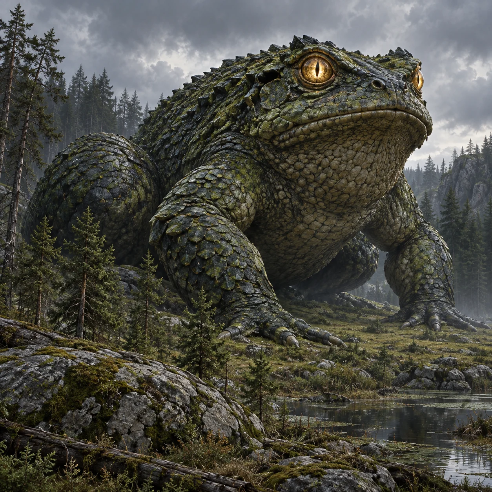
Kreutzwald's malevolent giant Northern Frog: armoured scales and two candle-bright eyes, not the modern protector interpretation.
Aura: Threatening presence through looming crouch, predatory gaze, low viewpoint and cold natural woodland light; only the eyes emit restrained documented candle-like light.
Audit ciri dan sumber
- Giant low broad frog-like body and frog limbs
- Dense armour-like scales covering the body
- Exactly two large bright eyes; restrained source-supported light
- No conventional dragon wings, horns or fire breath
- Trees provide reference for the documented gigantic scale
Viewed the saved native PNG. A massive broad frog dominates the woodland, with dense plated scales, two amber candle-bright eyes, visible front limbs and folded rear haunches. Small conifers establish gigantic scale. No wings, horns, fire breath, neon envelope or energy ribbons are visible. The forest and moss are editorial setting, not asserted traditional attributes.
Review sumberUse case: stylized-concept. Asset: square premium painterly naturalistic illustration for Mythics folklore encyclopedia. Subject: The Dragon of the North, Põhja konn, the terrifying giant Northern Frog of Kreutzwald's Estonian tale. Depict ONE massive frog-like monster with low broad amphibian body, four frog limbs, whole body covered in dense formidable armour-like scales stronger than stone and iron, and exactly TWO large candle-bright eyes. The eye light is the only magical effect and remains restrained. A looming crouch in a dark northern woodland clearing, small ordinary trees and weathered rocks demonstrate its explicitly gigantic scale, without people or gore. Wide three-quarter composition shows the entire scaled frog body, folded powerful hind legs and massive head clearly; oppressive quiet, predatory presence, cold natural overcast light, earthy green-black scales, tactile moss and bark, rich hand-painted material realism. Froglike appearance is essential; do not turn it into a conventional dragon. No wings, horns, serpent body, extra heads, fangs, fire breath, generic glowing aura, neon outline, energy ribbons or luminous colored mist. Beautifully resolved creature anatomy, cinematic painterly craft, no text, labels, logo, border, or watermark.
Eryr Gwern Abwy

Ancient Welsh eagle answering Arthur's envoys about Mabon
Aura: Presence through source-backed form and physical scene; no generic glow, ribbons or magical mist.
Audit ciri dan sumber
- Ancient Welsh eagle answering Arthur's envoys about Mabon
- Coherent anatomy and documented mythic scene
Ancient eagle speaking with two attentive Arthurian envoys by Welsh river; ordinary eagle form, open beak and source narrative without giant scale.
Review sumberCreate one square premium painterly mythological catalogue illustration. Show the ancient Welsh eagle Eryr Gwern Abwy, a normal-sized aged eagle perched on a very low worn rock, its open beak addressing TWO fully clothed adult Arthurian envoys who lean attentively toward it, one calmly indicating the river where the eagle can guide them. This is the source episode of the eagle answering the envoys about Mabon son of Modron. Human adults and eagle share scene in Welsh river woodland. Worn rock now only a span high is visible below its talons. Keep ordinary eagle anatomy, no human face, no giant size, no written dialogue or speech symbols. Detailed naturalistic painting and readable documented mythical identity; coherent anatomy. No text, watermark, border. No generic glow, luminous eyes, magical mist, ribbons or particles. Exact costume colors and setting details editorial.
Loong
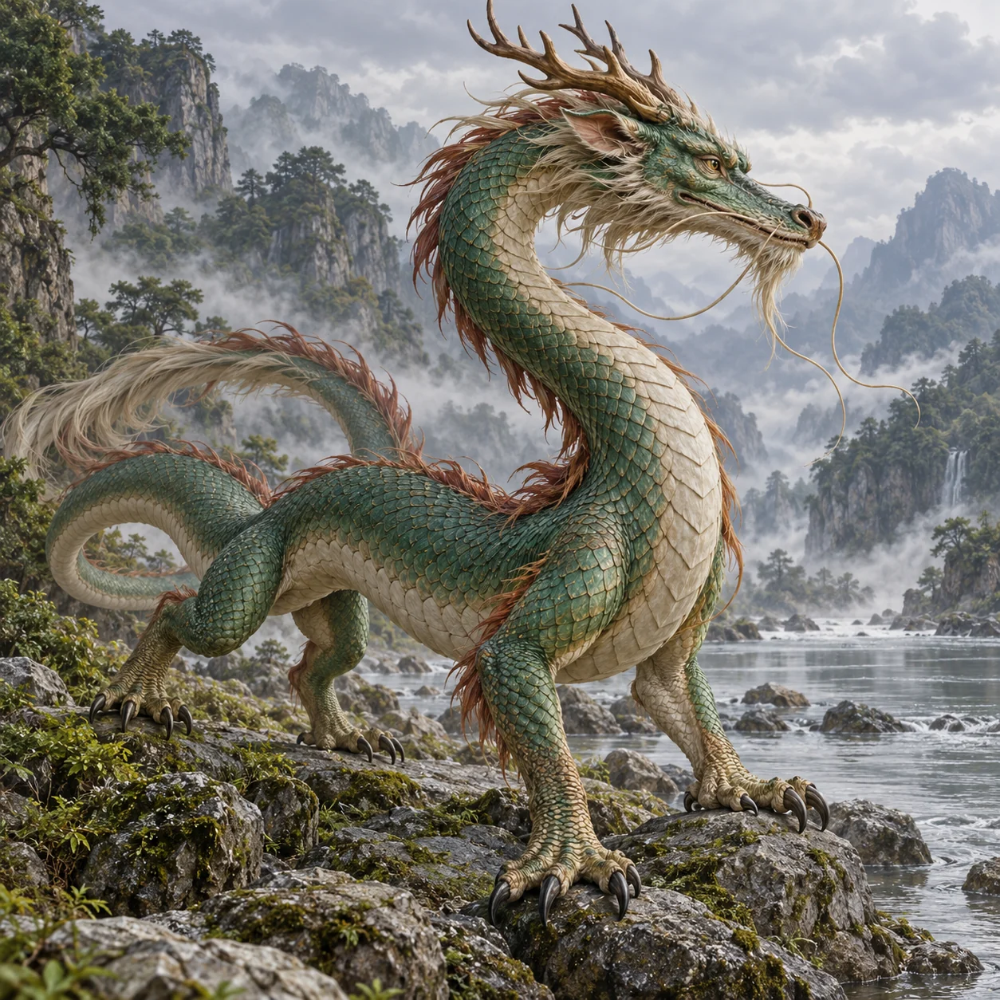
Doré anatomical variant: deer antlers, crocodile head, snake neck, hawk claws/tiger palms and cow ears on the common four-legged serpentine form.
Aura: Commanding presence conveyed by alert expression, poised curved body, framing and natural misty river lighting.
Audit ciri dan sumber
- One serpentine dragon with exactly four legs
- Deer antlers and elongated crocodilian head
- Natural water-side scene; no wings or added luminous magical effects
Inspected actual native PNG: one serpentine scaled dragon, four visible separate legs, deer antlers, elongated crocodilian muzzle, cloven-ear shape and curved claws; natural rocky river staging without neon or energy effects. Alert poised presence.
Review sumberUse case: stylized-concept. Asset type: square editorial illustration for a source-backed mythology encyclopedia. Create one premium painterly naturalistic depiction of Loong, the Chinese dragon, using the coherent Doré anatomical variant: a long snake-like neck and serpentine body with exactly four legs, deer antlers, elongated crocodilian head, cowlike ears, hawklike curved claws on powerful tigerlike palms. All four legs must be separately legible. Frame its curved body poised beside a quiet rocky river, alert dignified expression. Natural overcast daylight, soft ordinary river mist and rich restrained earth/jade colours, tactile scales, masterful brushwork, beautiful detailed anatomy. This is editorial scenic staging; preserve documented body form. Presence comes from pose, gaze and framing, no generic glowing aura, no neon outline, no energy ribbons, no luminous coloured mist. No wings, extra limbs, flaming pearl, invented magical effects, text, logos, border or watermark. Single image, square composition.
Markut

Great Markut eagle carrying weary shaman from sky
Aura: Presence through source-backed form and physical scene; no generic glow, ribbons or magical mist.
Audit ciri dan sumber
- Great Markut eagle carrying weary shaman from sky
- Coherent anatomy and documented mythic scene
Enormous coherent eagle carries shaman and physical drum above mountains; outer wingtip crop does not obscure form.
Review sumberCreate one square premium painterly mythological catalogue illustration. The GREAT EAGLE MARKUT flies down toward Altai mountains carrying a weary fully clothed ADULT SHAMAN safely seated on its enormous back between wings. Giant scale clear, human rider small but readable; golden-brown eagle, two broad feathered wings entirely within frame, two taloned legs, one eagle head. Adult rider holds feathers lightly wearing practical opaque shaman garments, small physical drum secured across back. Source protects shamans guides souls then carries them down when strength fails. No glowing feathers/eyes, no invented horns. High-altitude natural daylight and monumental presence. Detailed naturalistic painting, documented mythical form/scene, coherent complete relevant anatomy. No text, watermark or border. No generic glow, luminous eyes/mist, floating ribbons, particles or unsupported magical powers.
Unnamed eagle on the top of Yggdrasil
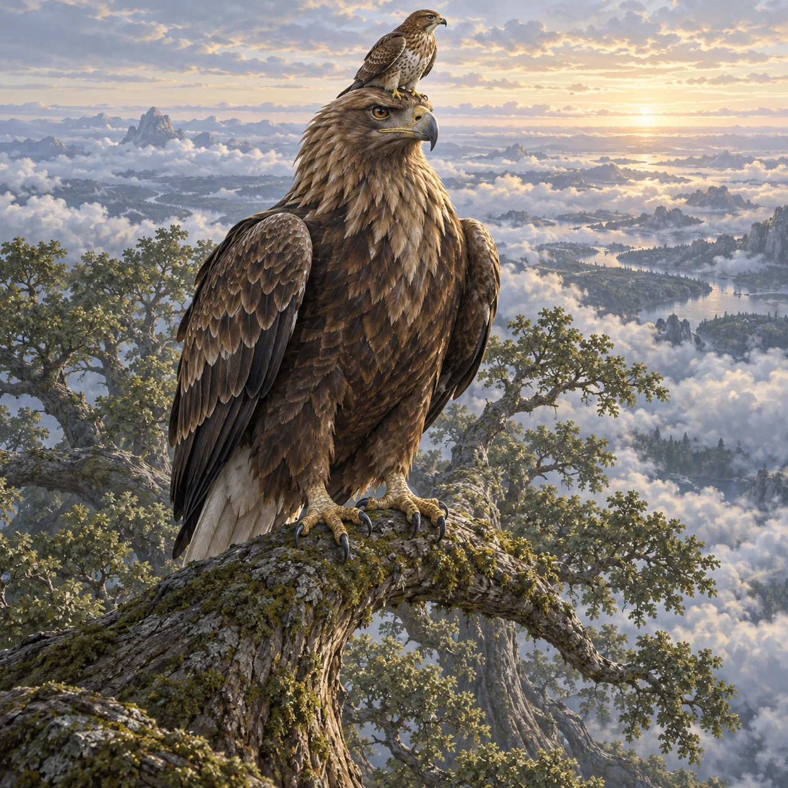
Snorri's Yggdrasil eagle with Veðrfölnir perched centrally above its eye line
Aura: Calm commanding wisdom through watchful gaze, extreme height, distant clouds and cold natural dawn
Audit ciri dan sumber
- Ordinary eagle on the upper branches of Yggdrasil
- Separate smaller hawk centrally on eagle forehead between its eyes
- Natural folded wings and two taloned feet; no fusion or magical envelope
Native PNG inspected: coherent eagle perched on ash branch, two feet and folded wings; separate smaller hawk perched centrally on brow above beak, both birds complete. Dawn cloudscape gives world-tree height. No glowing aura, hybrid anatomy or extra heads.
Review sumberUse case: stylized-concept. ONE square premium painterly naturalistic Norse mythology illustration of the unnamed eagle atop Yggdrasil, selecting Snorri's Gylfaginning version. Show a majestic ordinary eagle perched on the topmost branch of an immense ash tree, with a distinctly smaller ordinary HAWK perched centrally on the eagle's forehead, BETWEEN its two eyes. The hawk is a separate complete small bird, NOT an extra head or fusion with the eagle. Three-quarter frontal head angle so both eagle eyes and central hawk position are legible. Eagle has a natural hooked beak, two folded feathered wings, two taloned feet gripping the branch, complete full body inside frame. The hawk has its own head, folded wings and small talons perched above the bridge of the eagle's beak between the eyes. Below, layered ash foliage and an abyss of distant natural clouds suggest the world tree's height. Wise commanding tranquil expression, cold dawn light and pale sky, rich feather detail and painterly atmosphere. No crowns, antlers, horns, glowing eyes, body halo, neon outlines, magic ribbons, coloured luminous mist, extra birds, squirrel or dragon, text, border, collage, watermark.
Akbuzat
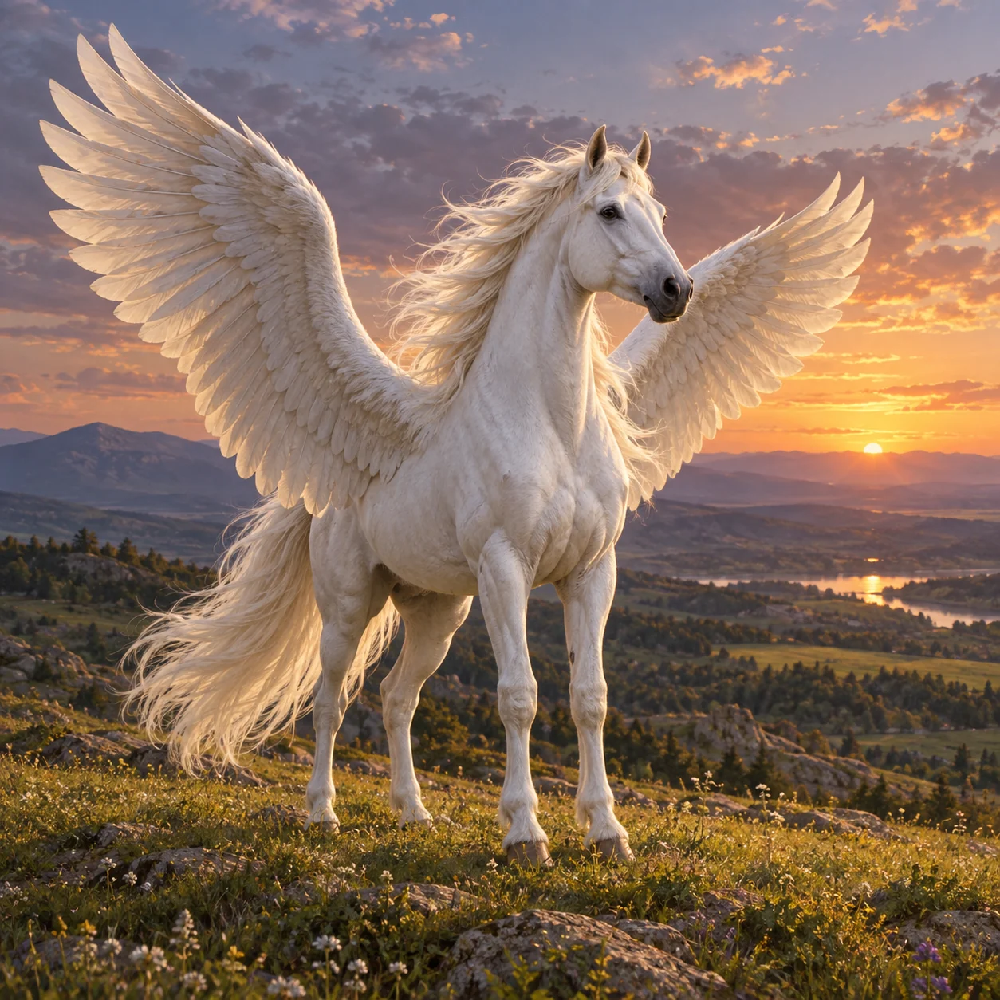
Bashkir white winged heroic horse on land; the documented colour and winged anatomy are retained.
Aura: Noble alert stance, sweeping wings, wind and natural dusk light convey the heroic presence.
Audit ciri dan sumber
- One white horse with two wings and four equine legs
- Ordinary horse scale without rider or armor
- Natural landscape and light; no luminous envelope
Inspected actual native PNG: white horse, balanced pair of feathered wings, four equine legs, alert noble pose and natural sunset lighting. No armor, horns, generic aura or unsupported magical effects.
Review sumberUse case: stylized-concept. Asset type: square editorial mythology illustration. Paint Akbuzat, the Bashkir heroic white winged horse, as a single magnificent anatomically natural white horse standing on land with exactly four equine legs and a balanced pair of large wings. Feather structure is an artistic rendering of the documented wings. Show a noble alert gaze, wind moving its white mane, wings lifted in a graceful poised arc. Meadow and distant foothills at natural dusk, delicate warm sunlight on white coat, atmospheric depth, premium painterly naturalism and finely rendered fur and feathers. Normal horse size, no rider, tack, armor, horn, extra legs, or invented ornaments. Its presence comes through noble pose, gaze and ordinary light, no glowing aura, neon, energy ribbons, coloured luminous mist, healing foam, text, border, logos or watermark. One square image.
Badraç
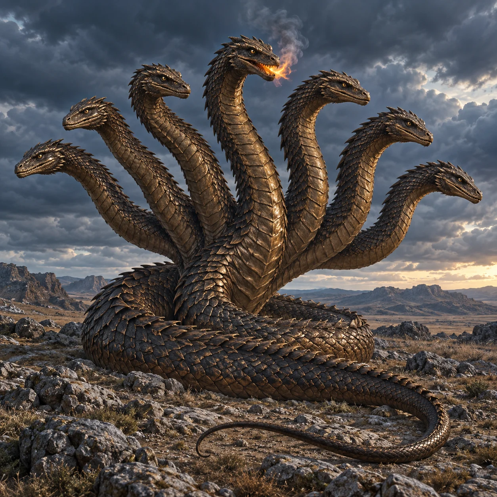
Seven-headed scaled dragon with a whip tail and restrained documented fire breath.
Aura: Threatening presence through an alert fan of seven heads, armoured material and storm-dark natural light.
Audit ciri dan sumber
- Exactly seven separately visible heads on a single dragon body
- Armour-like scales and one long whip tail
- Restrained fire from one mouth only; no generic aura
Viewed saved native PNG. Counted exactly seven separate heads and necks from one coiled scaled body; long thin whip tail extends across foreground. One central mouth emits a small orange flame with normal smoke. No wings, neon envelope, colored magical mist or extra heads visible.
Review sumberSquare premium painterly naturalistic folklore art for Mythics. Depict Badraç, the Turkic Seven-Headed Dragon, using its documented seven heads, armour-like scales, whip-like tail and fire breath. ONE wingless scaled serpentine dragon body coils on bare rocky ground. Exactly SEVEN separate long necks emerge from the same body, with exactly SEVEN complete heads clearly spaced in a fan, easy to count, all fully inside the image. Left to right there are seven heads at distinct heights, no overlap, each with two normal eyes and a reptilian snout, no horns. Central mouth releases only a small restrained orange flame and natural smoke; the other six mouths have no effects. Single long slender whip tail visibly curves in the foreground. Menacing alert stance, detailed dark bronze armour-like scales, storm over an ordinary rocky steppe, soft cold natural side light and small local flame light. Entire body and heads visible in wide composition. No wings, humanoid body, extra heads, severed heads, gore, giant scale comparisons, generic aura, neon outline, magical ribbons, luminous mist, text, logos or watermark. Color and steppe setting are artistic staging; do not add fantasy regalia.
feathered serpent
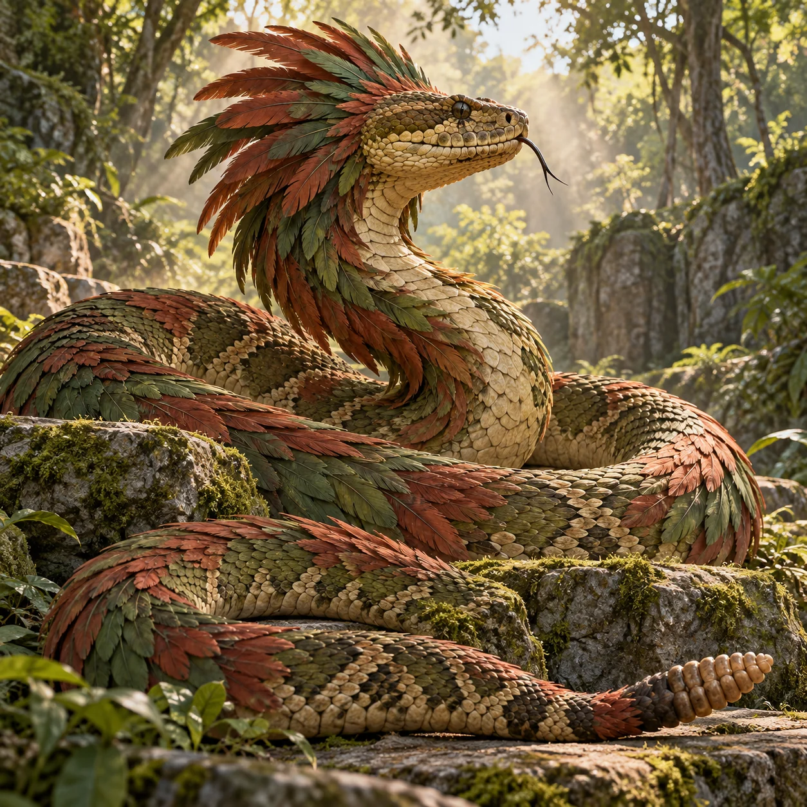
Olmec crested rattlesnake Feathered Serpent, selecting legless feathered variant
Aura: Calm sacred authority through upright head, close framing and natural forest dawn light
Audit ciri dan sumber
- One coiling legless serpent with rattlesnake head and visible tail rattle
- Layered feather crest and feathered portions of body
- No bird wings, human form or generic magical effects
Native PNG inspected: one continuous coiling legless rattlesnake, clear tail rattle at lower right, prominent feather crest and body feathers. No limb/wing hybrids, glow envelope or neon effects; forest sunlight supplies presence.
Review sumberUse case: stylized-concept. Create ONE square premium painterly naturalistic mythology illustration of the Mesoamerican Feathered Serpent, selecting the documented Olmec crested rattlesnake variant, distinct from a human deity or European dragon. One long coherent RATTLESNAKE coils across weathered stone in a quiet humid forest clearing; natural serpent head with broad snout, one head, visible tail rattle, broad crest of layered feathers behind its head, and fine feathers covering parts of its coiling body among natural scales. Depict the legless version: no limbs, no separate bird wings, no mammalian paws, no antlers or horns. Full uninterrupted coils and tail visible in square composition, head raised with calm divine authority; restrained beautiful moss greens and muted earth-red feathers are artistic colour choices. Natural dawn shafts through trees illuminate feather and scale texture. Convey sacred ancient presence through stately pose, close framing, atmospheric depth and natural sunlight, without magical glow. The surroundings are simple stone and forest, no architectural period mixing. No dragon fire, neon body outlines, halo, magical energy ribbons, luminous coloured mist, glowing eyes, human face, lettering, border, collage or watermark.
Taweret
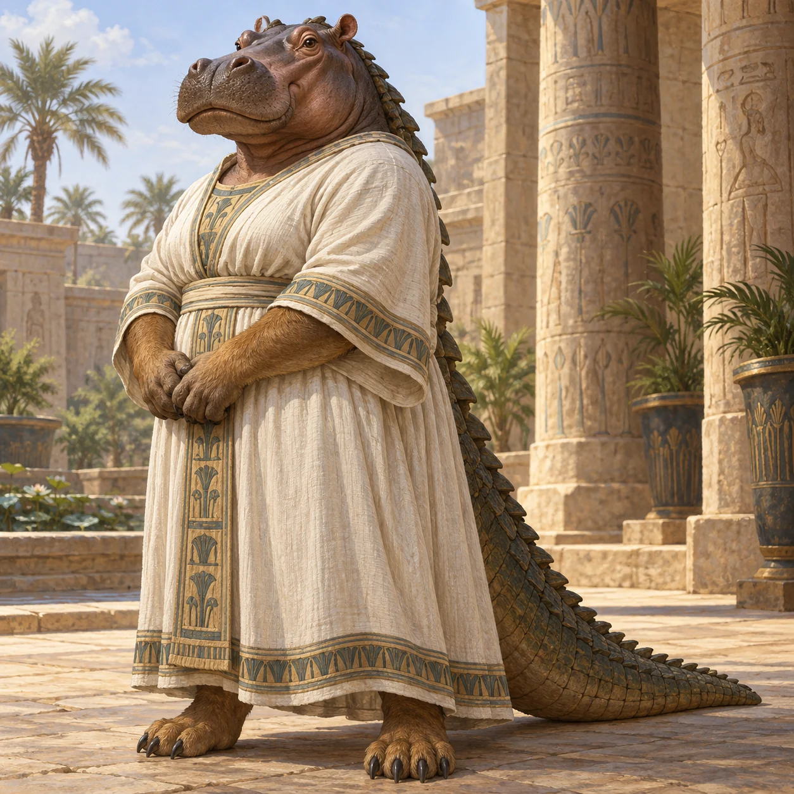
Documented upright hippopotamus hybrid with lion paws and crocodile back/tail, in a fully covered editorial linen robe.
Aura: Quiet protective pose, attentive gaze and natural daylight give sacred presence.
Audit ciri dan sumber
- Upright hippo head/body with two arms and two lion-footed legs
- Crocodile back ridge/tail visible
- Entire torso covered by opaque linen robe
Actual native PNG inspected: upright hippo-headed figure, two lion arms/paws and two lion feet, crocodile dorsal ridge and long tail visible. Opaque robe fully covers torso. Natural sunlit temple staging, no generic aura or exposed anatomy.
Review sumberUse case: stylized-concept. Asset: square premium painterly naturalistic mythology encyclopedia illustration of TAWERET. Render a reverent sacred protective figure with the documented upright bipedal hippopotamus head and heavy hippo body, lion limbs and paws, crocodile back ridge and long crocodile tail. Exactly two arms and two legs, standing on two lion feet. Dress the figure in an entirely opaque modest linen robe that covers the whole torso, shoulders, chest and hips, no exposed torso anatomy. Robe and quiet temple courtyard are editorial staging for this respectful portrait. Full figure three-quarter composition with tail visible, calm protective posture and attentive expression. Natural warm daylight, stone courtyard, tactile cloth, skin and scales, premium painterly naturalism, subdued earthy palette. No birth scene, children, nudity, jewelry, weapons, extra limbs, glowing aura, neon outline, energy ribbons, coloured luminous mist, text or watermark. Single square image.
Leucrota
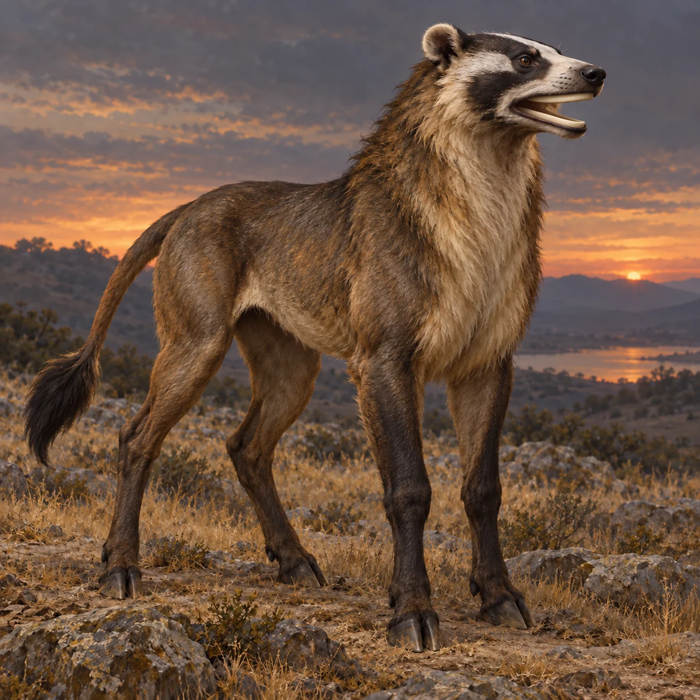
Pliny's ass-sized leucrocotta: stag haunches, lion breast/neck/tail, badger head, cloven hooves and continuous bone ridges replacing teeth.
Aura: Uncanny presence from wide-eyed badger head, open bonelike cutting jaw, stiff neck and dusk lighting.
Audit ciri dan sumber
- Stag haunches with cloven hooves and lion neck/breast/tail
- Badger head and continuous bone ridges instead of teeth
- No horns, giant scale or mixing boar-haunch variant
Viewed corrected native PNG. Badger head, lionlike shaggy neck and chest, tufted lion tail, hoofed stag-like limbs are clear. Open mouth now contains continuous pale ivory upper and lower bone ridges, with all individual teeth removed. No horns, wings, glows or energy effects. The original wrong-toothed candidate is preserved as attempt1.
Review sumberEdit this Leucrota illustration only in the mouth. Keep all other anatomy, pose, fur, badger head stripes, lion neck/chest/tail, cloven hooves, lighting, landscape and composition unchanged. The current individual teeth are wrong. Remove EVERY individual tooth from both upper and lower jaw. Replace them with ONE continuous smooth pale ivory bony cutting ridge along each jaw: unbroken crescent blades of bone, no tooth divisions, no tooth-like notches, no fangs. The mouth should remain open so the two continuous ridges are clearly visible. These are Pliny's ridges of bone IN PLACE OF rows of teeth. No new effects or text.
Naga Rhodes
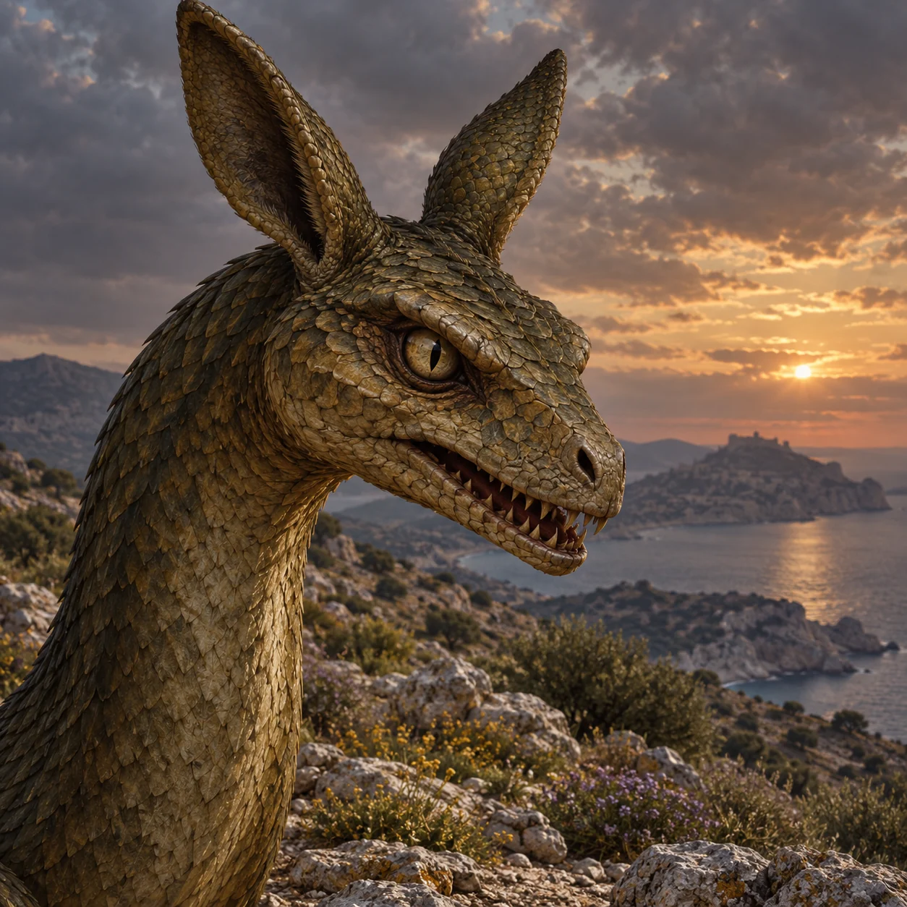
Bosio's medium-horse-size Rhodes dragon, portrait of documented serpent head and scaled mule ears
Aura: Threatening alert expression, dark scales and naturally lit rocky Mediterranean dusk
Audit ciri dan sumber
- Scaled reptilian serpent head and two long mule-shaped ears
- Hard scales and visibly sharp teeth
- Close head/neck portrait leaves undescribed limbs and tail outside frame
- No inflated gigantic scale
Inspected native PNG: scaled reptilian head with slit pupil, two long scaled mule-shaped ears and sharp teeth. Portrait framing avoids unspecified limbs/wings, landscape has normal shrub-scale context. No fire, neon or supernatural luminous envelope.
Review sumberUse case: stylized-concept. ONE square premium painterly naturalistic medieval mythology illustration of the Dragon of Rhodes, selecting Bosio's documented account. Render a close three-quarter HEAD AND UPPER NECK portrait of this threatening animal: SERPENT'S HEAD with TWO LONG MULE EARS, both ears covered in tough small scales, very hard scaly skin, and sharp pointed teeth glimpsed through a partly open mouth. The body is the size of a medium horse, NOT a colossal mountain dragon. Frame the head and neck low above Mediterranean rocky ground, with tiny wildflowers and scrub at natural proportions, distant Rhodes hills and blue sea under overcast sunset. Crop the rest of the animal beyond the lower frame so unspecified limbs, body architecture and tail are not invented. Two mule-shaped upright ears should be obvious, no horns. Anatomically clear snake face with slit nostrils, reptilian eyes and fine scales, lean neck; fierce alert expression and dark natural shadows provide horror presence. Muted olive-brown scales are editorial palette. No wings, antlers, crown, fire breath, luminous eyes, supernatural glowing envelope, neon outline, coloured magic mist, energy ribbons, gore, humans, text, border, collage or watermark.
Zaldi
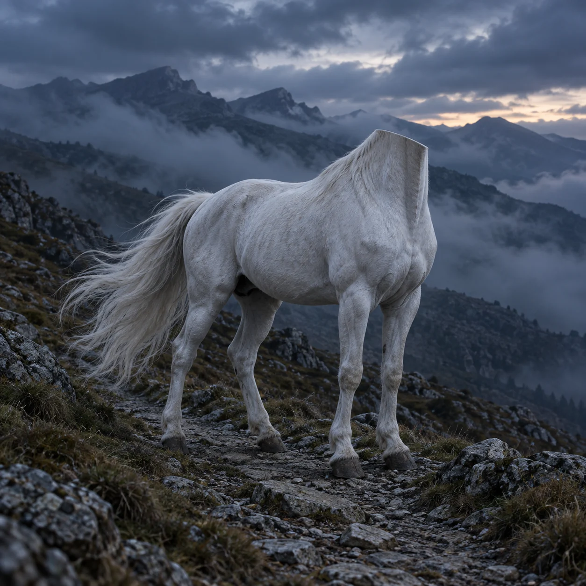
Zamari zuria, the headless white horse haunting Basque mountains, shown intact and bloodless as a supernatural form.
Aura: The unsettling headless form, solitary mountain silhouette and natural dusk create ominous presence.
Audit ciri dan sumber
- One white equine body with four legs
- Truly headless: no equine head or face, clean smooth natural end to neck
- Mountain setting without wings or glowing effects
Inspected actual native PNG: white headless horse with four natural legs, smooth bloodless neck termination and tail; full body visible in natural mountainous twilight. No glow, wings or gore.
Review sumberUse case: stylized-concept. Asset type: square source-backed mythology encyclopedia illustration. Depict Zaldi specifically as the documented Zamari zuria variant: a white HEADLESS horse haunting the Basque mountains. One white equine torso with exactly four normal horse legs and tail; absolutely no head, no face, no ears, no eyes. Its neck ends smoothly and naturally as an uncanny complete supernatural anatomy, not an injury: no blood, wound, exposed tissue or gore. Entire body visible on a lonely stony mountain path, three-quarter side view making the missing head unmistakable. Natural blue-grey twilight, ordinary low clouds and wind in its coat and tail, tense silence and premium painterly naturalism. Horse at normal scale. Presence from the uncanny form, framing and mountain atmosphere. No wings, horns, rider, armor, glowing aura, neon outlines, energy ribbons, coloured luminous mist, text, logos or watermark. Single square image.
Chudo-Yudo
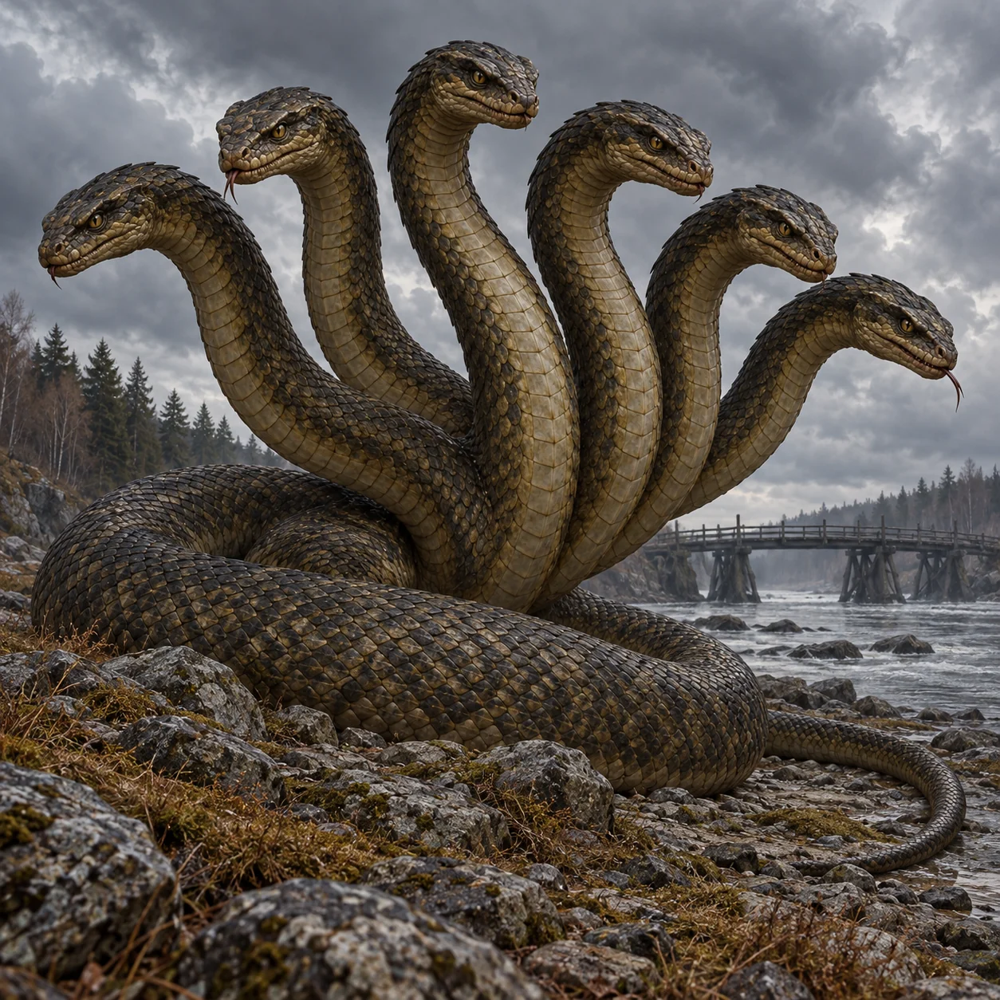
Six-headed serpent of Ivan the Peasant's Son and Chudo-Yudo; no twelve-headed fiery-finger or Fish-Whale mixture.
Aura: Ominous presence from six poised serpent heads, predatory gaze and bleak natural riverside light.
Audit ciri dan sumber
- Exactly six separate heads and necks on one snake body
- No limbs, wings, horns or twelve-headed variant attributes
- Stony riverbank crossing setting
Viewed PNG: exactly six heads countable above one coiled snake body, with one long tail, no limbs or wings. Dark scaled reptile form by a river and wooden bridge matches selected scene. No fire finger, fish-whale features, glowing outline or energy effect.
Review sumberSquare premium painterly naturalistic illustration of Chudo-Yudo, specifically the SIX-HEADED evil serpent from the Russian folk tale Ivan the Peasant's Son and Chudo-Yudo. Exactly SIX separate serpent heads on SIX long smooth necks branching from ONE coiled snake body, no legs, no arms, no wings, no horns. Arrange six complete heads apart in a broad fan, all easy to count, no overlaps or hidden seventh head. One long tail, dense natural reptile scales, mouths closed or slightly open without exaggerated fantasy fangs. Coiled on a stony bank beyond the River Smorodina; an empty old wooden bridge distant behind is editorial visualization of the tale's crossing, no rider or combat scene. Grounded animal anatomy, menacing vigilant gaze, low perspective, textured dark olive-brown scales, bleak northern riverside, ominous cloudy natural daylight. Do not add the fiery finger of the DIFFERENT twelve-headed variant, fish-whale features or fire breath. No gore, magical aura, luminous mist, neon edges, energy ribbons, text, logo, border or watermark. Threatening presence comes from six heads, poised body and natural atmosphere.
Faronika
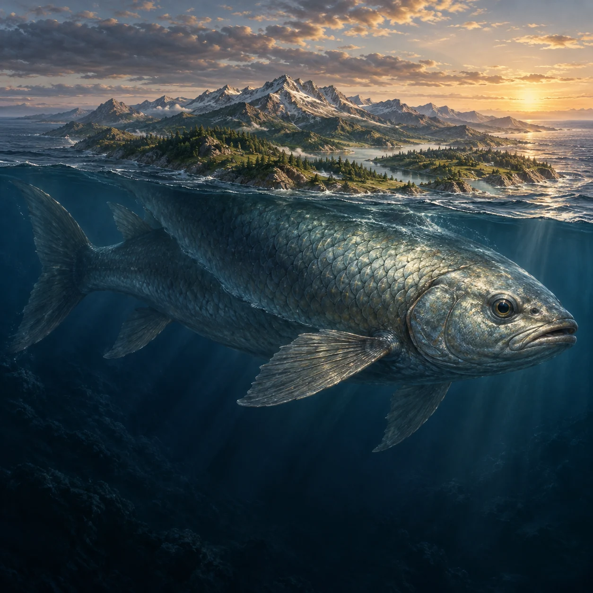
Single fish-shaped Faronika carrying the earth on its back
Aura: Cosmic scale and sacred quiet tension conveyed by dark sea depths, low dawn and tiny forest reference features
Audit ciri dan sumber
- One immense coherent fish, normal fins and tail
- Earth with mountains and forests above its broad back
- No two-fish tradition or merged Veronika woman-serpent variant
Native PNG inspected: one massive scaled fish with coherent head, fins and tail beneath earth bearing forests and mountains. Horizon and dark water convey cosmic scale. No woman-serpent, extra fish, glowing orb or magical envelope.
Review sumberUse case: stylized-concept. Create ONE square premium painterly naturalistic Slovene cosmological mythology illustration of FARONIKA, selecting the ONE FISH-shaped world-bearing variant, not the later Veronika half-woman variant and not the separate two-fish tradition. An immense fish swims just beneath the surface of the primeval sea. Its broad horizontal back supports a broad curved mass of EARTH with mountains, little forests and valleys on top; water wraps around its lower body. Fish has a coherent scaled body, one head with ordinary fish eyes and mouth, normal fins and a tail visible in the clear deep water. Side three-quarter cross-sectional artistic perspective that reads as mythology painting rather than chart: dark blue sea around and beneath, small green forests on the earth above provide scale. Fish huge enough to carry earth; no turtle, whale, serpent head, woman torso, multiple tails, houses or humans. Sacred quiet tension conveyed by the creature's vast scale, slow swimming posture, low natural dawn sunlight on the earth and dark sea depths. Muted silver-blue scale palette is an artistic choice. No floating planetary orb or glowing outline, magical energy ribbons, neon effects, luminous coloured mist, sun face, labels, text, diagram arrows, border, collage or watermark.
Gizotso
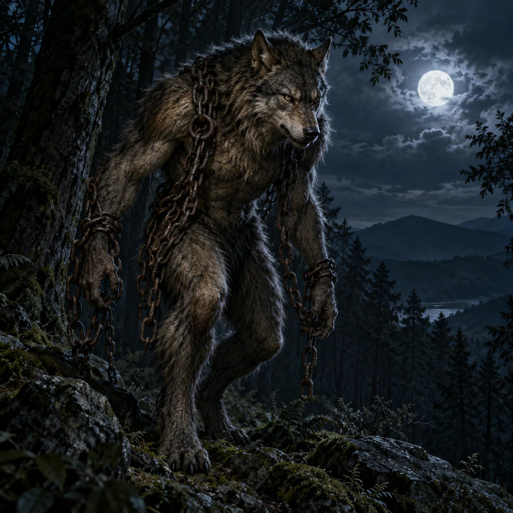
The night woodland half-man, half-wolf monster laden with chains; not the alternative human Monsieur La Forêt.
Aura: Threatening gaze, hunched poised figure and natural moonlit forest shadows convey horror presence.
Audit ciri dan sumber
- Half-human half-wolf physical hybrid
- Visible iron chains
- Forest-edge night scene without victims or gore
Actual native PNG inspected: two-armed two-legged wolf/human hybrid wearing heavy iron chains at night forest edge; powerful ominous gaze and natural moonlight, no aura, victims or gore.
Review sumberUse case: stylized-concept. Asset type: square premium naturalistic painterly mythology illustration. Depict Gizotso, selecting the documented Basque half-man half-wolf monster that appears at night laden with chains. One grounded physical hybrid of human and wolf: humanlike upright posture, two arms and two legs, wolf muzzle and ears, dense coarse wolf fur, natural wolf/human blended anatomy rather than a costume. Heavy real iron chains hang from and around its shoulders and arms, no bondage staging or injuries. A solitary ominous figure at the edge of a dark forest, tense hunched posture and predatory alert expression. Normal roughly human scale relative to trees. Natural moonlight and deep forest shadows, extraordinary texture and premium painterly naturalism. Exact anatomical distribution and chain layout are editorial interpretations of the general half-man half-wolf description. No people, victims, violence, gore, horns, wings, extra limbs, eye beams, glowing aura, neon outlines, energy ribbons, luminous colored mist, text, watermark or border. Single square image.
Hobangoas
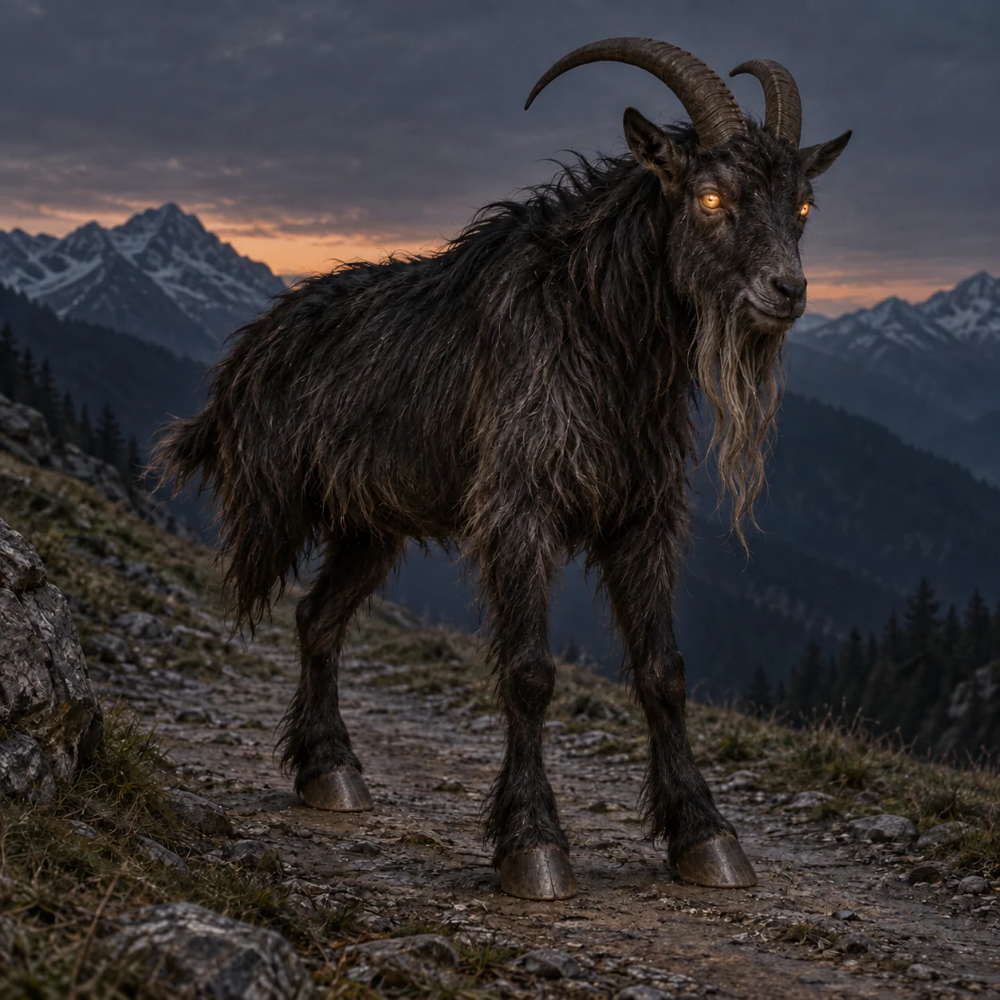
Three-legged billy-goat Habergeiß with horse hooves, long beard and restrained glowing eyes; excludes feathered/bird and procession variants.
Aura: Sinister presence through fixed gaze, long beard, shadowed shaggy coat and cold Alpine dusk; only the source-supported eyes glow.
Audit ciri dan sumber
- Exactly three goat legs ending in solid horse hooves
- Long billy-goat beard and two glowing eyes
- Goat variant without bird-body mixture or generic aura
Viewed corrected native PNG. Counted exactly three legs with smooth unsplit horse-hoof capsules, long goat beard and two restrained amber glowing eyes. Ordinary goat horns remain integral goat anatomy. No fourth leg, wings, feathers, neon envelope or magical fog. Initial cloven-hoof candidate is preserved as attempt1.
Review sumberEdit only the hooves of this three-legged Hobangoas goat illustration. Preserve EXACTLY three legs, whole pose, head, horns, beard, eyes, fur, setting and lighting. Each of the three feet must be a HORSE hoof: one solid broad smooth rounded hoof capsule, single unsplit front surface, no vertical cleft, no paired toes, no cloven goat hoof. Remove all center splits from all three hooves and replace with unmistakable single-piece horse hooves. No new limbs, effects, labels or other changes.
Kuperan
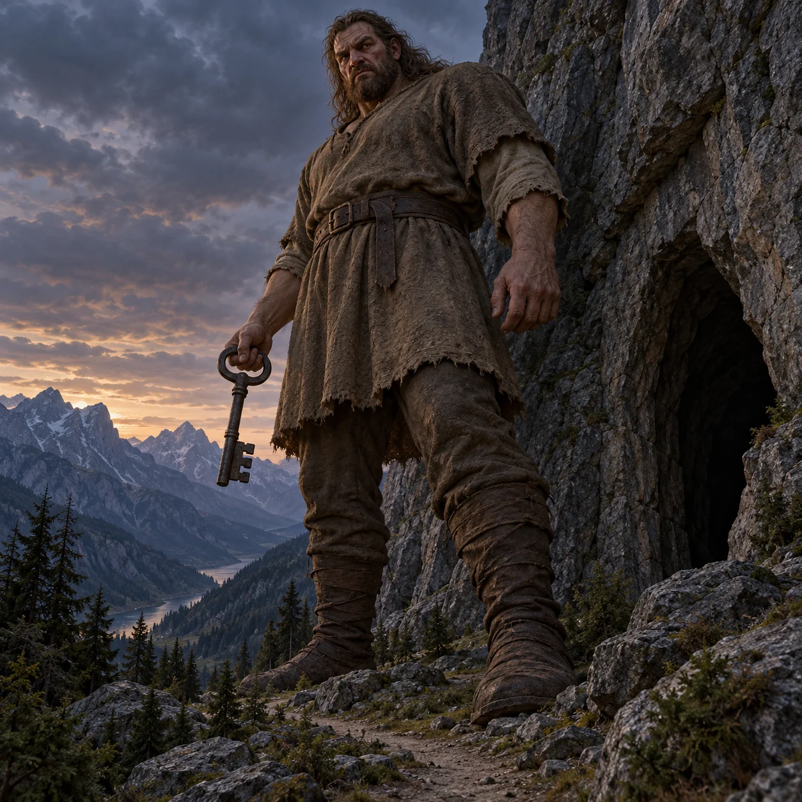
Siegfried-cycle human-looking giant Kuperan with mountain key
Aura: Threatening treacherous gaze, looming stance and rock shadows under cold twilight
Audit ciri dan sumber
- One human-looking giant with normal human anatomy
- Visible iron key at mountain entrance
- Giant scale indicated by small trees and low framing
- No invented horns, animal limbs or magic effects
Native PNG inspected: imposing human-looking male giant, one head/two arms/two legs, key in left hand beside rocky mountain entrance. Tiny trees establish giant scale; rough tunic and normal hands visible. No hybrid anatomy or magical envelope.
Review sumberUse case: stylized-concept. ONE square premium painterly naturalistic medieval German mythology illustration of KUPERAN, the treacherous giant of the Siegfried dragon-slayer cycle. A single immense human-looking adult male giant stands beside a steep mountain-rock entrance, holding a large iron KEY in one ordinary hand, the documented key to the mountain where a dragon dwells. He has a fully human face, one head, two ordinary arms and two ordinary legs, imposing broad shoulders and an intense untrustworthy expression. Plain rough medieval tunic and belt are editorial costume, no extravagant armour. Low camera framing gives monumental scale; small trees, shrubs and narrow valley path below emphasize his documented giant identity. Whole figure inside frame, key clearly visible. His threatening presence comes from tense posture, looming rock, cold twilight and natural directional shadows. No horns, animal face, wings, extra limbs, monstrous glowing skin, magic halo, neon outline, luminous coloured mist, energy ribbons, dragon companion, dwarf companion, humans, fire, gore, text, border, collage or watermark.
Tikbalang
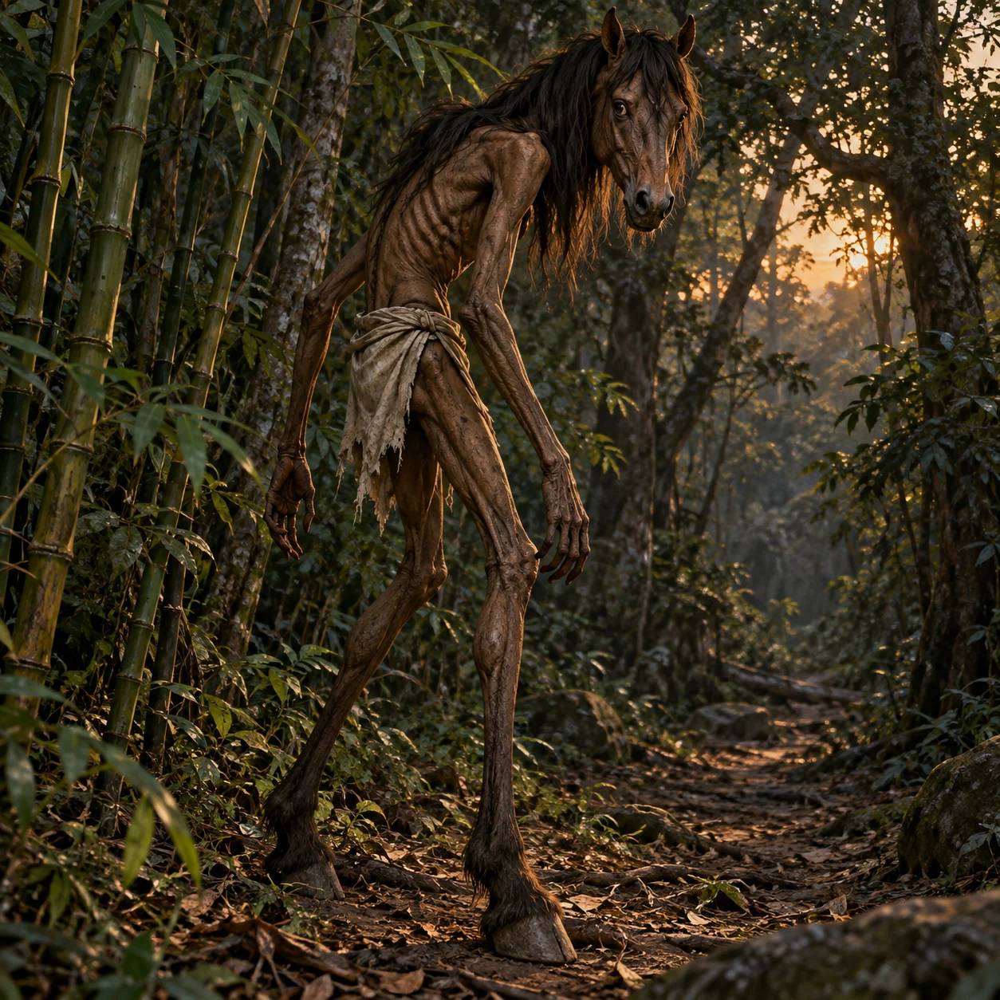
Common later horse-headed and horse-hoofed tall bony humanoid, with disproportionately long limbs; earlier winged variant is not combined.
Aura: Uncanny lanky silhouette, sideways alert gaze and natural forest lighting express mischievous supernatural presence.
Audit ciri dan sumber
- Horse head and hooves on tall thin humanoid body
- Two arms/two legs, conspicuously elongated limbs
- Philippine rainforest without wings, armor or invented magic
Actual native PNG inspected: tall bony humanlike torso with horse head and two horse-hoofed legs, two long arms and disproportionately long lean limbs. Rainforest bamboo path, natural dusk lighting, no wings or magic effects.
Review sumberUse case: stylized-concept. Asset: square premium naturalistic painterly source-backed mythology illustration of TIKBALANG. Select the documented common later form: a very tall thin bony humanoid with one natural horse head, horse hooves on its feet, two arms and two disproportionately elongated legs. Emphasize extremely long limbs and lean sinewy physique, no muscular minotaur or centaur shape. Standing three-quarter full body beside bamboo and rainforest trees, knees and legs clearly visible. Simple opaque plain waist cloth is modest editorial staging, no armor or ornate costume. Horse face with unsettling attentive sideways gaze; tense crooked pose near a forest path conveys the misleader of travellers. Natural forest dusk rays and ordinary leafy shadows, finely textured skin/mane, premium painterly naturalism. No wings from the separate older historical variant, horns, extra heads or limbs, glowing eyes, energy ribbons, aura envelope, neon outline, coloured luminous mist, text, border or watermark. One square image.
Vellamo
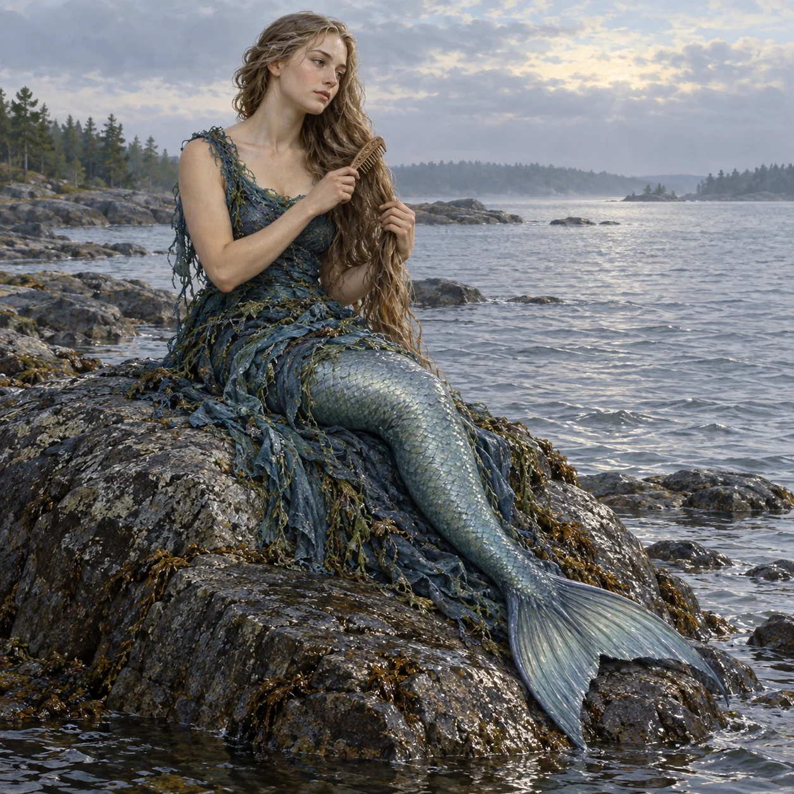
Documented mermaid depiction in a blue sea-moss dress, sitting on a shoreline rock combing her hair.
Aura: Beneficent mysterious presence through calm expression, elegant posture, natural soft morning sea light.
Audit ciri dan sumber
- Beautiful human upper body and exactly one fish tail
- Blue sea-moss dress covers torso
- Rock-seated hair-combing pose; no invented magical glow
Viewed native PNG: one beautiful humanlike woman sits on a wet rock combing long hair, in a textured blue seaweed/moss dress. A single scaled fish tail ends in one fin, no legs or extra tail. Ordinary arms/ears, no horns or wings. Natural water light and distant gray haze, no luminous envelope or energy effects.
Review sumberSquare premium naturalistic painterly folklore illustration of Vellamo, Finnish Mistress of Water. Select the documented MERMAID depiction: a tall beautiful humanlike woman with ONE fish tail in place of legs, wearing a modest blue dress made from sea moss. She sits on a shoreline rock calmly combing her long hair; the blue sea-moss bodice/drapery covers her torso, the single silvery blue-green fish tail clearly visible down to one fin over the rock. Gentle solemn beautiful face, ordinary human arms/hands/ears and eyes, no horns, wings or fangs. Gray northern lake and low rocky shore, early natural morning light, real nonluminous haze far above water, restrained marine blue palette, tactile wet stone, rich painterly realism. Full seated figure and tail inside frame. Beneficent mysterious presence through calm gaze, poised posture and soft natural sea light. Hair color is an editorial choice. No cow herd or second figure, no elaborate crown, jewelry, generic magical glow, neon outline, energy ribbon or luminous colored mist; no text, logo, border or watermark.
Bäckahästen

White brook horse with sharp fangs and a lengthening back carrying multiple children
Aura: Presence through source-backed form and physical scene; no generic glow, ribbons or magical mist.
Audit ciri dan sumber
- White brook horse with sharp fangs and a lengthening back carrying multiple children
- Coherent anatomy and documented mythic scene
White brook horse has explicitly elongated back, four legs and sharp fangs, carrying four clothed children safely; source-supported supernatural anatomy.
Review sumberCreate one square premium painterly mythological catalogue illustration. Show the Scanian Bäckahästen, a WHITE brook stallion whose BACK HAS SUPERNATURALLY LENGTHENED to support FOUR fully clothed children seated in a row, by a quiet brook. Full clear side profile: one horse head, one extremely elongated torso/back about three ordinary horse-back lengths long, exactly FOUR legs total with two front legs under the chest and two hind legs at the far rump, one tail. Its mouth slightly open reveals a few SHARP FANGS, no blood. Children sit safely upright, no drowning or falling. Natural white coat, clear eerie elongated anatomy, physical brook reflection, no luminosity, magical fog or extra limbs. Detailed naturalistic painting and readable documented mythical identity; coherent anatomy. No text, watermark, border. No generic glow, luminous eyes, magical mist, ribbons or particles. Exact costume colors and setting details editorial.
Basandere
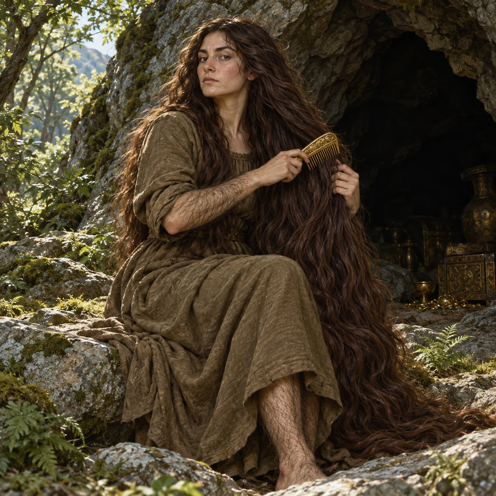
Humanlike hairy wild woman with very long hair combing with a golden comb by a cave mouth.
Aura: Watchful reserved expression, quiet combing pose and chiaroscuro at a cave entrance convey wild guardian presence.
Audit ciri dan sumber
- Adult humanlike woman, very long hair, visible body hair on arms
- Golden comb clearly held in her hand
- Cave entrance, modest opaque robe, no horns or invented animal anatomy
Actual native PNG inspected: humanlike adult wild woman with extremely long hair, visibly hairy forearm/lower leg, clear golden comb, cave and subdued treasure objects. Opaque dress, natural forest daylight and watchful expression without aura or hybrid features.
Review sumberUse case: stylized-concept. Asset: square premium naturalistic painterly mythology encyclopedia illustration. BASANDERE of Basque tradition: an adult humanlike wild woman with a hairy body, visibly coarse body hair on forearms and lower legs, and exceptionally long thick hair. She sits near a rocky cave mouth, gently drawing a clearly visible GOLDEN COMB through her very long hair with a watchful reserved expression. Entire torso covered by a simple opaque long earth-coloured dress; costume is modest editorial staging and must not conceal the documented hairy forearms. A few indistinct treasure objects rest in the cave shadow, secondary to figure. Forest surroundings, natural dappled daylight fading into dark cave, finely rendered hair and stone, serene uncanny guardian presence via pose and expression, painterly naturalism. Human facial anatomy and ordinary human size. No horns, wings, fangs, animal legs, exposed torso, seductive pose, glowing aura, emitted spells, neon outlines, energy ribbons, luminous coloured mist, text or watermark. One square image.
Bükrek and Sangal
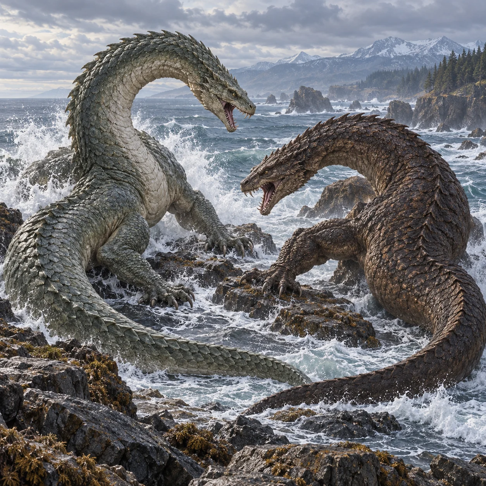
Paired giant wingless long-necked lizards Bükrek and Sangal facing each other in opposed curved fighting poses.
Aura: Opposing resolute and threatening presence through curved bodies, confronting jaws, muscular clawed limbs and stormy natural ocean light.
Audit ciri dan sumber
- Exactly two distinct dragon bodies, each with one head
- Long-necked giant lizard forms, strong claws, no wings
- Opposed curved fighting poses without drawn yin-yang icon
Viewed native PNG: two separate wingless long-necked lizard dragons, one gray-green and one dark brown, curve toward each other over coastal rock. Each has a single head, clawed forelimbs and separate tail. Waves partly obscure rear limbs. No wings, horns, fire breath or energy aura. Distant trees/coast help convey large scale.
Review sumberSquare premium painterly naturalistic folklore art: Bükrek and Sangal, the paired good and evil dragons of Turkic and Altai tradition. EXACTLY TWO separate giant long-necked lizard-like dragons grapple at the edge of an ocean. Each has ONE head, ONE long neck, ONE long reptile tail, FOUR lizard legs with powerful claws and NO wings. Two complete bodies circle one another in opposing curved arcs, recalling a yin-yang arrangement naturally through poses; no drawn symbol. Good Bükrek is resolute and protective, evil Sangal menaces with a low angry head; neither is anthropomorphic. Source does not prescribe their colors: use editorial muted gray-green Bükrek and dark brown Sangal. Giant scale shown by small coastal boulders and distant trees, natural cold ocean side light, waves and weather, beautifully tactile scales and grounded lizard anatomy. No horns, fantasy armour, extra heads, fire breath, glowing envelope, neon outline, magical ribbons or luminous colored mist; no text, logos or watermark. Full wide composition with both heads and tails distinguishable, no gore or humans.
Death
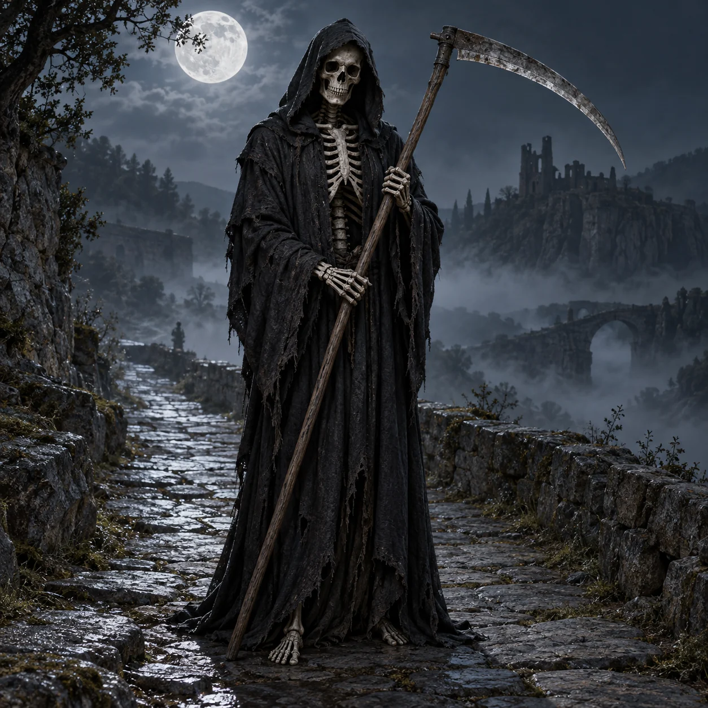
Modern Grim Reaper personification: berobed skeleton with scythe
Aura: Solemn inevitable presence through still pose and cold moonlit path
Audit ciri dan sumber
- Single human skeleton in hooded dark robe
- One agricultural scythe held naturally
- Empty eye sockets and natural moonlight; no magic glow
Inspected native: hooded berobed human skeleton with skull, ribs, bony hands and two feet visible; single scythe fully in frame. Natural moonlight on old stone path and ordinary background fog; no glowing sockets or emitted aura.
Review sumberUse case: stylized-concept. ONE square premium painterly naturalistic mythology illustration of DEATH, selecting the documented modern Grim Reaper personification ONLY. A single human SKELETON wearing a plain dark hooded ROBE stands on a quiet misty old stone path and holds one SCYTHE with a curved agricultural blade and long wooden handle. Skull clearly visible beneath hood, empty eye sockets without glowing lights, bony hands grip shaft naturally. Two arms and two legs beneath robe; full figure and scythe blade inside frame. Skeletal ribs partly visible within open robe, tasteful depiction without gore or corpses. Death is calm and solemn, neither vicious nor comic. Strong natural moonlight and deep shadows reveal bone texture and worn linen; ordinary nonluminous mist lies far behind along stone path. Convey uncanny inevitable presence through still posture, centered imposing framing and cold natural light. No wings, horse, crown, hourglass, magical aura, neon outline, eye glow, luminous coloured fog, energy ribbon, souls as floating lights, lettering, border, collage, watermark or modern setting. Treat this as a contemporary artistic rendering of the documented Grim Reaper variant, not a universal traditional appearance of death.
Drudwyn

Drudwyn the white young hound with red ears in the hunt of Twrch Trwyth, controlled by Mabon ap Modron. White red-eared hound dashes forward in the foreground on a taut leash held by a human young Welsh huntsman Mabon; ahead across a wooded track stands an enormous wild boar, intact and not injured. Hound and huntsman visibly cooperate in the mythic hunt. Four hound legs, one head and tail, naturally red ears; no aura or glowing eyes. Generic period clothing and wooded staging are editorial.
Aura: None; ordinary environmental illumination.
Audit ciri dan sumber
- Drudwyn the white young hound with red ears in the hunt of Twrch Trwyth, controlled by Mabon ap Modron. White red-eared hound dashes forward in the foreground on a taut leash held by a human young Welsh huntsman Mabon; ahead across a wooded track stands an enormous wild boar, intact and not injured. Hound and huntsman visibly cooperate in the mythic hunt. Four hound legs, one head and tail, naturally red ears; no aura or glowing eyes. Generic period clothing and wooded staging are editorial.
White red-eared hound on leash held by Mabon faces gigantic boar; sourced hunt, normal canine anatomy and no glowing effects.
Review sumberDrudwyn the white young hound with red ears in the hunt of Twrch Trwyth, controlled by Mabon ap Modron. White red-eared hound dashes forward in the foreground on a taut leash held by a human young Welsh huntsman Mabon; ahead across a wooded track stands an enormous wild boar, intact and not injured. Hound and huntsman visibly cooperate in the mythic hunt. Four hound legs, one head and tail, naturally red ears; no aura or glowing eyes. Generic period clothing and wooded staging are editorial. Edit the reference into a full square mythological narrative illustration, restrained painterly realism, strong readable main subject, correct coherent anatomy. No text, watermark, frame, neon, generic aura, magical ribbons, generic mist or smoke. Use only explicitly described source supernatural action. Keep all people fully clothed and all creatures unharmed. Scene staging and clothes are editorial choices.
Eog Llyn Llyw

Eog Llyn Llyw, enormous oldest salmon, carries two fully clothed Welsh heroes on its shoulders through a river toward the looming prison walls where Mabon must be rescued. One gigantic coherent salmon with the two adult men sitting astride behind its head, body cuts water, prison distant on bank. Explicit extraordinary carrying role and heroic voyage, no legs or wings on fish, no glow. Medieval clothes and tower architecture editorial.
Aura: Presence through source-supported iconography, narrative action, posture, scale and natural scene light; no generic magical glow.
Audit ciri dan sumber
- Documented form or event
- Coherent anatomy
- No arbitrary aura
Native individually viewed: Two clothed heroes ride giant salmon toward riverside prison; coherent fish fins and unmistakable carrying episode.
Review sumberUse case: illustration-story. Asset: mythological creature education catalogue. Create one painterly realistic portrait 2:3, coherent rich brushwork and dramatic readable storytelling. No text or watermark. Eog Llyn Llyw, enormous oldest salmon, carries two fully clothed Welsh heroes on its shoulders through a river toward the looming prison walls where Mabon must be rescued. One gigantic coherent salmon with the two adult men sitting astride behind its head, body cuts water, prison distant on bank. Explicit extraordinary carrying role and heroic voyage, no legs or wings on fish, no glow. Medieval clothes and tower architecture editorial. No arbitrary glowing effects, colored mist, glyphs or ribbons.
羽犬
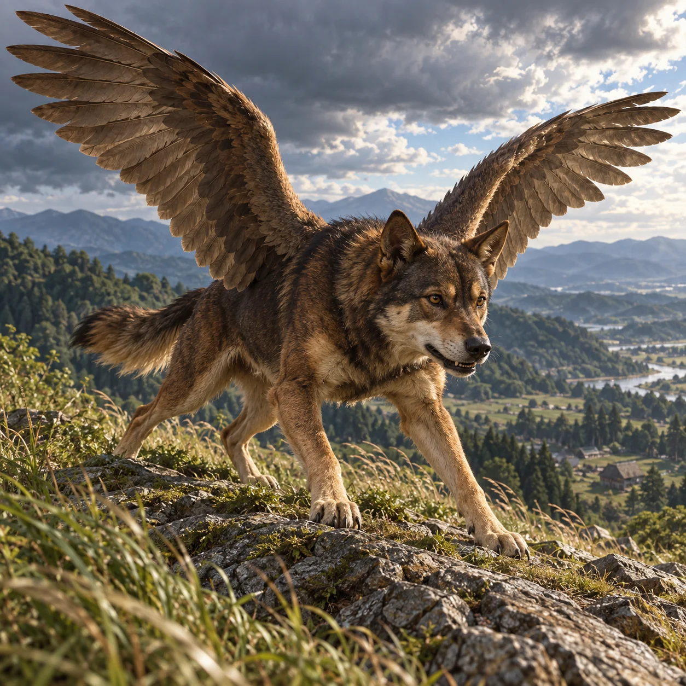
Fierce adult flying Hainu with one pair of back wings, rather than Hideyoshi puppy or modern mascot
Aura: Threatening resilient readiness through tense crouch, dog expression, wind and natural storm-cleared light
Audit ciri dan sumber
- One coherent natural adult dog with four paws and canine tail
- Exactly two separate wings on back
- No inflated giant scale, mascot likeness or added powers
Inspected native: one adult canine with four coherent legs/paws, one tail, dog muzzle and exactly two raised back wings. Fierce crouched alertness and natural rural ridge light; no glow envelope, horns or bird-beak fusion.
Review sumberUse case: stylized-concept. ONE square premium painterly naturalistic Japanese folklore illustration of HAINU, the winged dog of Chikugo, Fukuoka. Choose the documented fierce FLYING DOG variant that resisted Hideyoshi's army, not his separate beloved-puppy variant and not the modern mascot. A single adult natural DOG with ONE PAIR OF WINGS growing from its BACK crouches on a rocky grassy ridge, wings lifted symmetrically enough to show exactly TWO distinct wings. Four ordinary canine legs ending in paws, one dog head with ears and muzzle, one natural canine tail, no hybrid bird beak or extra limbs. Medium ordinary dog size. Short dark tawny fur and muted brown feathered wings are editorial rendering choices; source establishes wings but does not specify feathers or coat colour. Teeth glimpsed in alert tense dog expression, no exaggerated sabre tusks. Full animal and both wing tips within square frame. Distant old Japanese rural wooded hills under storm-cleared natural afternoon light, threatening resilient presence through crouched readiness, intense eyes, low camera framing and wind-blown grass. No armour, collar, warrior, other dogs, flames, neon outline, magical envelope, luminous mist, energy ribbons, glowing eyes, text, border, collage or watermark.
Finngálkn
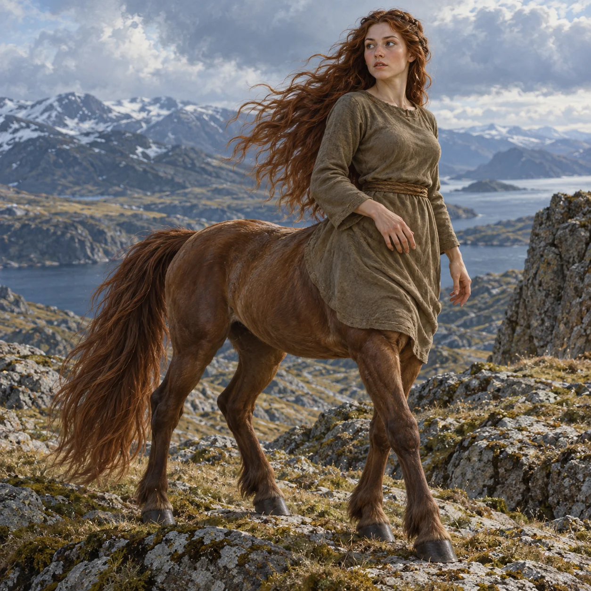
Vargeisa horse-centaur variant from Hjálmþés saga ok Ölvis; not the cat/fox or Grímhildr variants.
Aura: Wary expression and poised centaur silhouette in natural windswept daylight convey uncanny saga presence.
Audit ciri dan sumber
- Female human upper body on horse-centaur lower body
- Horse hooves and tail, long mane, large hands and wide mouth
- Opaque modest torso garment; natural bright eyes without emitted light
Actual native PNG inspected: clothed adult human female upper body on coherent four-hoofed horse-centaur body, long mane/hair and horse tail, large long-fingered hands, broad mouth and naturally bright eyes. No mixing with cat/fox or giant-claw variant; natural northern landscape.
Review sumberUse case: stylized-concept. Asset: square premium naturalistic painterly mythology illustration. Depict FINNGÁLKN selecting one specific documented variant, the adult female Vargeisa from Hjálmþés saga ok Ölvis: a horse-centaur with a human female upper body and horse lower torso, exactly four horse legs ending in hooves, one long horse tail, a long flowing mane, noticeably large human hands, a wide human mouth and bright attentive eyes (natural reflection only). Dress the human torso completely in a plain opaque simple cloth garment as modest editorial staging. Full-body three-quarter view makes the centaur anatomy and all four hooves legible. Windswept rocky northern hills, natural cool daylight, wary uncanny expression and poised stance, exceptional painterly fur/cloth texture and naturalistic anatomy. Keep this horse-centaur variant distinct: no cat/fox traits, huge claws, invented gigantic body, wings, horns, armor, weapons, exposed torso, glowing eyes, aura envelope, neon outline, energy ribbons, coloured luminous mist, text or watermark. One square image.
Fur-bearing trout
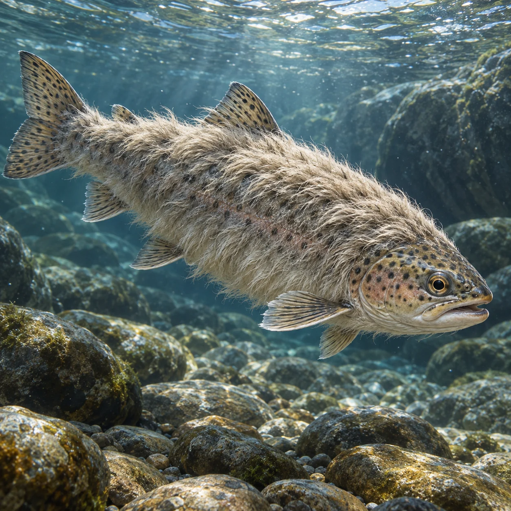
American cold-water folklore trout with a thick fur coat, rendered as a living legendary fish.
Aura: Strange quiet presence through improbable thick fur on natural trout anatomy and cold filtered river daylight.
Audit ciri dan sumber
- Trout body, fins and one forked tail
- Thick mammal-like fur coat over fish body
- No mammal head or legs and no magical glow
Viewed native PNG: one trout with natural spotted fish head, dorsal and paired fins and forked tail, thick pale shaggy fur covering the body. No mammal legs/ears or fantasy additions. Natural underwater highlights and clear river pebbles; no neon envelope, luminous fog or energy effects.
Review sumberSquare premium painterly naturalistic folklore illustration of the American fur-bearing trout legend, ONE trout whose body is covered in a thick coat of soft mammal-like fur for warmth in cold river water. Keep clear trout anatomy: tapered elongated fish body, fish head and round eyes, visible natural trout fins and one forked tail. Dense shaggy pale gray-beige fur follows the body contour, wet soft fibers float gently in water while the fins remain fin-shaped; no mammal legs, rabbit head, ears, horns or whiskered cat face. Three-quarter side underwater portrait in a cold northern stream with rounded stones, full fish including tail inside frame. A strange quiet encounter, tactile fur and natural fish surfaces, cold blue-green daylight filtered from above, premium painterly craft, restrained uncanny presence from the improbable fur alone. Fur color and stream are editorial choices, not a depiction of a specific museum hoax specimen or real disease. No giant scale, gore, magic aura, neon outline, glowing mist, energy ribbons, text, logo or watermark.
Haymon
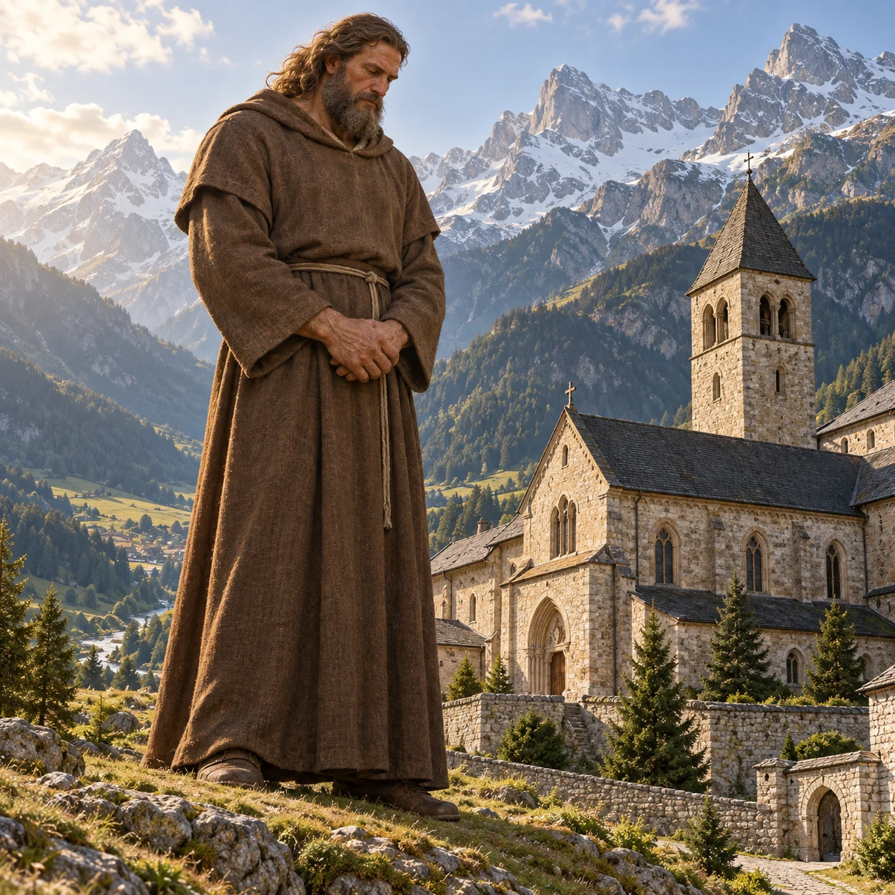
Remorseful human-looking giant Haymon as lay brother beside Wilten-inspired abbey
Aura: Compassionate reflective presence through lowered gaze, monumental stillness and warm Alpine morning
Audit ciri dan sumber
- One normal human-looking giant
- Peaceful lay-brother robe and clasped hands
- Abbey doorway and trees provide documented giant scale
- No composite dragon or second-giant scene
Inspected native: one human-looking giant in modest plain robe, two clasped ordinary hands and two feet, reflective lowered gaze. Abbey doorway and small trees establish giant proportions; natural warm light, no aura envelope or hybrid anatomy.
Review sumberUse case: stylized-concept. ONE square premium painterly naturalistic Tyrolean mythology illustration of HAYMON, selecting his documented remorseful giant who becomes a lay brother after founding Wilten monastery. A single immense HUMAN-LOOKING male giant stands with a solemn peaceful expression beside a modest medieval stone abbey in an Alpine valley. Normal human anatomy, one head, two arms and two legs, no hybrid monster features. Plain long unadorned brown lay-brother robe and belt cover torso and legs, no armour; costume is editorial staging. His large bare human hands are clasped calmly near his waist, full body inside frame. Nearby ordinary abbey windows, doorway and small fir trees show giant proportions without absurd planet-size scale. Rugged Alpine mountains rise behind. Strong compassionate presence through downward reflective gaze, calm imposing stance, warm natural morning light and beautifully resolved stone, cloth and mountain textures. No dragon, trophies, swordfish horn, second giant, monks or other characters. No wings, antlers, horns, magical aura, neon body outline, glowing eyes, luminous coloured mist, energy ribbons, halo, gore, lettering, border, collage or watermark.
Himinhrjóðr

Living greatest bull selected by Thor from Hymir herd before fishing.
Aura: None; natural shore light.
Audit ciri dan sumber
- Correct this Himinhrjod illustration: REMOVE the distant oversized Hymir figure entirely from upper right, replacing his entire body with the continuous ordinary solid mountains and shore background. Keep living enormous brown bull, smaller cattle, red-bearded human Thor pointing beside the bull, fishing boat and natural shore. No floating or translucent figures anywhere. Source himinhrjod-c01 greatest bull and c03 Thor selects it before fishing. No injuries, aura, mist effects or text. Preserve correct physical anatomy and square composition.
Anatomically intact giant bull visibly selected by Thor from smaller herd beside fishing boat; removed translucent background giant. No injury or literal sky-piercing horn.
Review sumberCorrect this Himinhrjod illustration: REMOVE the distant oversized Hymir figure entirely from upper right, replacing his entire body with the continuous ordinary solid mountains and shore background. Keep living enormous brown bull, smaller cattle, red-bearded human Thor pointing beside the bull, fishing boat and natural shore. No floating or translucent figures anywhere. Source himinhrjod-c01 greatest bull and c03 Thor selects it before fishing. No injuries, aura, mist effects or text. Preserve correct physical anatomy and square composition.
Horned Serpent (many cultures)
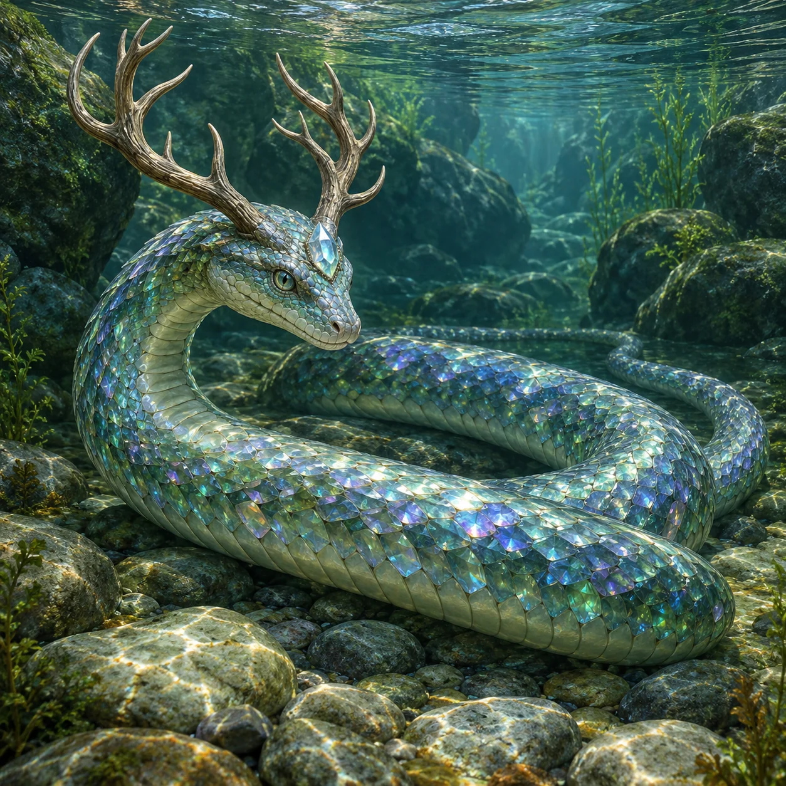
Muscogee underwater serpent with stag-like antlers, iridescent crystalline scales and a single forehead crystal.
Aura: Quiet benevolent mystery through watchful gaze, reflective crystals and natural underwater light.
Audit ciri dan sumber
- One limbless snake with stag-like antlers
- Crystalline iridescent scales and exactly one forehead crystal
- Calm benevolent underwater appearance; no mixed-tradition lightning
Viewed native PNG: one limbless snake body and one head with branching stag-like antlers and exactly one large forehead crystal. Crystalline scales reflect daylight, with no emitted aura, neon, lightning or magical mist. Peaceful river pool pose with no wings/legs/fins.
Review sumberSquare premium naturalistic painterly folklore encyclopedia illustration: Horned Serpent, specifically the documented MUSCOGEE underwater variant, not a blend of different cultures. ONE limbless snake body with ONE snake head bearing stag-like branching antlers and exactly ONE large crystal embedded in its forehead. Entire body covered in iridescent crystalline scales, subtle prism reflections of natural underwater light, NOT emitted glow. No dragon wings, legs, fins, mane or extra horns; antlers are the only added animal trait. A peaceful watchful water serpent loosely coiled in a clear shaded river pool with smooth pebbles and aquatic plants, its antlers and single forehead gem clearly readable and full tail inside frame. Gentle mysterious presence consistent with the account that it is not bad and does not harm people. Refined tactile crystal material, natural cool green-blue filtered daylight, premium painterly realism. No lightning or storm magic, generic glowing aura, neon outline, luminous mist, energy ribbons, people, jewelry, text, logo or watermark. Crystal colors, river setting and camera position are editorial choices.
İsa-Musa quşu

Isa-Musa Qusu, two brothers turned into birds after losing cattle: two owls fly anxiously low over an empty grazing field, while their two abandoned pairs of rustic sandals and cloaks sit together at the sleeping place under a tree; lost cattle distant beyond hill. Bird brothers face one another as if asking for lost herd, transformation aftermath and endless search. Birds natural, no human-bird hybrid or aura. Props editorial narrative staging.
Aura: Presence through source-supported iconography, narrative action, posture, scale and natural scene light; no generic magical glow.
Audit ciri dan sumber
- Documented role/action
- Natural anatomy and scale
Native individually viewed: Two natural birds search empty field above abandoned paired clothes/sandals while lost cattle distant; transformation aftermath and kinship staged without hybrid inventions.
Review sumberUse case: illustration-story. Asset: mythological creature education catalogue. Create one painterly realistic portrait 2:3, coherent rich brushwork and dramatic readable storytelling. No text or watermark. Isa-Musa Qusu, two brothers turned into birds after losing cattle: two owls fly anxiously low over an empty grazing field, while their two abandoned pairs of rustic sandals and cloaks sit together at the sleeping place under a tree; lost cattle distant beyond hill. Bird brothers face one another as if asking for lost herd, transformation aftermath and endless search. Birds natural, no human-bird hybrid or aura. Props editorial narrative staging. No arbitrary glowing effects, colored mist, glyphs or ribbons. Use natural animal scale relative to people unless this specific brief explicitly documents a gigantic form.
Grimalkin

Cat-shaped faery and intelligent witch familiar in Highland witchcraft encounter
Aura: Presence through source-supported iconography, narrative action, posture, scale and natural scene light; no generic magical glow.
Audit ciri dan sumber
- Grey feline natural anatomy
- Clear purposeful interaction with human witch
- No invented magical effects or animal anatomy
Viewed native: grey cat raises paw to elderly cloaked witch who responds attentively; reciprocal encounter dominates narrative. Normal feline anatomy, no glow. Painterly dusk and lantern provide natural lighting.
Review sumberSquare premium painterly Scottish folklore illustration of GRIMALKIN as the documented witch's FAMILIAR, a cat-shaped faery being of the Highlands, also invoked by the First Witch in Macbeth. One grey feline in foreground on an old stone in a windswept Highland hollow at twilight, normal cat anatomy exactly four legs one tail, but with a penetrating calculating gaze fixed on one elderly human witch who bends near it in a visibly reciprocal intimate conversation: she gestures for its counsel, cat raises one front paw purposefully in reply. The witch is a secondary character, modestly clothed in opaque rough cloak, no stereotypical pointed hat, sits behind cat. Cat dominates image and reads as an intelligent familiar in a witchcraft encounter rather than wildlife portrait; deserted rugged heath, clouds and distant mountain lake as context. Ritual meeting implied through interaction only: NO invented magical spells, potion, runes, spirits, glowing eyes, halos, neon aura, colored fog, smoke ribbons, horns,wings,human cat face,text,watermark,border. Natural twilight and a small realistic flame in a lantern provide dramatic chiaroscuro, rich detailed oil painting. Maintain both cat and witch entirely in frame. Grey fur and scene choices editorial, anatomy and familiar relationship source-backed.
Lehen
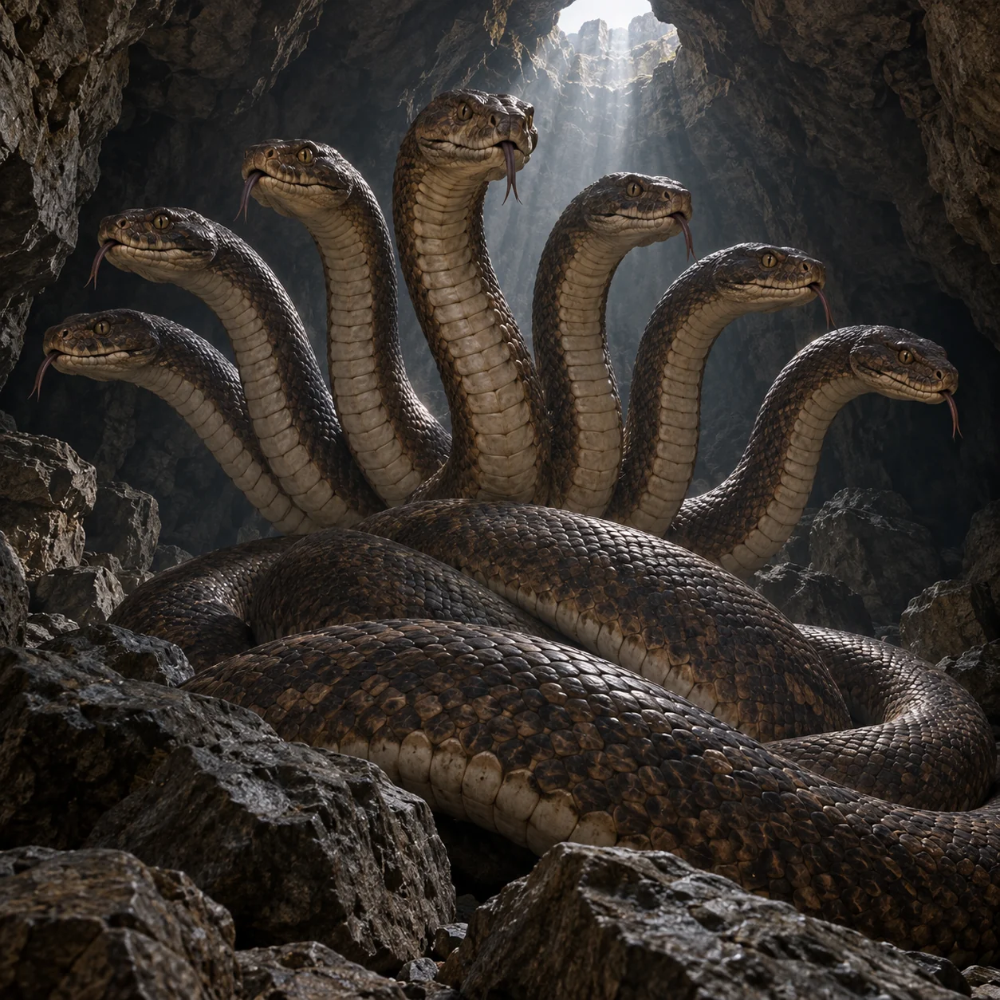
Xaho's Azti-begia (1834) literary Lehen-Suge, a gigantic seven-headed serpent tied to earth's depths.
Aura: Terrifying presence through seven vigilant heads, massive coils, low viewpoint and natural shaft of cave daylight.
Audit ciri dan sumber
- Exactly seven snake heads on one coiled serpent
- Subterranean giant serpent without wings/legs/horns
- No simple sea-serpent or Herensuge variant mixture
Viewed native PNG: exactly seven complete snake heads and necks rise above huge coiled snake body among dark rocks. Natural tongues and scales, no limbs/wings/horns, no fire or luminous magical envelope. Shaft of daylight enters from cave opening. The seven-headed literary variant is clearly distinct from a generic sea snake.
Review sumberSquare premium naturalistic painterly folklore illustration of Lehen-Suge as described in Agosti Xaho's Azti-begia (1834): a gigantic monstrous serpent with EXACTLY SEVEN heads tied to the earth's depths. Select this literary subterranean variant, not a simple sea-serpent or Herensuge winged-dragon mixture. ONE immense snake body coils among plain dark underground rock, with seven separate long snake necks rising into a clearly spaced fan, exactly seven complete snake heads easy to count and all inside frame. No legs, wings, horns or extra heads. Earthy charcoal-brown reptile scales with realistic ventral plates, large body curling around ordinary massive boulders to convey documented giant scale. An opening high above admits a narrow natural daylight shaft, shadowed geological textures, terrifying vigilant serpent presence through poised heads and low viewpoint. No literal cosmic symbols, magical glow, neon envelope, energy ribbons, colored luminous mist, fire, gore, text, logos or watermark. Geological cave and scale colors are editorial staging, not extra mythological assertions.
Lurikeen
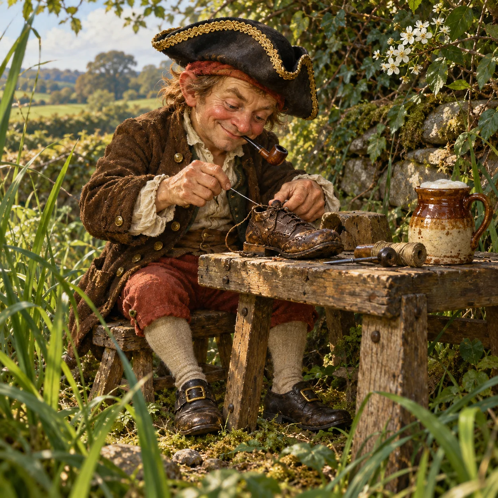
Kildare tale shoemaking Lurikeen with gold-laced tricorne, knee-breeches, pipe and beer jug
Aura: Mischievous fairy presence through concentrated expression, small scale and natural hedgerow light
Audit ciri dan sumber
- One small human-looking sprite making old brogue
- Three-cornered gold-laced hat and knee-breeches
- Pipe in mouth and jug of beer beside work
- No invented monster anatomy or glow
Inspected native: single small human-looking shoemaker with two hands working old brogue, clear gold-laced tricorne, knee-breeches, pipe and beer jug. Grass indicates small sprite-scale; no horn/wing anatomy or magical envelope.
Review sumberUse case: stylized-concept. ONE square premium painterly naturalistic Irish folklore illustration of LURIKEEN, choosing the documented Kildare shoemaking tale. ONE small human-looking male sprite sits at a little wooden workbench outdoors, diligently repairing a tiny old leather BROGUE. He wears a THREE-CORNERED HAT edged in GOLD LACE and KNEE-BREECHES, with a PIPE held at the corner of his mouth; a small JUG OF BEER stands beside him on the workbench. Show his ordinary human hands pulling waxed thread through the old shoe, one head and two arms, two legs beneath breeches. Sprite-scale posture implied by oversized grass blades around the small bench, no giant size. His mischievous busy expression and skilled concentrated hands convey uncanny fairy presence through natural dappled afternoon light, close detailed framing and quiet Irish hedgerow atmosphere. Muted brown coat, cream shirt and reddish cap are editorial costume colours; hat shape, gold lace and knee-breeches are required. Keep full sprite, both hands, hat and shoe visible. No pointy ears, horns, wings, animal face, glowing body, neon aura, magic ribbons, luminous coloured mist, floating gold, rainbow, pot of gold, other people, lettering, border, collage or watermark.
Manananggal
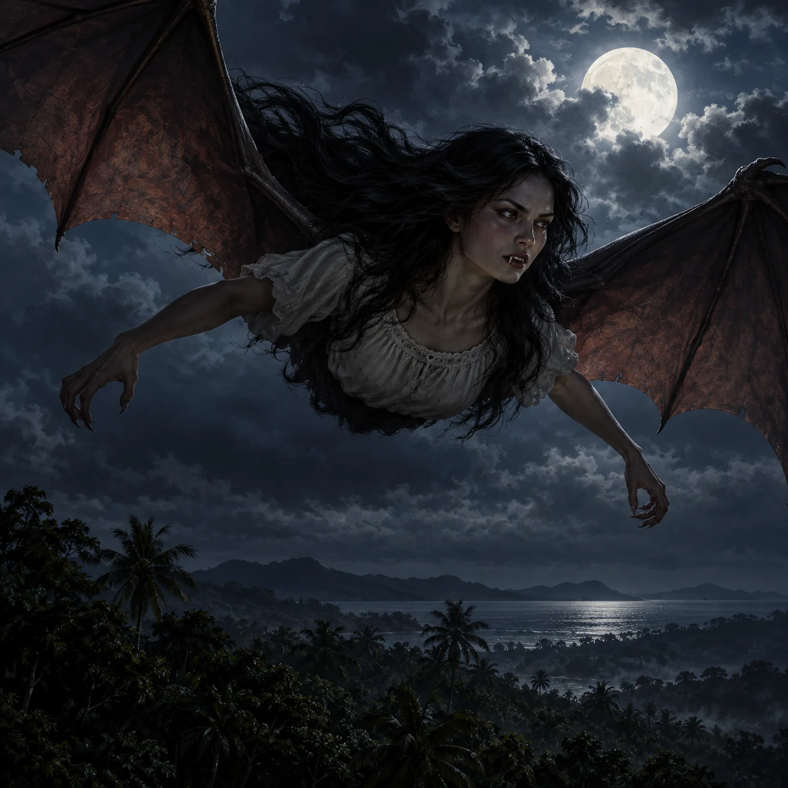
Common female flying separated upper torso with large batlike wings and fangs, rendered non-graphically without prey.
Aura: Frightening focused gaze, spread wings and moonlit silhouette convey nocturnal menace.
Audit ciri dan sumber
- Adult female upper torso only, no legs or lower body attached
- Two large batlike wings, two arms, subtle fangs
- Opaque blouse and lower torso in deep shadow, no graphic organs or injury detail
Actual native PNG inspected: adult female flying upper torso with two large bat membrane wings, two arms, visible fangs and no attached legs. Opaque blouse and shadow conceal separation detail. Natural moonlit night, no victims, gore or generic aura; wings intentionally near frame edges.
Review sumberUse case: stylized-concept. Asset: square premium naturalistic painterly mythology encyclopedia illustration of MANANANGGAL. Select documented common female nocturnal form: one adult humanlike woman’s upper torso flying independently on two large BAT-LIKE membrane wings, with two human arms and subtle vampirelike fangs visible in a tense expression. The flying upper torso has NO legs and NO attached lower body. Her torso is fully covered by an opaque simple blouse, and its lower edge is concealed in deep ordinary shadow; non-graphic editorial treatment, no blood, wounds, organs or exposed tissue. Wide full silhouette above distant Visayan treetops, wings spread with coherent attachment behind shoulders, predatory watchful face, natural moonlight and ordinary dark night clouds. Beautiful sophisticated painterly texture and frightening atmosphere through expression, wings, framing and natural lighting. No victims, children, attack, floating lower-body pieces, horns, extra wings or limbs, glowing eyes, generic aura, neon outlines, energy ribbons, coloured luminous mist, text, border or watermark. One square image.
Michael (archangel)
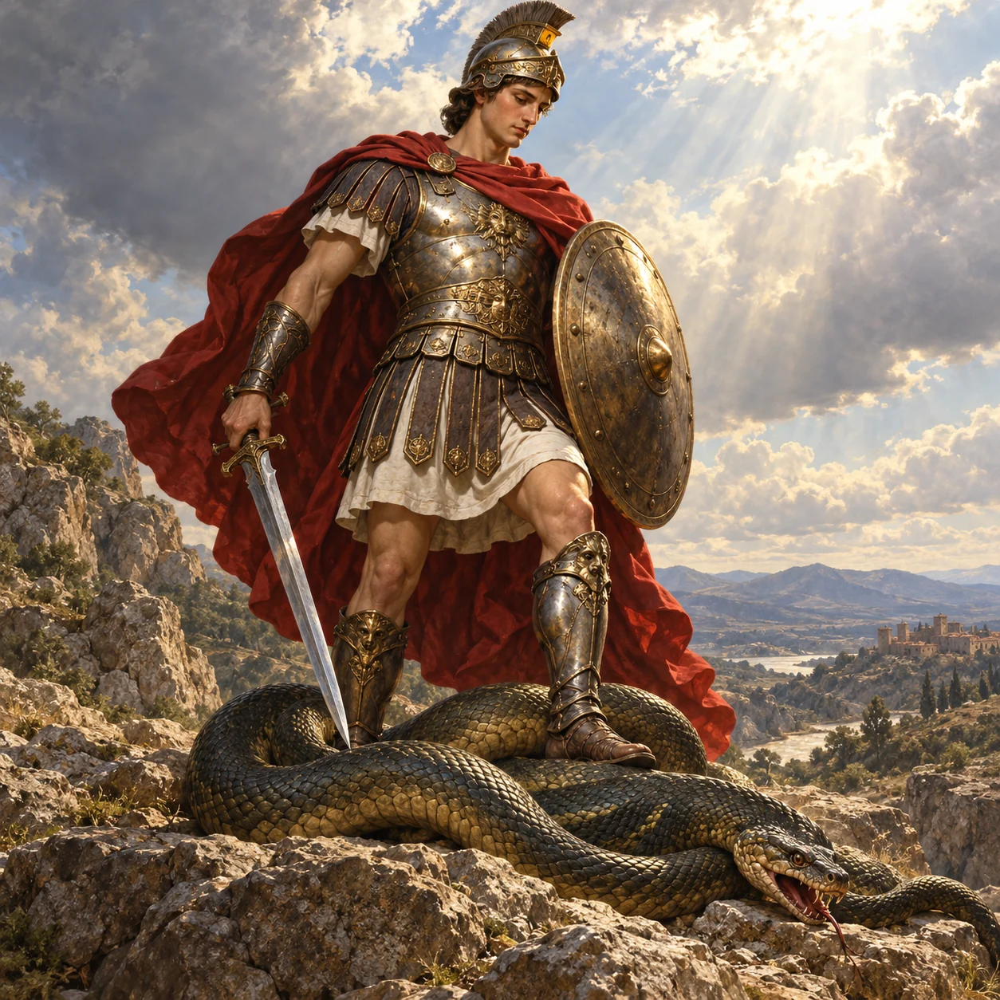
Christian art's fully armed angelic warrior Michael with helmet, sword and shield above the serpent-dragon; wingless humanlike rendering limited to source-listed attributes.
Aura: Dignified protective authority from resolute expression, victorious stance and dramatic natural sunlight.
Audit ciri dan sumber
- Humanlike helmeted warrior with sword and shield
- Standing over one serpent-dragon without gore
- No added wings or emitted magical aura; no blended religious roles
Viewed native PNG: one humanlike helmeted armored warrior holds one sword and one shield, standing over one coiled one-headed serpent. No wings, horns, halo or emitted magical envelope. Sunlight through clouds is natural. Armor ornament, cape and landscape are editorial material styling; no inscription or soul-weighing object mixed in.
Review sumberSquare premium naturalistic painterly Christian historical-art illustration of Michael the archangel in the documented angelic WARRIOR depiction. A noble fully HUMAN-LOOKING warrior with helmet, sword and shield, standing in calm victory on rocky ground above a subdued coiled serpent-dragon. ONE man, ONE serpent opponent. Ordinary human face, arms and legs, beautiful resolute compassionate expression; no wings are specified in the source claim so depict wingless humanlike appearance, no horns or extra anatomy. Steel/bronze toned helmet and practical antique-inspired armor, one plain shield without inscription, one sword held lowered, no second lance, no scales-of-souls object mixed into this variant. Low three-quarter full body framing, natural dramatic sunlight breaks through an ordinary cloud sky, sculptural dignified pose. Snake beneath is non-gory with one head and one limbless coiled body; do not add a fantasy horned dragon. Divine character presence comes from bearing and natural lighting, not emitted effects. No halo, neon, magical aura, energy ribbons, luminous colored mist, gore, labels, text, logos or watermark. Clothing/armor materials and rocky scenery are editorial rendering of the source-attested helmet/sword/shield warrior depiction; not a blend of Jewish or Islamic roles.
Okesa neko
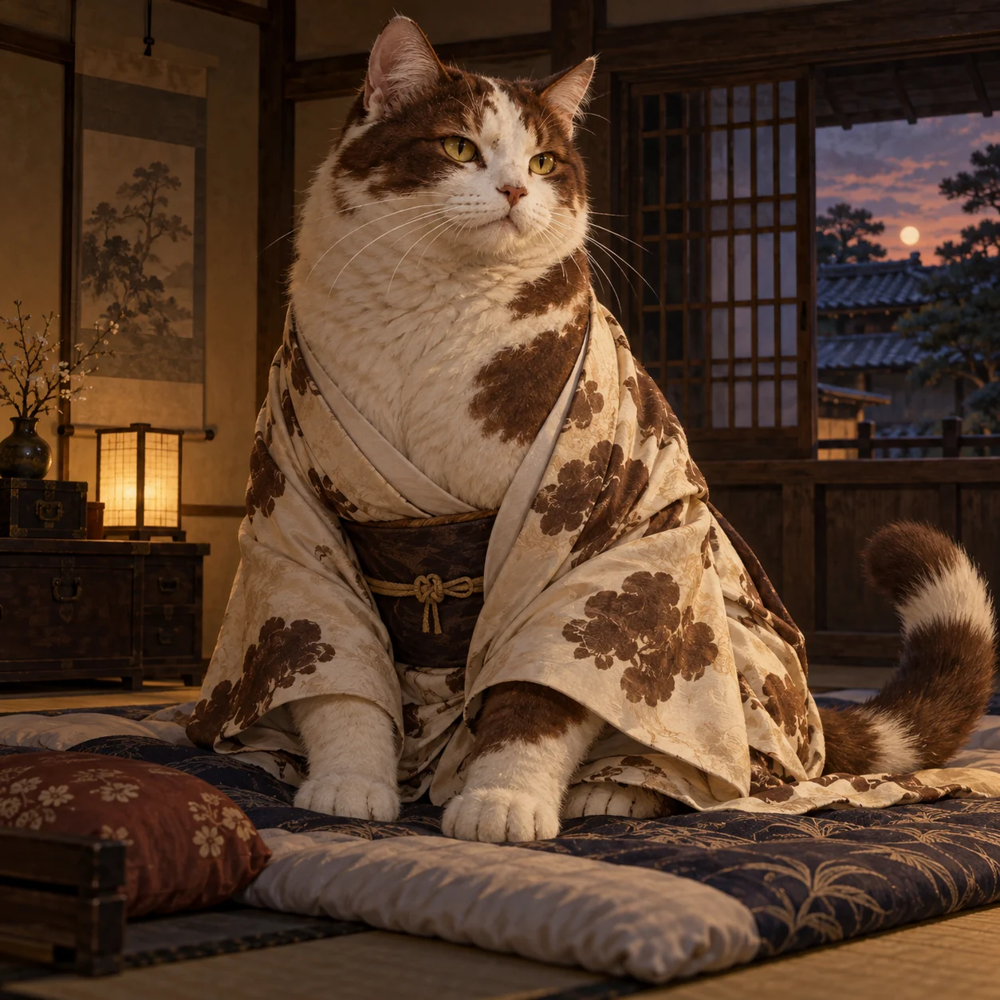
Revealed giant cat Okesa wearing kimono on the sleeping mat
Aura: Alert guarded kind-hearted magical identity through calm gaze and naturally lit quiet room
Audit ciri dan sumber
- One giant natural cat with feline paws and one tail
- Kimono colours echo fur colours
- Seated on bedding in modest Japanese room
- No human-cat mixed face or two-tailed species
Inspected native: large ordinary cat head/body, two front paws outside kimono, one tail; cream/brown fur echoed in cream/brown garment. Bedding/doorway give large-cat scale, quiet warm light without luminous magical effects.
Review sumberUse case: stylized-concept. ONE square premium painterly naturalistic Japanese folklore illustration of OKESA NEKO, selecting the documented revelation as a GIANT CAT wearing Okesa's KIMONO on a bed. One huge natural cat sits upright on a low traditional sleeping mat in a subdued Edo-period wooden room, wearing a modest silk kimono draped around its feline torso. CAT HEAD, natural triangular ears, whiskers, cat eyes and feline paws, one natural cat tail; no human head or human hands. Front paws rest visibly on mat outside kimono sleeve folds; back paws implied naturally by seated posture. The cat is much larger than a domestic cat, indicated by ordinary room doorway and small bedding features, not mountain-scale. Kimono pattern and colour echo the CAT'S FUR: choose muted cream with dark brown patches on both coat and kimono as editorial palette. Calm but alert guarded expression evokes a hidden magical identity revealed, without making this kind-hearted bakeneko vicious. Natural evening light through wooden window and textured shadow give uncanny presence. Full seated cat, kimono and tail inside frame. No geisha human added, second cat, two tails, wings, horns, human-cat fusion face, fish-head gore, glowing eyes, halo, magic aura envelope, neon outline, luminous coloured mist, energy ribbon, text, border, collage or watermark.
Zuzidun Txakurra
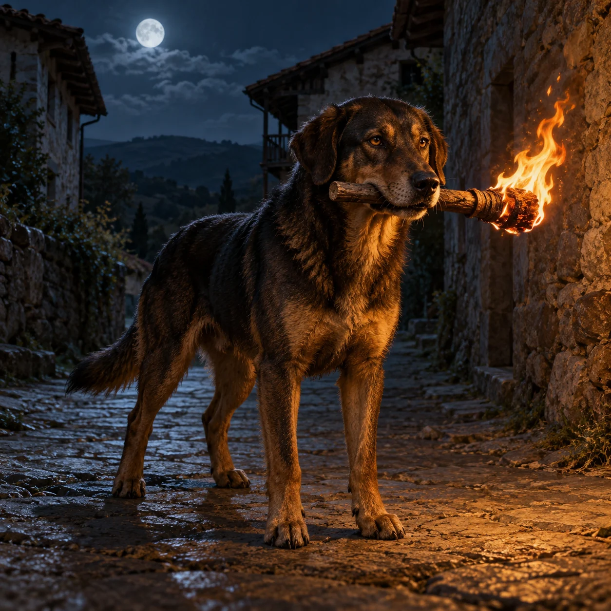
Dog-with-burning-torch-in-muzzle representation, selected apart from huge black fire-eyes Barakaldo variant.
Aura: Watchful solitary presence, night shadows and documented small torch flame.
Audit ciri dan sumber
- One natural dog carrying burning torch in muzzle
- Flame limited to torch
- No generic glowing body or extra anatomy
Actual native inspected: one natural four-legged dog holding crosswise wooden torch, restrained physical flame at its end and torch-reflected warm face light. No burning body, fire eyes or generic aura.
Review sumberSquare premium naturalistic painterly mythology illustration of ZUZIDUN TXAKURRA. Select one documented Basque spirit representation: a DOG WITH A BURNING TORCH IN ITS MUZZLE. One coherent natural dog with four legs and one tail, holding a short wooden torch crosswise in its mouth; only the wrapped end of the torch burns with a modest physical orange flame. Dog fur and mouth do NOT burn, eyes do NOT emit light. This is the torch-bearing variant, not combined with the huge black fire-eyes-and-jaws variant. Ordinary dog proportions, brown-black coat chosen editorially, solitary alert stance on an empty Basque house lane at night. Natural moonlit shadows and realistic restrained warm torch light touching face/fur and ground, uneasy intelligent gaze, superb painterly texture. No people, ghosts, horns, wings, giant inflation, generic glowing aura, neon outline, energy ribbons, coloured luminous mist, text, logos or watermark. Single square image.
Roggenwolf

Roggenwolf, German grain wind-spirit and children's field bogey: ominous wolf partly concealed amid violently rippling rye, its dark silhouette aligned with a sweeping moving wave in the grain that advances toward a small child at the field boundary. Child recoils, stalks lean dramatically from strong natural wind. Keep natural wolf anatomy, source wind role expressed through field movement and threatening bogey scene, no invented plant body or magic ribbons.
Aura: Presence through source-supported iconography, narrative action, posture, scale and natural scene light; no generic magical glow.
Audit ciri dan sumber
- Specific documented role/form
- Coherent anatomy and source-supported scale
Native individually viewed: Natural wolf follows violently wind-rippled rye toward recoiling child, source windspirit and grain-bogey role explicit; no plant-body or glow.
Review sumberUse case: illustration-story. Asset: mythological creature education catalogue. Create one painterly realistic portrait 2:3, coherent rich brushwork and dramatic readable storytelling. No text or watermark. Roggenwolf, German grain wind-spirit and children's field bogey: ominous wolf partly concealed amid violently rippling rye, its dark silhouette aligned with a sweeping moving wave in the grain that advances toward a small child at the field boundary. Child recoils, stalks lean dramatically from strong natural wind. Keep natural wolf anatomy, source wind role expressed through field movement and threatening bogey scene, no invented plant body or magic ribbons. No arbitrary glowing effects, colored mist, glyphs or ribbons. Use natural animal scale relative to people unless this specific brief explicitly documents a gigantic form.
Svetovit
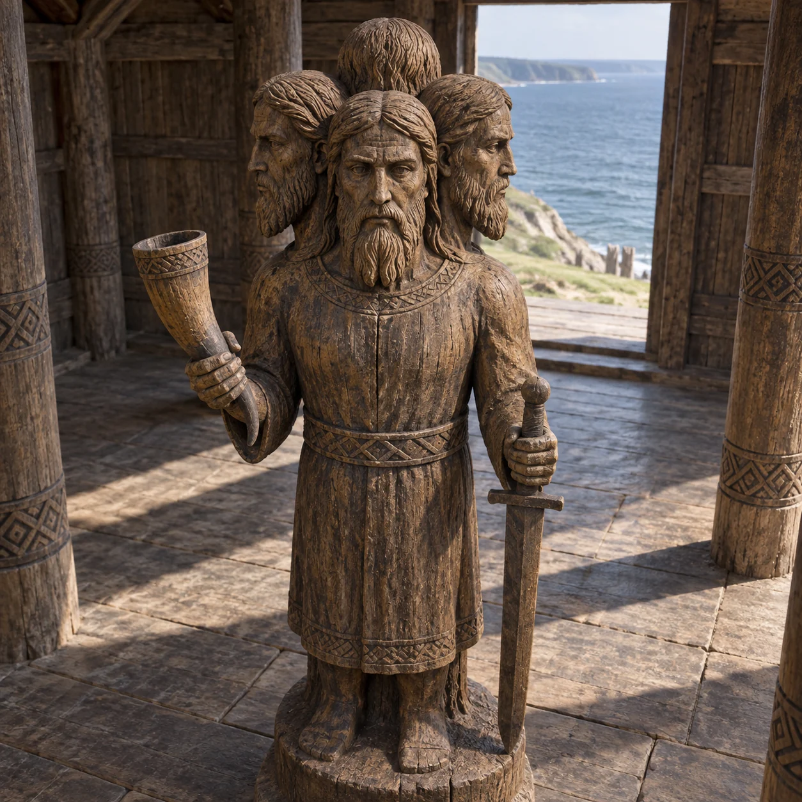
Cape Arkona wooden four-headed cult-statue form, horn and sword
Aura: Solemn sacred authority through woodgrain, still stance and natural coastal daylight
Audit ciri dan sumber
- Exactly four distinct human heads facing different directions, rear head back visible
- One wooden human torso with two arms/hands and two legs
- Drinking horn and sword in hands
- Timber sanctuary, no invented glowing powers
Inspected native: front, left profile, right profile and rear back-of-head clearly distinct (four). One carved human body, two hands holding drinking horn/sword and two feet. Weathered wooden statue in timber sanctuary, ordinary daylight and no emitted aura.
Review sumberUse case: stylized-concept. ONE square premium painterly naturalistic Slavic mythology illustration of SVETOVIT, selecting the documented wooden cult-statue variant at Cape Arkona. Render an aged carved WOODEN human-shaped deity statue with exactly FOUR separate HUMAN HEADS rising together from one upper torso, each facing a different direction: forward head faces viewer; left head looks left; right head looks right; fourth rear head faces away so the BACK of its head is visibly distinct above/behind the front head. High three-quarter camera angle makes all FOUR skull shapes countable. One human-shaped torso, two wooden arms/hands and two legs. It holds a large curved DRINKING HORN in one hand and a simple straight medieval SWORD in the other, no helmet or crowns. Inside a plain square pillared timber sanctuary at coastal Arkona, natural light from open doorway and muted Baltic sea beyond. Beautiful weathered woodgrain, dignified solemn carved expressions, imposing but ordinary carved-idol scale. Sacred commanding presence through frontal stillness, wood texture, natural shadow and coastal daylight. No live white horse, other deities, priest, antlers, eagle body, coloured glowing faces, radiant halo, neon outline, magic ribbons, luminous coloured fog, text, border, collage or watermark. This is contemporary editorial visualization of source-described idol, not documentary reconstruction.
Uchchaihshravas
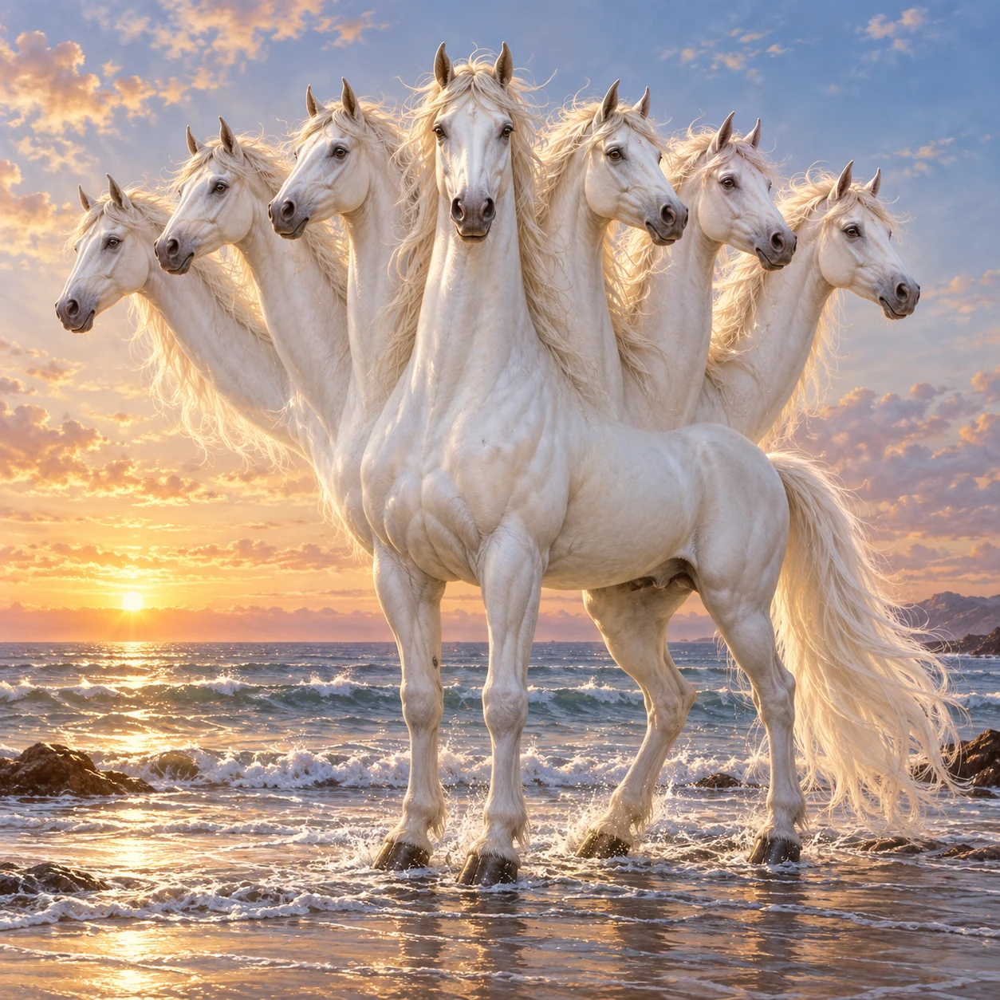
Snow-white seven-headed divine horse, represented without wings since accepted flying-horse claim does not specify wings.
Aura: Youthful vigour, dignified seven-head formation, ocean framing and natural dawn lighting convey divine presence.
Audit ciri dan sumber
- Exactly seven distinct horse heads with seven necks
- One snowy-white horse body, four legs and white tail
- No added wings or giant size
Actual native PNG inspected: exactly seven separate uncropped natural horse heads/necks in shallow fan, one white horse body with four legs and white tail. Natural dawn coast light, no wings or added aura. Counted all seven heads explicitly.
Review sumberUse case: stylized-concept. Asset: square premium painterly naturalistic mythology encyclopedia illustration of UCHCHAIHSHRAVAS, a snowy-white divine SEVEN-HEADED HORSE. One coherent white horse torso with exactly FOUR horse legs and one white tail. Exactly SEVEN complete distinct HORSE HEADS, each on its own separate visible horse neck, arranged in a shallow fan across the upper third of the square, heads separated clearly so a viewer can count seven from left to right: 1,2,3,4,5,6,7. No text or printed numbers. Every head has natural equine muzzle, eyes and ears, youthful noble alert expression. Full horse body visible standing at quiet sea shallows, ordinary horse scale, luminous only from natural dawn sunlight reflected on white coat and ocean. Mythic divine presence through vigorous dignified pose and seven-head silhouette. No wings: flight is documented but wings are not specified by selected source claims. No riders, tack, crowns, snakes, extra legs, eighth head, generic glowing aura, neon outlines, energy ribbons, luminous coloured mist, text, border or watermark. One square image with all seven heads uncropped and visibly separated.
Víðópnir
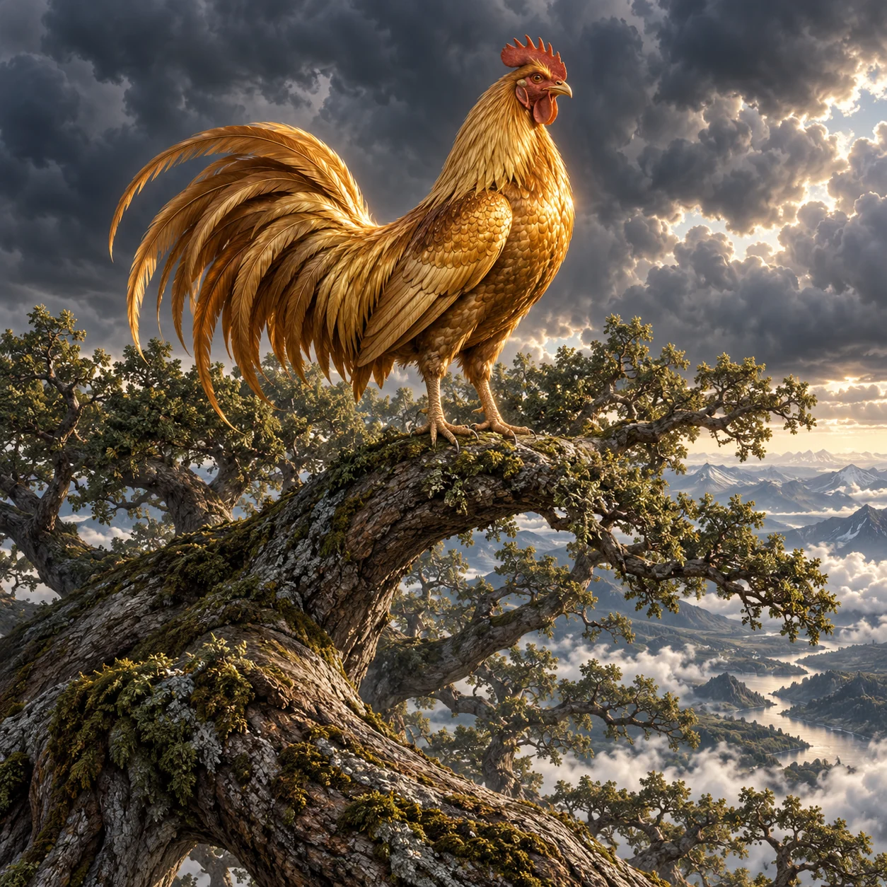
Golden rooster guardian of the world-tree crown, excluding disputed falcon/Veðrfölnir identification.
Aura: Vigilant noble guardian presence through upright posture, golden feather highlights and natural storm-lit tree crown.
Audit ciri dan sumber
- One golden natural rooster with tail feathers
- Perched vigilant on crown of world tree
- Restrained plumage gleam, no neon aura or mixed falcon anatomy
Viewed PNG: one golden rooster with natural comb, beak, two feet, folded feather wings and long arched tail perches high on massive tree branch. Gold highlights stay within feathers, no enveloping glow or energy ribbons. No falcon/eagle companion or invented anatomy.
Review sumberSquare premium naturalistic painterly Norse folklore illustration of Víðópnir/Widofnir, choosing the documented GOLDEN ROOSTER variant, excluding the disputed falcon/Veðrfölnir identification. ONE rooster with natural rooster head, comb, beak, two feet, two feathered wings folded to body and long curved rooster tail feathers, perched alert on the crown branch of the immense world-tree Mímameiðr/Yggdrasil. Rich golden plumage, luminous source-documented gleam localized softly in feather highlights like approaching thunderstorm light, NOT an enveloping glow or electric effect. Natural storm clouds behind the ancient tree crown, airy height, refined feather detail, noble vigilant guardian presence through upright stance and watchful head. No eagle companion, hawk anatomy, extra limbs, antlers, armour, lightning bolts attached to bird, cosmic diagram or giant rooster scale. Full bird and tail visible in square composition, muted bark and gray-blue sky offset warm gold feathers. No neon outlines, energy ribbons, luminous colored mist, labels, text, logos or watermark. Tree/sky layout and restrained gleam are editorial realization of the selected c02/c03 appearance.
吉量
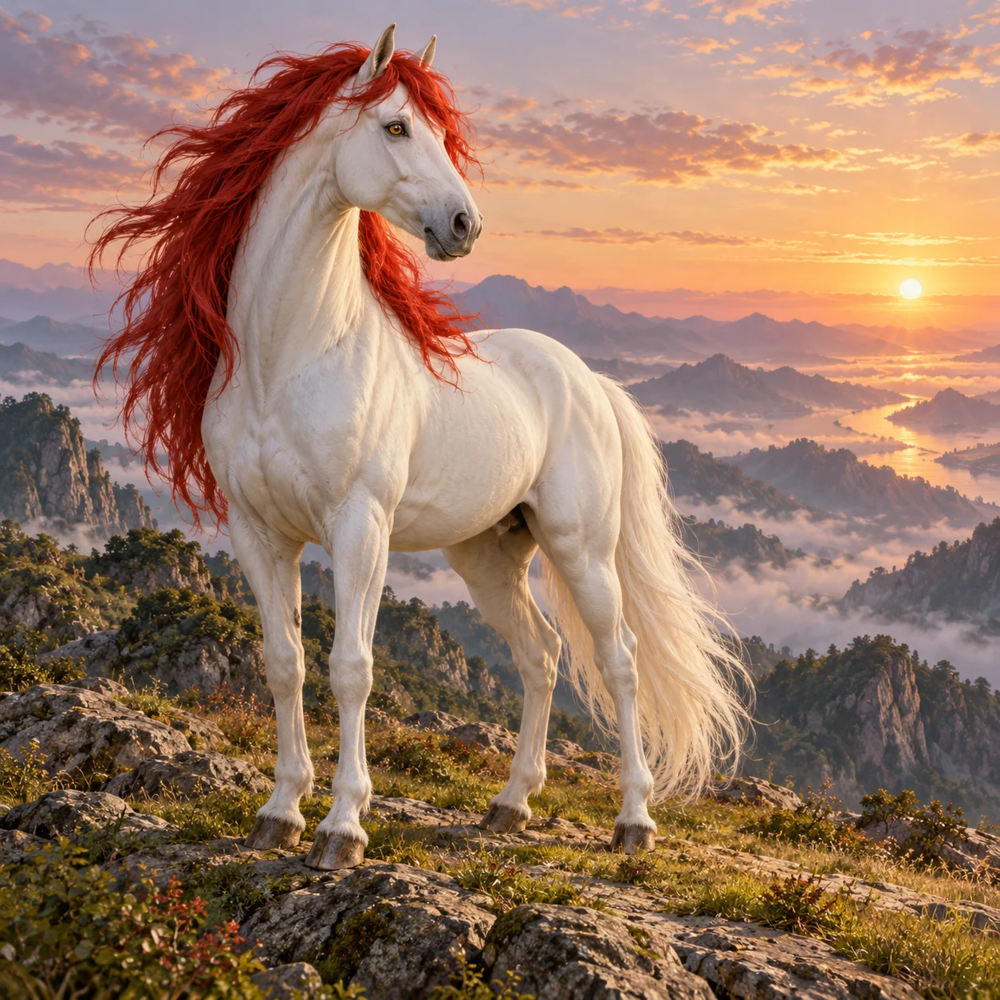
Shan Hai Jing Jiliang white horse with red mane and golden irises
Aura: Dignified grace and warm upland dawn light
Audit ciri dan sumber
- White natural horse body
- Red mane and golden nonluminous eyes
- Four ordinary horse legs/hooves, no wings
Inspected native: white horse with vivid red hair mane, visible golden iris, four coherent horse legs/hooves and white tail. No fire, horns or glowing aura.
Review sumberUse case: stylized-concept. ONE square premium painterly naturalistic Chinese mythology illustration of JILIANG from Shan Hai Jing. One fabulous HORSE with a WHITE BODY, vivid RED MANE and GOLDEN EYES; entirely ordinary coherent horse anatomy, four horse legs with hooves, one head and one tail. Golden eyes are natural gold iris colour, NOT emitted light. Red mane is natural red hair, not fire. Full horse in square three-quarter side view standing quietly on a rocky grassy upland beneath natural dawn. Graceful dignified pose and unusually beautiful white/red/gold appearance convey supernatural longevity presence. White tail is editorial choice since only mane is documented red. No rider, armour, saddle, antlers, horns, wings, flaming mane, halo, magic glow, neon outline, energy ribbons, luminous coloured mist, extra limbs, text, border, collage or watermark.
诸犍
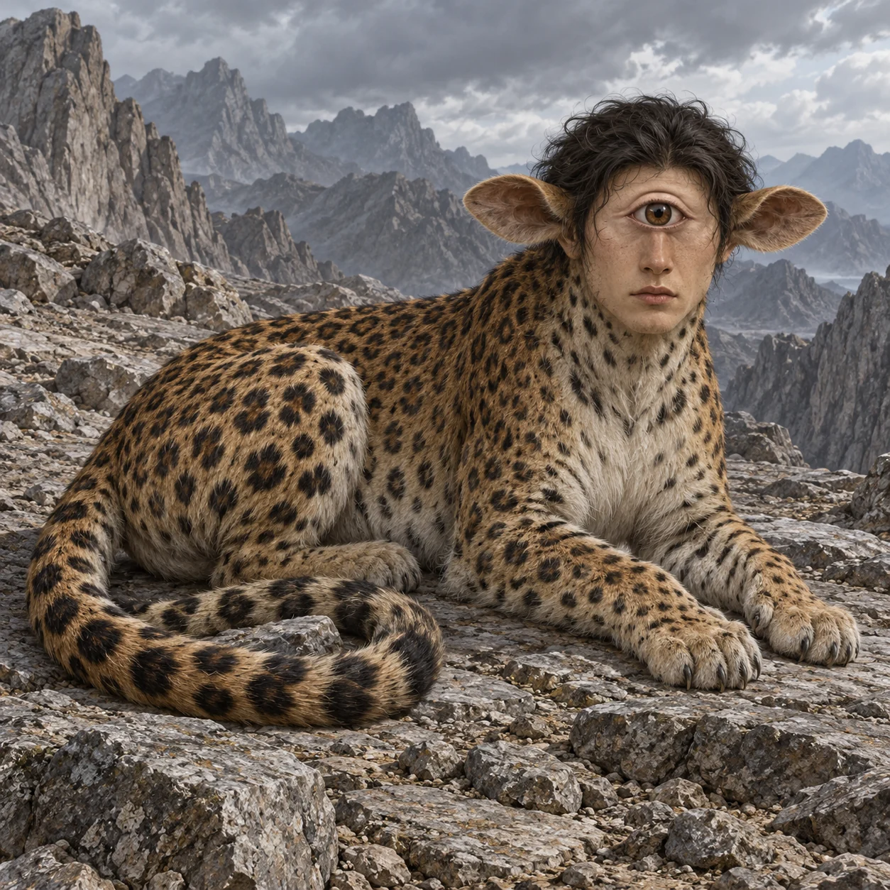
Zhujian at rest: leopardlike body, human head with cow ears and exactly one eye, long tail coiled.
Aura: Uncanny singular stare, low framing and austere natural mountain light.
Audit ciri dan sumber
- Leopardlike four-legged body
- Human head, cow ears, exactly one eye
- Long coiled tail, barren mountain
Actual native inspected: leopardlike reclining body, one human head, cow ears and exactly one central eye, long tail coiled beside body. Barren mountain with natural light, no extra anatomy or glow.
Review sumberSquare premium painterly naturalistic mythology encyclopedia illustration of ZHUJIAN 诸犍. Exactly one beast with a LEOPARDLIKE QUADRUPED BODY on FOUR natural feline legs, a HUMAN HEAD with two broad COW EARS and EXACTLY ONE EYE. The single eye sits centrally above a human nose on a smooth human face; absolutely no second eye, side eye sockets or eye patches. Not a leopard head. A very long feline tail is COILED beside the beast because it is at rest. Full body and unobscured human face visible, in barren stony Mount Danzhang landscape without grass/trees. Calm alert crouch and uncanny singular gaze, dramatic ordinary overcast mountain daylight, finely rendered spotted fur and human skin, sophisticated painterly naturalism. Central eye position and coat colours are editorial rendering, no extra lore. No human torso, horns, wings, extra limbs, glow, neon aura, energy ribbons, luminous coloured mist, text, logos, borders or watermark. One square image.
Yale
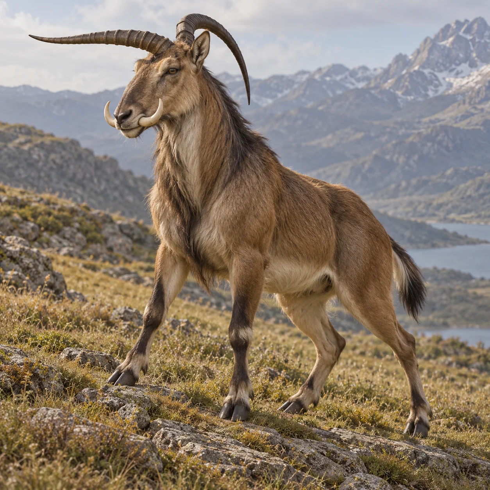
Antelope/goat-like Yale with boar tusks and two movable horns, one forward and one backward; excludes Pliny's elephant-tail form.
Aura: Noble strange defensive presence through poised stance and unusual opposed horns in natural morning light.
Audit ciri dan sumber
- Goat-antelope quadruped with cloven hooves and two boar tusks
- Exactly two long horns oriented forward/backward
- No elephant tail, hippo scale or heraldic regalia mixture
Viewed PNG: one tawny goat-antelope with four cloven hoofed legs, two boar tusks, exactly two large horns. One horn extends forward, the other curves backward over head/neck. Natural short goat tail, no wings or added horns, no glowing effects. Full body visible against ordinary rocky slope.
Review sumberSquare premium naturalistic painterly folklore art of YALE/centicore, selecting the antelope-or-goat-like bestiary variant with BOAR TUSKS and TWO large movable horns. ONE elegant powerful goat-antelope quadruped with four cloven hooves, two curved boar tusks emerging from the mouth and exactly TWO long horns: one rotated forward horizontally for defense and the other clearly rotated backward along the neck. Distinct opposed horn positions, no extra horns or antlers. Plain natural goat-antelope fur and tail; do not mix the separate Pliny hippo-sized elephant-tail/boar-jaw variant. Full animal in three-quarter side view on an ordinary grassy rocky slope, alert strong defensive stance, refined realistic fur and horn textures, muted tawny-brown palette, cold morning natural side light. A noble strange bestiary presence through posture and the unusual horn arrangement. No heraldic shield, crown, chains, armor, wings, fangs beyond the documented two boar tusks, giant scale, aura glow, neon outline, energy ribbons, luminous mist, text, logo or watermark. Setting and fur colors are editorial staging.
Akhlut

Akhlut in explicitly documented orca-wolf hybrid form: one powerful four-legged wolf-shaped creature has smooth black-and-white orca skin, clear tall orca dorsal fin on back, wolf head muzzle and ears, four robust canine legs and a coherent aquatic tapered tail. Emerges from icy Arctic surf leaving paw prints returning between ocean and land. Orca-and-wolf union unmistakable, physical hybrid not ordinary wolf, no glow. Exact arrangement editorial composite interpretation.
Aura: Presence through source-supported iconography, narrative action, posture, scale and natural scene light; no generic magical glow.
Audit ciri dan sumber
- Specific documented role/form
- Coherent anatomy and source-supported scale
Native individually viewed: Unmistakable orca-wolf composite with wolf head/legs, black-white body, physical dorsalfin and aquatic tail emerging Arctic surf; coherent hybrid anatomy.
Review sumberUse case: illustration-story. Asset: mythological creature education catalogue. Create one painterly realistic portrait 2:3, coherent rich brushwork and dramatic readable storytelling. No text or watermark. Akhlut in explicitly documented orca-wolf hybrid form: one powerful four-legged wolf-shaped creature has smooth black-and-white orca skin, clear tall orca dorsal fin on back, wolf head muzzle and ears, four robust canine legs and a coherent aquatic tapered tail. Emerges from icy Arctic surf leaving paw prints returning between ocean and land. Orca-and-wolf union unmistakable, physical hybrid not ordinary wolf, no glow. Exact arrangement editorial composite interpretation. No arbitrary glowing effects, colored mist, glyphs or ribbons. Use natural animal scale relative to people unless this specific brief explicitly documents a gigantic form.
Aswang

Female vampire Aswang with proboscis tongue
Aura: Presence through source-backed form and physical scene; no generic glow, ribbons or magical mist.
Audit ciri dan sumber
- Female vampire Aswang with proboscis tongue
- Coherent anatomy and documented mythic scene
Human female vampire with long tapering proboscis tongue in moonlit village; no feeding injuries.
Review sumberCreate one square premium painterly mythological catalogue illustration. A BEAUTIFUL ADULT HUMAN FEMALE VAMPIRE ASWANG at a Philippine village edge at NIGHT, human face and body in an opaque simple blouse and long skirt, with a clearly visible long fine PROBOSCIS-LIKE TONGUE extending from her mouth. Two coherent human arms/hands, no wings or splitbody (this is vampire variant, not manananggal). She stands alone between bamboo house and dark forest, stare unnerving, no victim or feeding/blood. Tongue anatomical and physical, no glow. Source woman form tongue rather than sharpteeth; no dogbody. Detailed naturalistic painting, documented mythical form/scene, coherent complete relevant anatomy. No text, watermark or border. No generic glow, luminous eyes/mist, floating ribbons, particles or unsupported magical powers.
Beithir
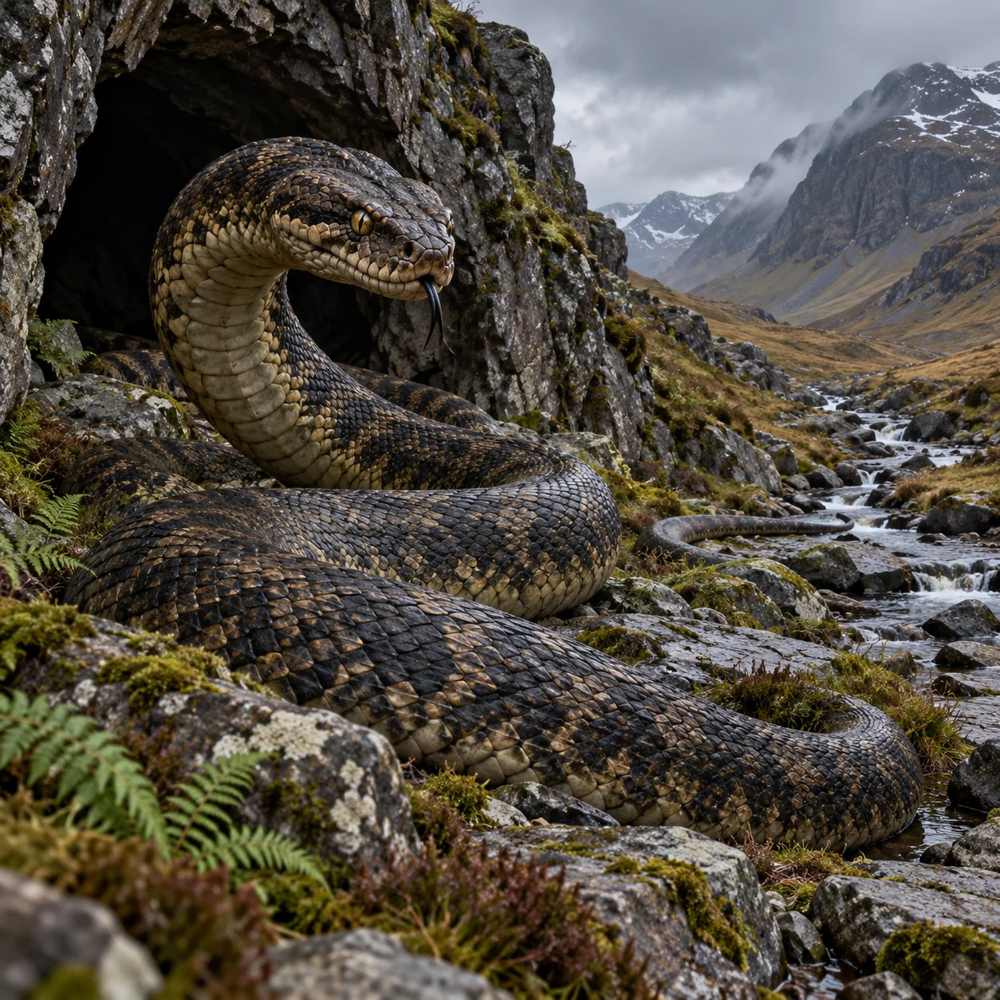
Large deadly wingless fireless Scottish serpent of mountain caves and corries.
Aura: Threatening poised head and massive coils in cold natural Highland light.
Audit ciri dan sumber
- One large snake-like body with single head
- No wings or fiery breath
- Mountain cave/corrie staging
Viewed native PNG: one enormous dark scaled limbless serpent coils by a mountain cave and stream. Single snake head, no horns, wings, fire or magic lightning. Rocks and ferns show large scale; natural cloudy mountain light supplies menace.
Review sumberSquare premium naturalistic painterly Scottish folklore illustration: Beithir, the huge deadly serpent of mountain caves and corries. ONE immense anatomically snake-like limbless serpent with a single head and long coiling tail, no wings and NO FIRE BREATH explicitly. Dark earthy reptile scales and alert threatening snake eyes, coiled outside a rocky Highland cave beside a narrow valley stream, small ordinary rocks and ferns reference the documented large serpent scale. Menacing poised head, low camera, cold natural overcast mountain light, wet stone and textured scales, full coherent body visible. Do not invent scorpion stinger anatomy from the statement venomous sting, no bear traits inferred from etymology, no horns, legs, magical lightning, aura glow, neon outlines, energy ribbons or luminous colored fog. No victims, gore, text, logo or watermark. Dark color and cave design are editorial staging.
Bleiddwn

Replace the wolf-cub portrait with the documented human form of Bleiddwn after Math makes him human. A fully clothed small human boy stands in the foreground of a medieval Welsh court, with one adult wolf and one adult she-wolf, his enchanted parents, beside him. Math, a human magician and ruler, holds his hand over the boy in a quiet transformation gesture. No luminous effects or hybrid half-wolf face; boy is now completely human and wolves retain normal anatomy. The relationship and Math's action convey the recorded myth, no violent background events.
Aura: None; ordinary environmental illumination.
Audit ciri dan sumber
- Replace the wolf-cub portrait with the documented human form of Bleiddwn after Math makes him human. A fully clothed small human boy stands in the foreground of a medieval Welsh court, with one adult wolf and one adult she-wolf, his enchanted parents, beside him. Math, a human magician and ruler, holds his hand over the boy in a quiet transformation gesture. No luminous effects or hybrid half-wolf face; boy is now completely human and wolves retain normal anatomy. The relationship and Math's action convey the recorded myth, no violent background events.
Fully human boy Bleiddwn stands with two wolf parents under Math transformation gesture, coherent documented human alternative, no generic magic.
Review sumberReplace the wolf-cub portrait with the documented human form of Bleiddwn after Math makes him human. A fully clothed small human boy stands in the foreground of a medieval Welsh court, with one adult wolf and one adult she-wolf, his enchanted parents, beside him. Math, a human magician and ruler, holds his hand over the boy in a quiet transformation gesture. No luminous effects or hybrid half-wolf face; boy is now completely human and wolves retain normal anatomy. The relationship and Math's action convey the recorded myth, no violent background events. Edit the reference into a full square mythological narrative illustration, restrained painterly realism, strong readable main subject, correct coherent anatomy. No text, watermark, frame, neon, generic aura, magical ribbons, generic mist or smoke. Use only explicitly described source supernatural action. Keep all people fully clothed and all creatures unharmed. Scene staging and clothes are editorial choices.
Cormoran
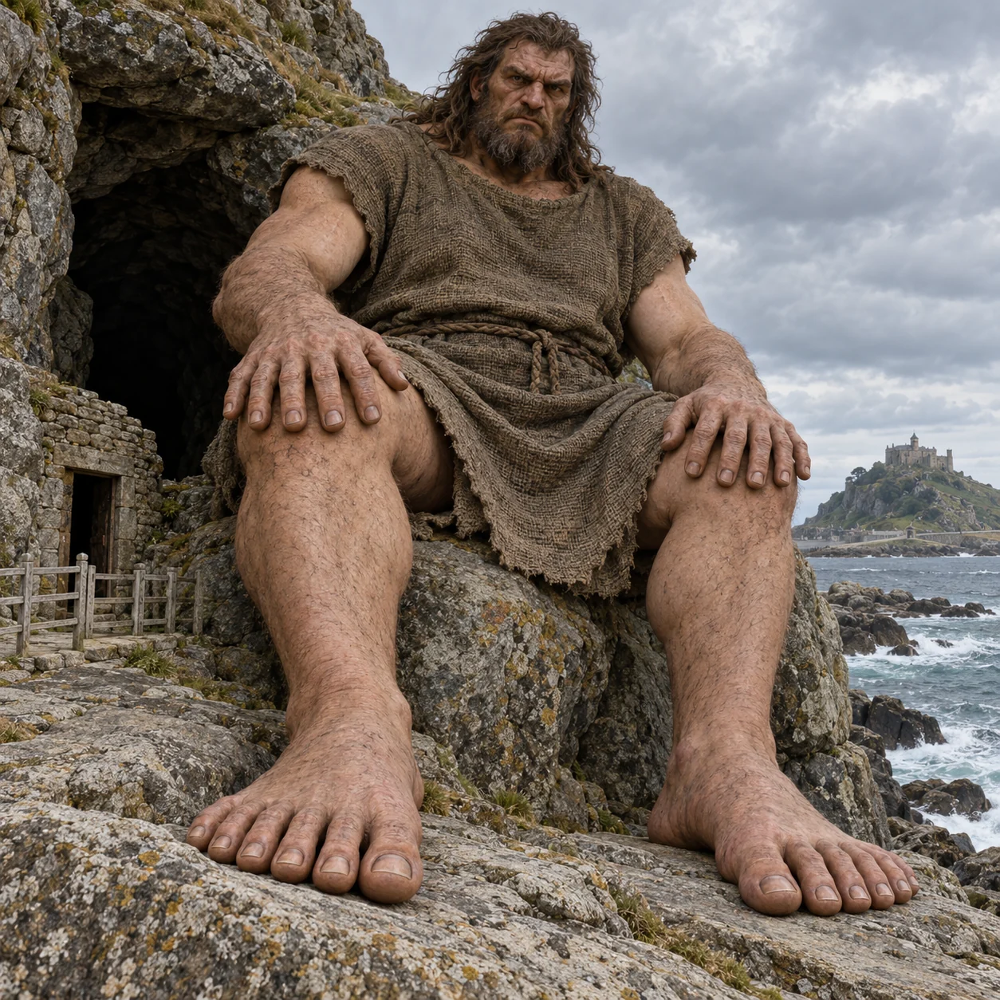
Cormoran as the18-foot Cornish giant with six digits per hand and foot, near his cave on St Michael's Mount.
Aura: Fierce grim expression, imposing bodily scale and low coastal framing in natural light.
Audit ciri dan sumber
- Humanlike giant18feet tall and broad waist, fierce face
- Six digits per hand and six toes per foot
- Coastal cave setting and visible giant scale
Inspected native: enormous grim humanlike giant beside ordinary small doorway/fence, broad waist, clothed torso. Counted six digits on each hand and six visible toes on each bare foot. Coastal cave/granite setting and natural daylight; no added horns or magic.
Review sumberSquare premium painterly naturalistic mythology art of CORMORAN, Cornish giant of St Michael's Mount. Humanlike adult male giant eighteen feet tall with enormous broad waist, grim fierce rugged face, no horns or monster additions. He sits on a coastal granite boulder outside a cave; low perspective clearly establishes his giant scale beside a tiny ordinary human-sized fence and doorway nearby. Plain opaque rough woven tunic covers torso and upper legs. IMPORTANT documented anatomy: exactly SIX DIGITS ON EACH HAND (one thumb plus five separated fingers), and exactly SIX TOES ON EACH BARE FOOT. Both broad hands open on his knees with fingers separated toward camera; both bare feet rest forward unobstructed with six clearly separated toes per foot. One head, two arms, two legs. Natural overcast coastal daylight, muted granite and surf, intimidating still pose and glare, premium detailed painterly texture. No magic, glowing aura, extra heads, fangs, gore, text or watermark.
Diyu
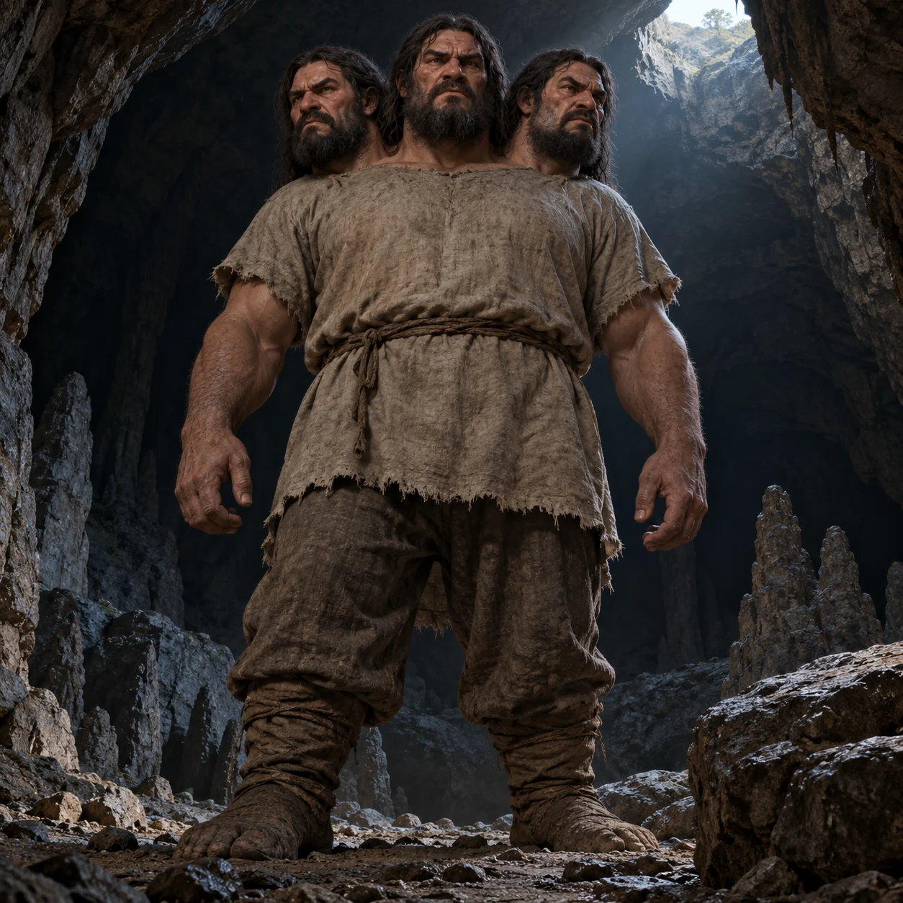
Three-headed male giant of Bashkir encyclopedia account, without other shapeshifter variants.
Aura: Threatening three-head gaze, imposing low viewpoint and natural cave daylight.
Audit ciri dan sumber
- Exactly three humanlike heads on one male giant body
- Two human arms and legs; no added horns/wings
- Underground staging and documented giant scale
Viewed PNG: exactly three separate adult humanlike heads on one imposing male body, two arms and two legs, modest rough tunic/trousers. No horns, tusks or animal limbs. Natural cave light and rock formations convey giant scale, no energy aura.
Review sumberSquare premium painterly naturalistic Bashkir folklore illustration of Diyu, selecting the documented THREE-HEADED MALE GIANT form from the Bashkir encyclopedia. ONE giant humanlike male body with EXACTLY THREE adult humanlike heads arranged side by side on three short necks, two human arms and two legs, no horns, tusks, wings or animal limbs. Three stern threatening faces, simple rough modest undyed cloth tunic and trousers as editorial clothing without asserted traditional costume, standing on dark underground rock beyond a cave threshold. Small ordinary rock formations establish documented giant scale. Full body and three heads clearly visible, grounded skin and fabric textures, dim natural light from a high rock opening, ominous presence through posture and expressions. Do not mix beautiful-girl, old-woman, storm or needle variants, no extra heads, supernatural aura, neon outline, glowing eyes, energy ribbons, luminous mist, victims or gore. No text, logo or watermark. Faces, clothing and cave geometry are explicitly editorial realization of source-supported male many-headed giant.
Valkyrie
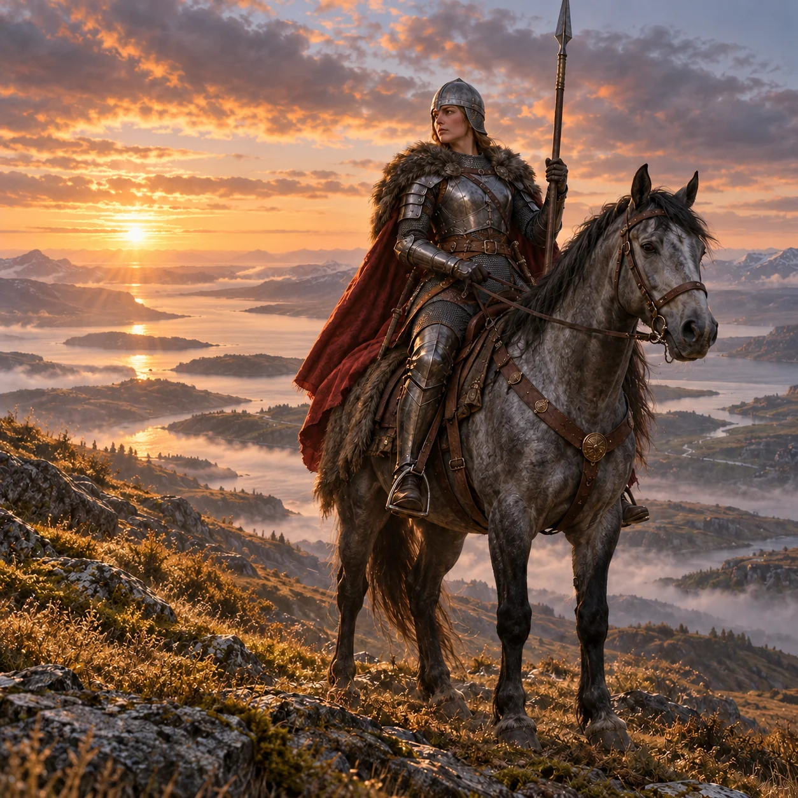
Armoured human warrior woman on horseback with spear
Aura: Grave martial authority through poised posture and natural sunrise
Audit ciri dan sumber
- One mounted armoured adult woman holding spear
- One ordinary horse with four legs
- No swan variant, horns or additional character
Inspected corrected native: one fully armoured normal woman with spear on one coherent horse, plain unhorned helmet; extra initial standing woman removed. Horse legs and human hands natural, no magical envelope.
Review sumberUse case: stylized-concept. ONE square premium painterly naturalistic Norse mythology illustration of ONE VALKYRIE choosing the documented fully ARMOURED human WARRIOR WOMAN on HORSEBACK holding a SPEAR. Adult normal human female face, two arms/hands and two legs, full modest metal armour with unhorned plain helmet, mounted on one ordinary coherent horse with four legs/hooves and one tail. No wings on either woman or horse: no swan-maiden variant mixing. Spear upright, calm commanding martial expression. Full rider/horse in frame on windy northern moor after battle, no corpses or gore. Dramatic natural dawn sky, rich iron/leather/fur textures, protective grave presence through posture and natural lighting. Armour style and horse coat are editorial period-inspired choices. No glowing aura, neon outline, magic ribbons, luminous coloured mist, flaming ring, Odin, ravens or other characters, horns, antlers, lettering, border, collage or watermark.
Final selected edit instruction: Precise-object-edit. Edit input image only by REMOVING the entire unrequested standing woman at LEFT, her white dress, arm, cape and hair. Reconstruct left moor landscape, sky and ground naturally where she was. Preserve exactly ONE armoured mounted warrior woman/Valkyrie on the existing single horse, her spear, helmet, armour, hands, horse anatomy, composition and sunrise. Remove nothing from mounted Valkyrie. No other characters added. Ordinary natural light, no glow or watermark.
Enki
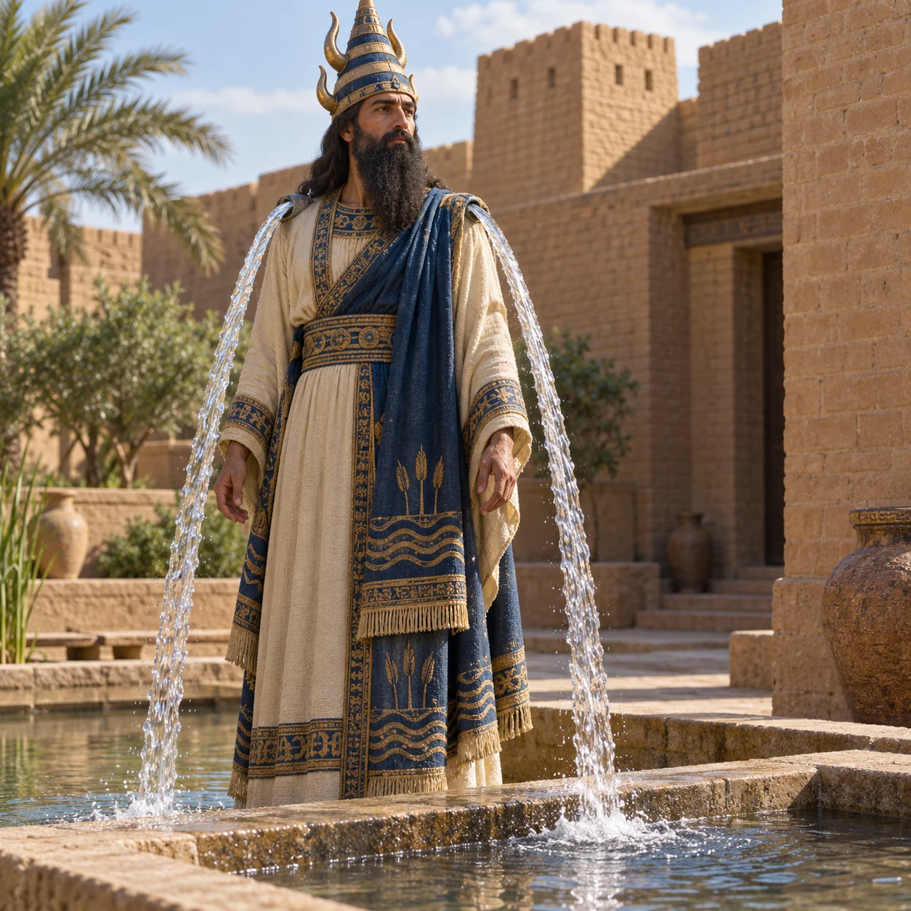
Documented Enki iconography: bearded man, horned cap, long robes and flowing shoulder streams.
Aura: Calm authoritative gaze, dignified pose, natural daylight and source-supported nonluminous water.
Audit ciri dan sumber
- Bearded human man in long robe and horned cap
- Horns belong to cap rather than body
- Clear restrained water streams from shoulders
Inspected native: bearded human man in long robes and cap-mounted horn ornaments. Two clear nonluminous water streams visibly originate at shoulders and fall into a basin. Ordinary human anatomy, calm gaze, natural courtyard daylight; no extra effects.
Review sumberSquare premium painterly naturalistic mythology encyclopedia illustration of ENKI, Sumerian freshwater god. Depict the explicit documented iconography: one bearded adult HUMAN MAN in long opaque robes wearing a HORNED CAP; the horns are ornaments of the cap, not skull horns. Dignified quiet standing pose in an ancient mudbrick courtyard by an ordinary water basin, natural warm daylight. Two modest CLEAR WATER STREAMS issue from his shoulders and fall naturally into the basin, the single source-supported supernatural motif. Water looks like real transparent falling water, no colored glow or energy ribbons. Full human anatomy, one head, two arms and hands, long dark beard, ordinary human scale. Presence via thoughtful steady gaze, composed pose, beautiful robe folds, soft natural light, tactile mudbrick and water textures. No additional animals or hybrid anatomy, lightning, luminous mist, generic aura, text or watermark.
Gargouille
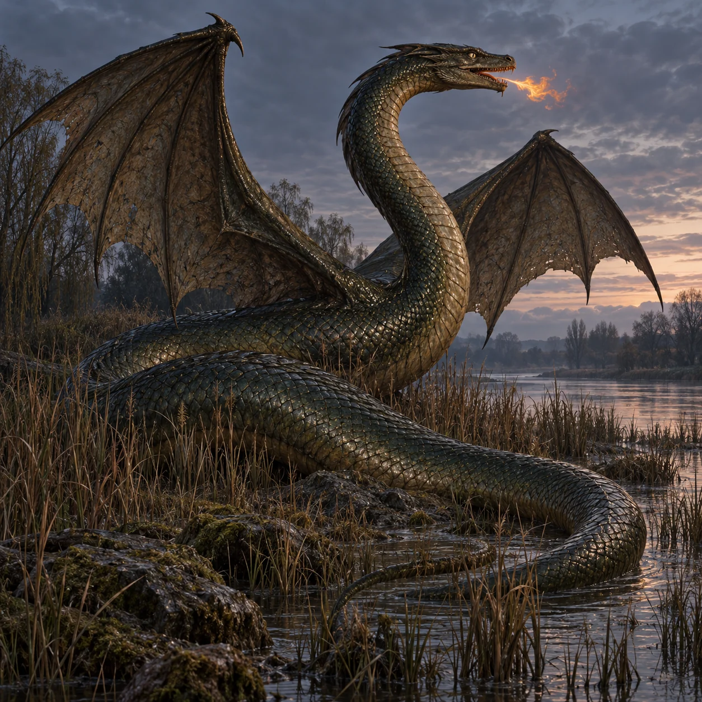
Rouen long-necked winged serpent-dragon with batlike membrane wings and restrained fire breath.
Aura: Menacing raised neck, wing silhouette and natural marsh dusk; mouth flame restrained.
Audit ciri dan sumber
- One long-necked serpent body/head and two membrane wings
- Restrained mouth flame
- Marsh scene and documented large size
Viewed PNG: one long-necked coiled serpent-dragon with exactly two membrane wings, one head and tail, no legs or horns. Small flame at mouth. Wings/body inside frame among reeds and Seine-like marsh bank; no severed head, victims or generic aura.
Review sumberSquare premium naturalistic painterly Rouen folklore illustration of La Gargouille in its documented long-necked dragon variant with BAT-LIKE WINGS and fire breath. ONE great serpentine dragon with a long slender neck, single reptilian head, two broad membrane bat wings and a single snake-like coiled body/tail, no legs or horns added. Raised head releases only a small restrained flame from its mouth, no enveloping glow. Wings half spread and tips fully visible, huge body among reeds and wet rocks on a marsh bank of the Seine, distant ordinary willow trees suggest documented enormous serpent size. Menacing vigilant presence, cold natural marsh dusk, tactile dark bronze-green scales, weathered membrane texture, beautifully resolved painterly realism. No cathedral head carving, saints, prisoners, battle, severing or gore, no extra heads or limbs, generic aura, neon outline, magical ribbons or luminous colored mist; no text, logo or watermark. Colors and marsh staging are editorial choices.
Gotoku-neko
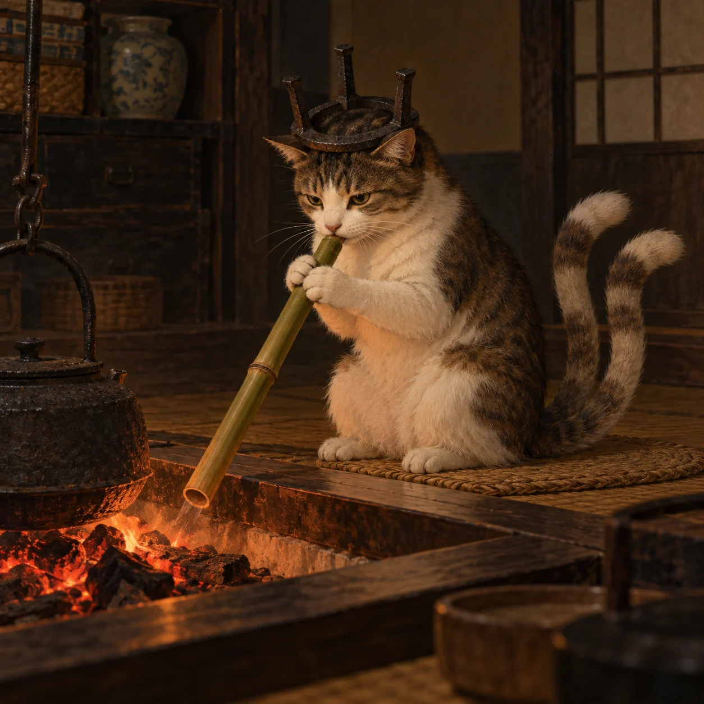
Sekien cat with two tails, head trivet and bamboo hearth tube
Aura: Uncanny household presence by warm ordinary hearth illumination
Audit ciri dan sumber
- Two separate cat tails
- Three-legged iron trivet on cat head
- Cat blows bamboo tube into hearth; no later tail flames
Native inspected: two distinct tails, natural cat paws holding bamboo tube at mouth toward hearth, upside-down ring trivet with three legs on head. Only hearth embers glow; tails nonflaming and no magic envelope.
Review sumberUse case: stylized-concept. ONE square premium painterly naturalistic Japanese yōkai illustration of GOTOKU-NEKO selecting Sekien's TWO-TAILED CAT with an iron TRIVET ON ITS HEAD using a BAMBOO TUBE to stoke a hearth. One natural cat sits upright near a traditional hearth, feline head, ears and paws, exactly TWO SEPARATE long cat tails clearly curving behind it. A small iron three-legged cooking trivet rests upside-down on the cat's head, ring base touching head and three legs projecting upward. Cat holds bamboo blowing tube toward the hearth using natural front paws, mouth at the tube, not human hands. Ordinary dim ember light from actual hearth fire and natural room shadows convey uncanny household presence. Small restrained hearth flame permitted as ordinary fire; NO FLAMES on tail tips because that is a later variant not selected. Full cat, two tails and trivet clearly visible, painterly period room textures. No horns, wing, extra tails, glowing eyes, magic aura envelope, neon outline, energy ribbons, luminous coloured mist, text, border, collage or watermark.
Hippogriff
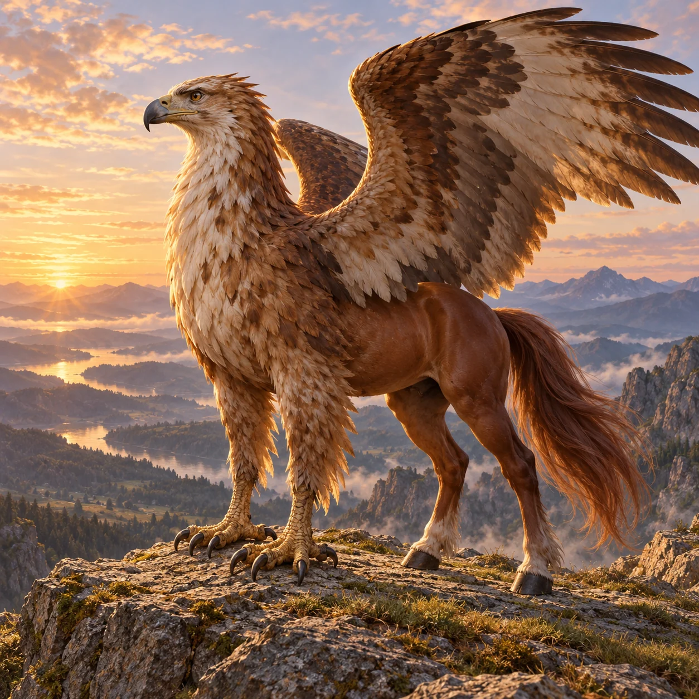
Traditional eagle-front/horse-hind Hippogriff, source feathered wings and taloned forefeet.
Aura: Proud eagle gaze, poised wings and dramatic natural mountain light.
Audit ciri dan sumber
- Eagle head, feathered front, taloned forefeet and feathered wings
- Horse hindquarters, two hooved hindlegs and horse tail
- Single coherent hybrid without lion anatomy
Actual native inspected: eagle head/beak and feathered front, two taloned forefeet, two feathered wings, chestnut horse hindquarters with two hooved hindlegs and horse tail. Single coherent anatomy, proud pose and natural dawn, no lion features or emitted aura.
Review sumberSquare premium painterly naturalistic mythology art of HIPPOGRIFF in traditional literary form, not a named modern franchise character. Exact coherent anatomy: one eagle head with hooked beak and alert natural eyes, eagle feathered neck/front half, two eagle taloned FORELEGS, two large FEATHERED WINGS attached behind shoulders; rear half is a chestnut HORSE with exactly two hooved HINDLEGS and flowing horse tail. No lion body or paws. Standing in three-quarter side view on an open mountain ledge, all four legs readable, wings half opened for poised majestic presence. Natural dawn light across tactile gold-brown feathers and horse coat, painterly atmospheric distant valleys, ordinary mount scale, no rider or harness. No glowing aura, horns, energy ribbons, luminous mist, text or watermark.
Hrímfaxi

Hrímfaxi, Night's horse, carrying Nótt across the night sky while foam from its bit falls to Earth as dew. Show the dark horse with rime in its mane galloping suspended high across stars above tiny land and river valleys, carrying a clearly visible fully clothed woman Nótt in a dark cloak. Distinct white foam on the bit becomes falling droplets descending toward dewy grass far below, making its cosmic role unmistakable. Four legs, one horse head, no wings or invented extra limbs. No chariot for this riding variant, no decorative aura, no beams or magical ribbons; the dew falling is the source's magic.
Aura: Source-recorded dew from bit foam only, no aura.
Audit ciri dan sumber
- Correct this Hrímfaxi illustration's horse anatomy. Exactly FOUR total horse legs: TWO hind legs and TWO front legs, not five. Remove the extra front leg in the lower-right part and its duplicate hoof. Clearly render a coherent galloping horse with four legs attached at anatomically correct joints and each ending in one hoof. Keep Nótt riding, dark horse's frosty mane, star sky, bit foam dripping as dew to earth and square composition. Source hrimfaxi-c01,c03,c05. No added limbs, wings, chariot, aura, ribbons, text or watermark. Reconstruct the leg arrangement cleanly rather than hiding the error.
Four countable galloping legs after correction: two hind and two front. Nótt rides across sky; bit froth droplets fall toward dew-covered earth. Additional droplets at hoof are editorial rain condensation, no invented power claim.
Review sumberCorrect this Hrímfaxi illustration's horse anatomy. Exactly FOUR total horse legs: TWO hind legs and TWO front legs, not five. Remove the extra front leg in the lower-right part and its duplicate hoof. Clearly render a coherent galloping horse with four legs attached at anatomically correct joints and each ending in one hoof. Keep Nótt riding, dark horse's frosty mane, star sky, bit foam dripping as dew to earth and square composition. Source hrimfaxi-c01,c03,c05. No added limbs, wings, chariot, aura, ribbons, text or watermark. Reconstruct the leg arrangement cleanly rather than hiding the error.
imugi
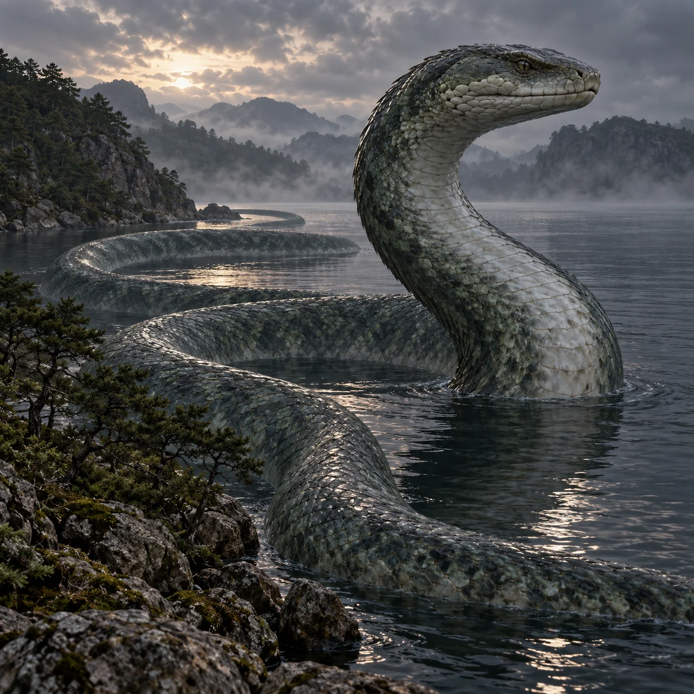
AKS pre-dragon deep-water giant serpent
Aura: Ancient commanding stillness under natural overcast lake dawn
Audit ciri dan sumber
- Giant legless serpent with one head and tapering tail
- No antlers/horns, wings or dragon limbs
- Deep water and small trees establish size
Native inspected: one large coherent scaled snake raised above lake water, no horns/legs/wings or pearl. Small shore trees and long coils show giant scale; ordinary fog and natural light, no magical glow.
Review sumberUse case: stylized-concept. ONE square premium painterly naturalistic Korean folklore illustration of IMUGI choosing the AKS documented deep-water GIANT SERPENT THAT HAS NOT BECOME A DRAGON. One enormous coherent snake coils beneath and across dark lake water near a rocky wooded bank, smooth natural serpentine head, one head, legless long scaled body and one tapering tail. No antlers, horns, legs, wings, claws or dragon whiskers; no Yeouiju pearl because this is the pre-dragon variant. Giant scale established by small shoreline trees and rocks beside broad coils. Low three-quarter viewpoint, head raised calmly above water, ancient watchful commanding expression. Natural overcast dawn and dark water reflections provide uncanny powerful presence; grey-green scales are editorial palette. Whole head and readable coherent coil path inside square frame. No fire, electric energy, halo, glowing eyes, luminous mist from body, neon outline, magic ribbons, second creature, text, border, collage or watermark.
Kelenken
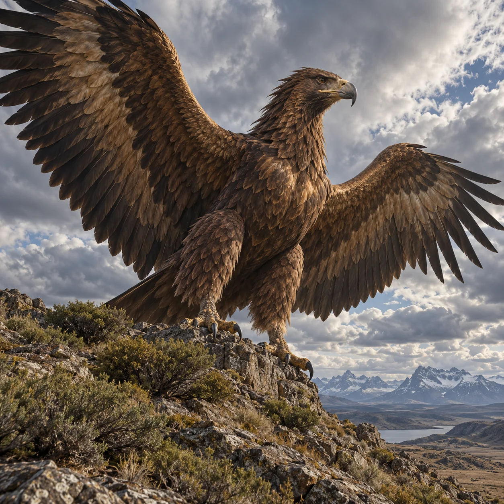
Mythological Kelenken as the explicitly documented giant bird of prey; not the extinct namesake fossil bird.
Aura: Stern predatory gaze, enormous wing span and natural storm-cloud framing.
Audit ciri dan sumber
- Giant raptorial bird, feathered wings, hooked beak and talons
- Clear giant scale in Patagonian landscape
- No fossil terror-bird reconstruction or added demon anatomy
Actual native inspected: enormous winged raptor with hooked beak, two feathered wings and two taloned feet above small shrubs/rocks in Patagonian landscape. Predatory gaze and natural cloudy light; no fossil terror-bird anatomy or invented demon effects.
Review sumberSquare premium painterly naturalistic mythology encyclopedia art of mythological KELENKEN from Tehuelche tradition, explicitly a GIANT BIRD OF PREY. Depict a colossal naturalistic winged raptor perched over a Patagonian rocky foothill, one feathered bird head with hooked beak, stern natural eyes, two feathered wings and two taloned feet. Spread wings visibly enormous compared with small ordinary bushes and rock formations below, source says giant but no precise numerical scale. Natural dark brown layered feathers, threatening watchfulness and low upward camera framing, dramatic REAL clouded daylight and distant Patagonian landscape. This is the mythological winged bird, not a fossil terror bird reconstruction. No horns, humanoid face, skeletal dinosaur anatomy, additional limbs, disease particles, magical aura, glowing eyes, neon clouds, text or watermark.
Ker
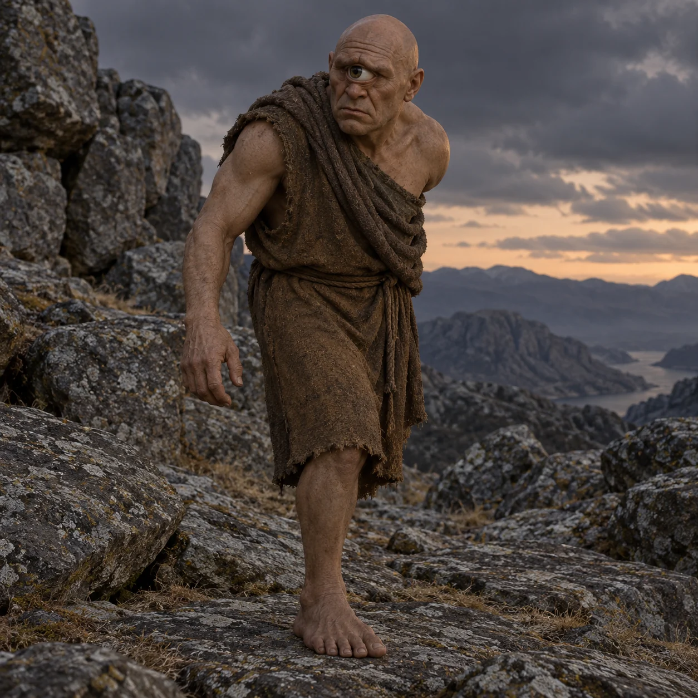
Documented shared bald one-eyed one-armed one-legged Ker exemplar; not named animal subtype or bearded Kerle.
Aura: Hostile tense gaze and guarded hunched posture under natural dusk.
Audit ciri dan sumber
- Bald scalp and exactly one eye
- Exactly one arm and one leg
- Opaque modest clothing
Actually viewed native: smooth bald scalp with one central eye, one arm/hand on viewer left, opposite smooth bare shoulder without arm, single leg/foot beneath opaque brown drape. Tense expression, no wounds, horns, wings or supernatural glow.
Review sumberSquare premium painterly naturalistic mythology illustration, no writing or border. A SINGLE exemplar of the documented Turkic and Altaic Ker beings, following the explicitly described shared form: bald, ONE eye, ONE arm, ONE leg. A restrained humanlike upright creature with a smooth bald scalp, one central eye, one shoulder bearing a single arm and hand, torso tapering to one single sturdy leg and foot; other side has no arm, there is no second leg, no injury or gore. Fully modest opaque coarse earth-brown tunic and drape. This is a general documented Ker exemplar, not the small bearded Kerle subtype or named dragon or serpent. Hostile unsettling presence through a tense watchful eye and hunched guarded pose among shaded weathered rocks, natural cloudy dusk light. No beard, horns, fangs, wings, giant size, extra limbs, extra eyes, magical glow, aura, colored mist or energy ribbons. Clothing, skin tone and rocky background are editorial staging; mythic anatomy should remain clear in the full-body composition.
Kludde
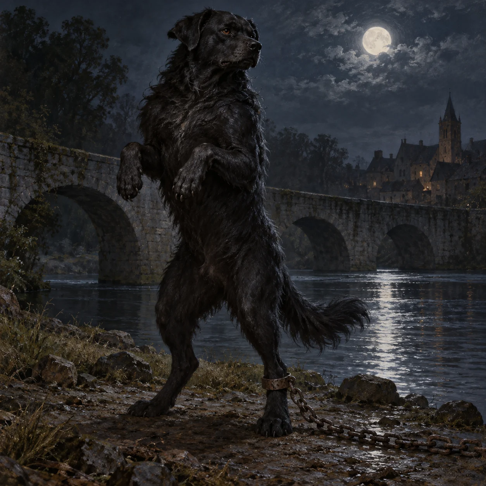
Upright black dog with left-hind-ankle chain
Aura: Tormenting spirit through upright predatory posture by moonlit bridge
Audit ciri dan sumber
- Black dog upright on two hind legs with two forepaws
- Chain on anatomical left hind ankle
- One natural dog tail, no modern fish-tail variant
Native inspected: black coherent dog standing on two hind paws, two raised forepaws, natural tail, chain around its left hind ankle (viewer right). Dark bridge/river in ordinary moonlight, no luminous eyes or magic envelope.
Review sumberUse case: stylized-concept. ONE square premium painterly naturalistic Flemish folklore illustration of KLUDDE selecting the documented monstrous BLACK DOG WALKING ON HIND LEGS, with a CHAIN on its LEFT HIND ANKLE. One coherent black dog stands upright on TWO hind legs by an old stone bridge at night, its two ordinary canine forelegs raised near chest, natural paws not hands, one dog head and one tail. A loose old iron chain wrapped around its anatomical LEFT HIND ANKLE trails onto ground, clearly visible. Three-quarter front view keeps ankle visible. Fierce watchful expression and looming upright pose under ordinary cool moonlight; dark Flemish riverside landscape and bridge give tormenting spirit presence. No wings, fish tail, antlers, human face, extra limbs, werewolf-man variant, luminous eyes, body magic glow, neon outline, coloured luminous mist, energy ribbons, victims, gore, text, border, collage or watermark.
Kornmann
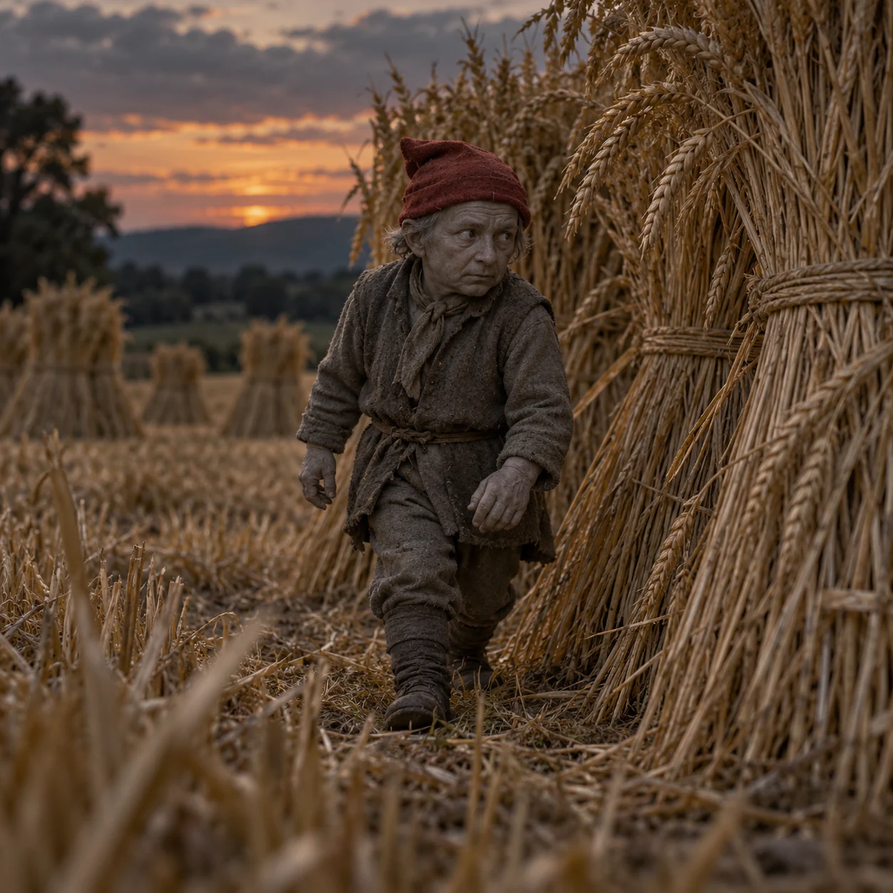
Documented dwarf-like Kornmann variant: little grey man with small red cap in a grain field.
Aura: Secretive human gaze and poised stance among tall grain in natural dusk light.
Audit ciri dan sumber
- Little grey humanlike man with small red cap
- Small scale among grain stalks
- No blended black-hat fiery-mouth variant
Actual native inspected: small grey humanlike man in small muted red cap, ordinary limbs, secretive glance walking by tall stacked grain. Selected dwarf variant remains coherent without black-hat/fiery-mouth features; natural dusk only.
Review sumberSquare premium painterly naturalistic mythology art of KORNMANN, choose ONLY the documented DWARF variant: a little grey humanlike man wearing a SMALL RED CAP, with ordinary human face, two arms and two legs. His grey skin and grey modest simple clothing, small stature below tall ripe grain stalks, secretive alert gaze and still stance make him eerie. Show full small figure walking around stacked harvested grain at field edge in natural dusk light. Tactile grey face and cloth, real muted red cap, detailed golden grain, intimate low camera viewpoint and gentle natural wind. No pointy elf ears, big black hat, red luminous eyes or fire mouth borrowed from another variant, no children or victims, no extra limbs, magical glowing aura, neon mist, text or watermark.
Tarla İyesi

Old field woman with long arms squeezing rain clouds
Aura: Presence through source-backed form and physical scene; no generic glow, ribbons or magical mist.
Audit ciri dan sumber
- Old field woman with long arms squeezing rain clouds
- Coherent anatomy and documented mythic scene
Exactly two source-supported extremely long arms squeeze cloud and cause rain while woman sits tree.
Review sumberCreate one square premium painterly mythological catalogue illustration. A GREY-HAIRED OLD HUMAN WOMAN TARLA IYESI sits securely high in a great URUK TREE above sown fields, her TWO SUPERnaturally LONG ARMS stretch upward to gently SQUEEZE A LOW RAIN CLOUD, causing physical rain to fall on crops below. Clear human face, opaque long earth-colored dress, human legs seated branch; exactly2 long arms and2 hands, no extra limbs. Source long arms sky-reach and cloud squeeze explicitly supported, make that visible with hand/cloud contact and falling droplets; no energy beams/glow. Tree's species exact unspecified editorial; no snakebody. Detailed naturalistic painting, documented mythical form/scene, coherent complete relevant anatomy. No text, watermark or border. No generic glow, luminous eyes/mist, floating ribbons, particles or unsupported magical powers.
Əməgen
Single-headed female Emegen giant
Aura: Character presence through documented form, posture, framing, environment and natural light
Audit ciri dan sumber
- Human-looking female giant with one head
- Rough features, two normal arms/legs
- Small trees establish documented gigantic scale
Native inspected: one imposing human-looking female giant in opaque rough robe, two ordinary hands and feet partly below hem, coarse stern face. Small trees provide size; no invented horns or aura.
Review sumberUse case: stylized-concept. ONE square premium painterly naturalistic Caucasian Nart mythology illustration of EMEGEN / Əməgən, selecting a SINGLE-HEADED FEMALE GIANT (many heads are optional variants, not selected). One immense human-looking adult female giant stands in dark mountain foothills, broad weathered face with rough asymmetrical features, two arms/hands and two legs. Plain rough opaque earth-coloured robe fully covers torso and hips, imposing heavy physique, monstrous threatening expression but no invented animal anatomy. Giant identity and female sex from accepted dictionary/tradition; ugly presentation through expression and coarse textures, not horns or fangs. Small fir trees and mountain path beside her feet establish gigantic scale. Menacing presence through low framing, looming stance and natural storm dusk. Full figure. No extra heads, horns, wings, claws, animal face, victims, babies, gore, glowing eyes, generic magical aura, neon outlines, luminous coloured mist, energy ribbon, text, border, collage or watermark.
Mo-o

Moʻo in the recorded Kikipua tongue-bridge episode confronting Hiʻiaka and Wahineʻomaʻo at a Hawaiian ravine. Transform the tiny gecko reference into a monstrous immense wingless lizard spirit: one continuous four-legged reptile with one head and one long tail, resting at the far lip of a deep lush ravine. Its extraordinarily long broad tongue stretches out of its open mouth all the way across the ravine, forming the deceptive bridge. Two fully clothed adult Hawaiian women stand safely at the near lip, one recognizing and pointing toward the reptile. Tongue must visibly connect to its mouth, not a separate bridge. No generic European dragon wings, extra heads, horns, injury or gore.
Aura: None; ordinary environmental illumination.
Audit ciri dan sumber
- Moʻo in the recorded Kikipua tongue-bridge episode confronting Hiʻiaka and Wahineʻomaʻo at a Hawaiian ravine. Transform the tiny gecko reference into a monstrous immense wingless lizard spirit: one continuous four-legged reptile with one head and one long tail, resting at the far lip of a deep lush ravine. Its extraordinarily long broad tongue stretches out of its open mouth all the way across the ravine, forming the deceptive bridge. Two fully clothed adult Hawaiian women stand safely at the near lip, one recognizing and pointing toward the reptile. Tongue must visibly connect to its mouth, not a separate bridge. No generic European dragon wings, extra heads, horns, injury or gore.
Monstrous four-limbed wingless gecko has tongue continuously emerging from mouth and spanning ravine toward two women; documented Kikipua bridge identity unmistakable.
Review sumberMoʻo in the recorded Kikipua tongue-bridge episode confronting Hiʻiaka and Wahineʻomaʻo at a Hawaiian ravine. Transform the tiny gecko reference into a monstrous immense wingless lizard spirit: one continuous four-legged reptile with one head and one long tail, resting at the far lip of a deep lush ravine. Its extraordinarily long broad tongue stretches out of its open mouth all the way across the ravine, forming the deceptive bridge. Two fully clothed adult Hawaiian women stand safely at the near lip, one recognizing and pointing toward the reptile. Tongue must visibly connect to its mouth, not a separate bridge. No generic European dragon wings, extra heads, horns, injury or gore. Edit the reference into a full square mythological narrative illustration, restrained painterly realism, strong readable main subject, correct coherent anatomy. No text, watermark, frame, neon, generic aura, magical ribbons, generic mist or smoke. Use only explicitly described source supernatural action. Keep all people fully clothed and all creatures unharmed. Scene staging and clothes are editorial choices.
Muscaliet
Coherent Pierre de Beauvais composite small hare body, squirrel legs/tail, weasel ears, mole snout, boar teeth and pig bristles.
Aura: Alert tense crouch at desiccated roots under natural woodland light.
Audit ciri dan sumber
- Small hare-shaped body and squirrel bushy tail/limbs
- Short weasel ears and mole-like snout
- Boar teeth and bristly coat
- Dried tree habitat without invented flames
Actually viewed native: small rounded hare-like body with bristly coat, large squirrel tail, squirrel-like paws, short rounded ears, pointed soft snout, clear curved boar tusks/teeth. Three paws visible fourth naturally obscured in crouch. Dry roots/leaves/fruits, no flames, glow or invented horns/wings.
Review sumberSquare premium painterly naturalistic medieval bestiary mythology illustration, no lettering. ONE Muscaliet according to the coherent Pierre de Beauvais description: small hare-shaped body, FOUR squirrel legs and paws, large squirrel bushy tail, short rounded WEASEL ears (not long rabbit ears), narrow MOLE snout, sharp BOAR teeth including modest boar tusks, dense bristly PIG-like coat. Show this small composite animal clearly in three-quarter profile nestled among the exposed roots of a dry dying tree; a few dead leaves and shriveled fruits nearby represent the documented destruction of tree by its natural body heat. Do not depict actual fire or heat rays, no orange glow, smoke, aura or burning fur: the documented effect is desiccation. Alert disquieting gaze and tense crouch convey its harmful presence under naturally filtered afternoon woodland light. No wings, horns, extra limbs, giant size or magical ornaments. Natural grey-brown coat and precise scene arrangement are editorial choices. Detailed tactile fur and bark with refined oil painting texture.
Ochokochi
Rust-red fur goat-man with axe-shaped chest protrusion
Aura: Character presence through documented form, posture, framing, environment and natural light
Audit ciri dan sumber
- Half-man half-goat upright body in rust-red fur
- Long hand claws
- Axe-shaped pale chest protrusion
Native inspected: rust-red shaggy goat-man with two long-clawed hands, two goatlike hoof legs, one head without horns, pale axe blade growing from chest. Huge forest scale and threatening pose; no emitted magic.
Review sumberUse case: stylized-concept. ONE square premium painterly naturalistic Georgian folklore illustration of OCHOKOCHI selecting the rust-red fur huge goat-man forest monster. One upright half-human half-goat figure with humanoid torso, goatlike face and coarse RUST-RED FUR, long sharp CLAWS on hands, and a prominent AXE-SHAPED BONE PROTRUSION growing outward from the centre of CHEST. The chest protrusion is a single solid sharp pale bone/stone-axe hump, not a held weapon. Goat hind legs and hooves are editorial resolution of documented half-goat form, no horns unless needed by goat shape (omit to avoid unsupported head additions). Menacing hunched posture among dark Georgian forest, small trees establish documented huge size. Both hands/claws and chest axe visible in three-quarter front view, full body inside frame. Natural overcast moonlight and tree shadows convey horror; no glowing aura, neon outline, luminous mist, energy ribbons, gore, victims, female companion, text, border, collage or watermark.
Perun
Source bearded middle-aged man borne on a flying millstone; no blended silver-headed idol form.
Aura: Steady severe gaze, windblown robe, elevated millstone and natural storm-cloud light.
Audit ciri dan sumber
- Middle-aged bearded human man
- Flying stone millstone
- No metallic idol anatomy or borrowed thunder-deity attributes
Actual native inspection: middle-aged bearded human man clothed in robes sits on clearly hovering circular rough millstone with central hole visible underneath. Natural storm clouds and windblown cloth, ordinary human anatomy; no idol metallic head or luminous effects.
Review sumberSquare premium painterly naturalistic mythology art of PERUN, select the specifically documented form of a BEARDED MIDDLE-AGED HUMAN MAN flying on a MILLSTONE. One ordinary human man with stern thoughtful gaze, dark-grey beard, two arms and two legs in long modest opaque earth-toned woven robe. He sits firmly on a large horizontal circular rough STONE MILLSTONE with clear central hole; the millstone is suspended in open air just above an oak-covered hill. The supported supernatural element is this flying stone, portray it physically weighty, without luminous lift effects. Natural windy storm daylight, muted sky, robe and beard moved by wind, powerful composed presence through framing and expression. No skull horns, silver skin or golden moustache from the distinct idol depiction, no extra limbs, Thor hammer, generic neon lightning aura, energy ribbons, glowing mist, text or watermark.
Ərşək
Explicit bear head and claws on leopard body hybrid.
Aura: Quiet alert animal weight and natural diffuse light.
Audit ciri dan sumber
- Bear broad muzzle and rounded ears
- Spotted leopard torso and long feline tail
- Four animal limbs with bear-like claws
Actually viewed native: unmistakable furry bear head with broad muzzle and rounded ears, spotted quadruped torso and long feline tail, four paws with large bear-like claws. Stocky hybrid musculature, no human anatomy, horns, wings or glow.
Review sumberSquare premium painterly naturalistic mythological wildlife illustration, no letters. Ərşək or Erşek of Turkic and Altai mythology, ONE coherent documented hybrid: body of a LEOPARD with visible spotted rosettes and long feline tail, head of a BEAR with broad muzzle, small rounded bear ears and dense brown head fur; bear-like large claws on four animal paws. Four-legged low feline stance, no human parts, no horns or wings, no giant scale. Show a full three-quarter profile standing on a plain weathered rocky ledge, alert and physically weighty with quiet animal confidence. This background and brown-gold palette are editorial staging, not asserted traditional habitat or temperament. Natural diffuse morning light, muted backdrop and tactile painterly fur. No magical glow, luminous aura, energy trails, neon mist, fire or supernatural symbols. Preserve clear distinction bear head versus spotted leopard torso; not an ordinary bear, not ordinary leopard.
Šarac
Piebald winged Šarac in Serbian epic account
Aura: Intelligent graceful miraculous presence under natural Balkan dawn
Audit ciri dan sumber
- Cowlike black-white piebald horse coat
- Four horse legs, two separate back wings
- No invented antlers or giant size
Native inspected: one piebald horse with four coherent horse legs/hooves, two distinct feathered back wings, natural horse head and tail; full form framed. No horns, rider or magical aura.
Review sumberUse case: stylized-concept. ONE square premium painterly naturalistic Serbian epic mythology illustration of ŠARAC, Marko's horse, selecting the documented PIEBALD WINGED HORSE variant. One ordinary horse body with black-and-white cowlike irregular coat patches, four legs with natural hooves, one horse head/mane/tail and exactly TWO wings at its back. Two feathered wings lifted so both distinct wing shapes readable; feather rendering editorial. No rider or saddle. Full horse and wing tips inside frame on rocky Balkan hillside under natural early morning light; graceful intelligent watchful horse expression and strong poised stance convey miraculous presence. Ordinary horse size, not giant. No antlers, horns, unicorn horn, human hands, extra legs, luminous eyes, glowing body halo, neon outlines, energy ribbons, luminous coloured mist, clouds formed from body, text, border, collage or watermark.
Schimmelreiter

The Schimmelreiter ghost rider on a white horse during a sea storm that threatens a dyke. White horse rears upon the narrow dyke with a clearly visible fully clothed pale human rider on its back, dark period coat blown by wind. Huge storm waves break over a visibly damaged section of the earthen sea barrier behind them. Rider and dangerous dyke episode dominate; no empty animal portrait. Ordinary moonlit storm illumination, ghostly pallor only, no glowing eyes, mist aura or translucent ribbons. Horse one head, four legs, one tail.
Aura: None; ordinary environmental illumination.
Audit ciri dan sumber
- The Schimmelreiter ghost rider on a white horse during a sea storm that threatens a dyke. White horse rears upon the narrow dyke with a clearly visible fully clothed pale human rider on its back, dark period coat blown by wind. Huge storm waves break over a visibly damaged section of the earthen sea barrier behind them. Rider and dangerous dyke episode dominate; no empty animal portrait. Ordinary moonlit storm illumination, ghostly pallor only, no glowing eyes, mist aura or translucent ribbons. Horse one head, four legs, one tail.
Pale human rider on anatomically four-legged white horse above breached storm dyke, strong documented ghost-rider episode without aura.
Review sumberThe Schimmelreiter ghost rider on a white horse during a sea storm that threatens a dyke. White horse rears upon the narrow dyke with a clearly visible fully clothed pale human rider on its back, dark period coat blown by wind. Huge storm waves break over a visibly damaged section of the earthen sea barrier behind them. Rider and dangerous dyke episode dominate; no empty animal portrait. Ordinary moonlit storm illumination, ghostly pallor only, no glowing eyes, mist aura or translucent ribbons. Horse one head, four legs, one tail. Edit the reference into a full square mythological narrative illustration, restrained painterly realism, strong readable main subject, correct coherent anatomy. No text, watermark, frame, neon, generic aura, magical ribbons, generic mist or smoke. Use only explicitly described source supernatural action. Keep all people fully clothed and all creatures unharmed. Scene staging and clothes are editorial choices.
Searrach Uisge

Forty-foot eel-like Searrach Uisge with rowboat scale
Aura: Presence through source-backed form and physical scene; no generic glow, ribbons or magical mist.
Audit ciri dan sumber
- Forty-foot eel-like Searrach Uisge with rowboat scale
- Coherent anatomy and documented mythic scene
Immense eel-like body with adult witnesses in rowboat makes abnormal documented size readable.
Review sumberCreate one square premium painterly mythological catalogue illustration. A FORTY-FOOT EEL-LIKE LOCH MONSTER SEARRACH UISGE swims at Scottish Loch Suainbhal surface, thick elongated eel body bending in long S curve. Nearby a normal small wooden rowboat holds TWO fully clothed adult witnesses; monster is over THREE boatlengths long, head about personsize, so documented10-13m scale unambiguous. Natural elongated fish/eel structure with low continuous fin, singlehead, no legs/horns. Wide composition fullbody and nearbyboat, subdued cloudy physical light and ripples. Source giant reported cryptid, not ordinary small eel portrait. Detailed naturalistic painting, documented mythical form/scene, coherent complete relevant anatomy. No text, watermark or border. No generic glow, luminous eyes/mist, floating ribbons, particles or unsupported magical powers.
Šemík

Semik the intelligent speaking white horse rescues his rider by the legendary leap from the Vysehrad rock: magnificent white horse with one clothed medieval Bohemian rider soaring in a vast leap out from the high cliff above the river, forelegs extended and hindlegs trailing, four legs, no wings. View cliff and river far below, distant fortress parapet where pursuers remain. Extreme leap and rescue, not standing horse portrait. No glow, no flying anatomy.
Aura: Presence through source-supported iconography, narrative action, posture, scale and natural scene light; no generic magical glow.
Audit ciri dan sumber
- Documented form or event
- Coherent anatomy
- No arbitrary aura
Native individually viewed: White horse and rider leap high from fortress cliff above river, four legs and no wings; documented rescue dramatized.
Review sumberUse case: illustration-story. Asset: mythological creature education catalogue. Create one painterly realistic portrait 2:3, coherent rich brushwork and dramatic readable storytelling. No text or watermark. Semik the intelligent speaking white horse rescues his rider by the legendary leap from the Vysehrad rock: magnificent white horse with one clothed medieval Bohemian rider soaring in a vast leap out from the high cliff above the river, forelegs extended and hindlegs trailing, four legs, no wings. View cliff and river far below, distant fortress parapet where pursuers remain. Extreme leap and rescue, not standing horse portrait. No glow, no flying anatomy. No arbitrary glowing effects, colored mist, glyphs or ribbons.
Stinthengst
Masurian fish king wearing the explicitly documented golden crown.
Aura: Regal poised swim, clear watchful fish eye and natural underwater light.
Audit ciri dan sumber
- Natural fish form with fins and tail
- Golden crown
- Masurian freshwater setting, no horse etymology anatomy
Inspected actual native: natural silver freshwater fish with coherent fins/forked tail and physical golden crown on head, underwater reeds/bridge scene. No horse or human anatomy, magic particles or emitted aura.
Review sumberSquare premium painterly naturalistic mythology art of STINTHENGST, Masurian FISH KING, documented as king of smelt with GOLDEN CROWN. One natural streamlined freshwater fish, silvery-grey scales, ordinary fish head/eyes, fins and forked fish tail, wearing a modest physical gold crown resting atop head. Smelt-like natural anatomy is editorial interpretation of fish king, no human or horse features. Swimming calmly in clear Masurian lake water near reeds and the shadow of a simple bridge above, crown reflecting natural daylight filtering from surface. Poised regal presence through eye, composition and gentle sunlight, tactile fine scales. Exact size not asserted; no giant landscape scale. No arms, legs, wings, magic glow, wish-granting particles, aura, energy ribbons, neon water, text or watermark.
Svyatogor
Human-looking giant bogatyr taller than forest in Holy Mountains.
Aura: Grave thoughtful expression and immense grounded weight in natural mountain light.
Audit ciri dan sumber
- One normal human giant with two arms/legs
- Explicit forest-relative great scale
- Mountain setting
Actually viewed native: single human male giant in modest mail/tunic/helmet with two arms, feet/legs partly forest-obscured. Ordinary trees reach lower legs while head rises below background clouds. No stone anatomy, monstrous appendages or aura.
Review sumberSquare premium painterly naturalistic Russian bylina mythology illustration, no lettering. Svyatogor, the documented giant bogatyr: ONE human-looking adult male warrior giant, two arms, two legs, single head, towering ABOVE a standing forest yet BELOW low drifting clouds on high rocky Holy Mountains. Clearly show tall ordinary forest trees reaching below his knees to establish documented enormous scale. Wear plain opaque earth-tone tunic with modest mail and simple unornamented helmet as editorial knight-errant staging, not a source-specific armor claim. No horns, fangs, wings or monstrous skin. Grave thoughtful expression and immense grounded weight, natural mountain overcast sunlight. Do not literalize his name into rocky mountain anatomy. No magical aura, glow, energy ribbons or supernatural colored mist. Omit horse, coffin and death scene; only giant warrior form and mountain setting, not a blend of story episodes. Painterly refined landscape with readable single full figure.
Tinilau
Kind handsome youth human form of Tinilau/Tinirau
Aura: Quiet character presence through documented form, posture and natural light
Audit ciri dan sumber
- Normal human youth, ordinary scale
- No right-human/left-fish variant mixing
- Fish in shallows as guardian context
Native inspected: one handsome young adult man, two arms/hands and legs, modest opaque wrap, calm gaze at fish-filled shallows. No animal body traits or emitted aura.
Review sumberUse case: stylized-concept. ONE square premium painterly naturalistic Polynesian mythology illustration of TINILAU/Tinirau choosing the accepted kind HANDSOME YOUTH HUMAN FORM, not the separate right-human left-fish variant. One handsome adult young Polynesian man with normal human face/body, two arms and legs, stands calmly on a quiet Pacific shoreline looking into clear fish-filled shallows. Modest simple woven wrap covers waist to below knees; no invented crown or fixed costume claim. One man only, ordinary human size, peaceful compassionate expression and watchful posture convey fish-guardian presence through natural warm morning light, sea breeze and ocean depth. Small natural fish visible underwater are context, not body parts. No fish lower body, gills, webbed hands, horns, wings, luminous body mist, magical aura, neon outlines, energy ribbons, glowing eyes, turtles, wives, bloody waves, text, border, collage or watermark. Clothes, face and landscape are editorial staging; do not collapse all Polynesian variants into one tradition.
Ulu Toyon

Anthropomorphic Ulu Toyon lord with ravens and fire
Aura: Presence through source-backed form and physical scene; no generic glow, ribbons or magical mist.
Audit ciri dan sumber
- Anthropomorphic Ulu Toyon lord with ravens and fire
- Coherent anatomy and documented mythic scene
Anthropomorphic lord with2ravens, physical fire and adult shaman/drum; robe and carvings editorial atmosphere.
Review sumberCreate one square premium painterly mythological catalogue illustration. ADULT HUMAN-SHAPED ULU TOYON, Great Lord and patron of Yakut shamans, stands in dignified judgement beside a small physical FIRE in a Siberian ritual clearing. HUMAN MALE FACE and body, exactly2 arms and2legs in opaque heavy traditional-style robe (editorial apparel, not factual claimed costume). A pair of black RAVENS perch close by indicating father-of-ravens identity; adult shaman holding drum respectfully stands before him. No raven head/body or animal hybrid, no horns. Documented anthropomorphic spiritlord and giveroffire. Flame natural firepit, restrained ordinary firelight. Detailed naturalistic painterly treatment, strong readable source mythic identity, complete relevant anatomy. No text/logo/border. No generic glow, luminous mist, floating ribbons, particles or unsupported powers.
Väinämöinen
Documented wise old human man singing by water.
Aura: Composed aged face, slightly open singing mouth and warm reflected natural light.
Audit ciri dan sumber
- Old wise man with human anatomy
- Singing expression
- Water association without inherited giant anatomy
Actually viewed native: weathered elderly man with grey hair/beard, slightly open mouth, two hands resting in lap and ordinary clothed human body seated by lake. Natural dawn and birches, no horns, sound-energy effects, glow or giant anatomy. Beard rendered longer than prompt's short request but unspecified length remains editorial.
Review sumberSquare premium painterly naturalistic Finnish folklore illustration, no letters. Väinämöinen exactly as documented, ONE OLD WISE MAN with normal human anatomy, quietly seated on a smooth lakeside stone singing, lips slightly open and thoughtful weathered face. Simple fully opaque coarse wool and linen clothing in muted earth tones, ordinary greying hair and short grey beard are editorial realization of age. Two human arms with hands resting in lap, no instrument required, no antlers or animal traits. Water setting follows his documented water association, birches and cool soft morning light are editorial scene choices. Convey wisdom and potency of singing through composed expression, dignified pose and natural reflected light, not visible sound waves or magic. No giant scale inferred from giant parentage; no luminous aura, glowing eyes, energy ribbons, floating runes, horns or wings. Fine hand-painted textures, tranquil shore, strong portrait presence.
酸與
Suanyu snake-bird with four wings, six eyes and three bird feet
Aura: Character presence through documented anatomy, expression, framing and natural lighting
Audit ciri dan sumber
- Exactly four feathered wings
- Six eyes as three paired rows
- Exactly three separate bird feet
Edited native inspected: four distinct wing tips (two pairs); six eyes, three on near side and three on far side including small upper far-eye; three clearly separate clawed feet planted on rock. Snake-shaped neck/body, no horn or luminous aura.
Review sumberPrecise-object-edit. Edit input Suanyu creature. Preserve snake-bird shape, exactly FOUR wings, rocky mountain scene and natural light. Correct counts: exactly SIX EYES on head in THREE PAIRS, currently only5 visible. Add the missing third far-side eye so left and right sides each3. Correct feet: currently2; add a THIRD distinct bird leg/foot centrally between existing legs, slightly behind but entirely visible with claws planted on rock. Keep all six eyes nonluminous. Creature total FOUR wings, SIX eyes, THREE feet. Do not add head, horn, more wings, magic glow, text or watermark.
首切れ馬
Kubikireuma headless horse ghost alone, without riding deity/warrior or separate flying-head variant.
Aura: Eerie quiet headless silhouette and hesitant horse stance in natural moonlit road.
Audit ciri dan sumber
- Horse lacking head, coherent four-legged body and horse tail
- Headlessness clear without gore
- No rider or floating head
Inspected actual native: headless natural horse body, neck ending clearly visible with empty space above; four hooved legs and ordinary mane/tail. No rider, flying head, wound/gore or emitted aura in natural moonlit road.
Review sumberSquare premium painterly naturalistic mythology art of Japanese KUBIKIREUMA, the explicitly documented HEADLESS HORSE ghost. One coherent ordinary horse BODY with exactly four hooved legs and horse tail; its neck ends smoothly with absolutely NO HEAD. Show entire horse in clear three-quarter side view with blank space above the neck so headlessness is unmistakable, no hidden head or crop substitution. Quiet rural Japanese crossroads at night, natural moonlight and dim tree shadows. Dark brown coat, horse's hesitant poised stance, tactile mane along neck/body, naturally shadowed smooth closed neck ending with NO wound, blood, exposed bone or gore. Select horse-alone version: no rider, warrior, deity or separate floating horse head. No horns, wings, extra legs, transparent skeleton, luminous aura, energy ribbons, neon mist, text or watermark.
肥遺
Northern Shan Hai Jing Feiyi: one serpent head and two complete limbless bodies.
Aura: Alert still gaze and unusual bifurcated silhouette in dry natural daylight.
Audit ciri dan sumber
- Exactly one head and two bodies/tails
- No Western six-foot/four-wing mixing
- Bare mineral-rich mountainous terrain
Actually viewed native: one ordinary snake head above a clearly visible Y fork into two separately traceable serpent bodies and two tapering tails. Bare stone terrain with subdued green/copper inclusions, no vegetation; no feet, wings, horns or luminous effects.
Review sumberSquare premium painterly naturalistic Chinese Shan Hai Jing mythology illustration, NO lettering. Feiyi choosing ONLY Northern Mountains text form: ONE SNAKE HEAD shared by TWO COMPLETE SERPENT BODIES. Make a single ordinary scaled snake head with one short neck that clearly forks immediately into TWO separately traceable long limbless snake bodies, each ending in its own tapering tail. Exactly one head and two bodies, no third tail. NO feet or wings from conflicting Western account, no horns, claws, whiskers or fire. Resting on bare cracked rocky mountain terrain with no vegetation, according to Mount Hunxi text; subtle ordinary copper/green jade mineral inclusions in stone. Restrained drought atmosphere via dry earth and harsh natural daylight, no magical desert blast. Brown olive scale colors and pose are editorial. Ominous stillness through fixed alert gaze and unusual bifurcated silhouette; no neon aura, glowing eyes, energy ribbons or luminous mist. Detailed premium oil painting.
文鳐鱼
Night-flying Wenyaoyu carp with bird wings and white/red/blue colours
Aura: Quiet character presence through documented form, posture and natural light
Audit ciri dan sumber
- Carplike fish body and two bird wings
- White head, red mouth, blue body patterns
- Fish tail and fins, no feet
Native inspected: one carplike fish with two raised bird wings, white head and red lips, blue-patterned scaled body and forked fish tail; no feet. Moonlit flight over water, no emitted body glow.
Review sumberUse case: stylized-concept. ONE square premium painterly naturalistic Chinese Shan Hai Jing illustration of WENYAOYU. One mythical CARP-SHAPED FISH with TWO BIRD WINGS, a WHITE HEAD, RED MOUTH and BLUE PATTERNS on its scaled fish body. Exactly one fish head, coherent fish fins and forked fish tail, wings attached symmetrically to upper body, no bird legs. Fish flies gracefully low over quiet dark water at NIGHT, both feathered wings raised and full creature in frame. White head clearly separated from blue patterned body, red lips/mouth visible. Benevolent harvest-omen presence through serene poised flight, natural moonlight and quiet water reflections. No dragon horns, bird beak, human face, extra fish, giant scale, magic body glow, neon outline, luminous mist, energy ribbons, flames, text, border, collage or watermark. Wing feathers and scene details are editorial rendering choices.
冉遗鱼
Ranyiyu fish body, snake head, six feet and eyes shaped like horse ears.
Aura: Strange intent eyes, balanced six-foot stance and natural river light.
Audit ciri dan sumber
- Fish body and snake head
- Exactly six feet in three pairs
- Eye shapes resemble horse ears; no actual added horse ears
Actual native inspection: scaly fish body/fins/forked tail, snake head, exactly six separate feet counted in three pairs. Two elongated ear-shaped organic eyes contain iris/pupil, no separate horse ears; natural river daylight, no glow.
Review sumberSquare premium painterly naturalistic mythology art of RANYIYU from Shan Hai Jing: a FISH BODY with a SNAKE HEAD and exactly SIX FEET arranged as THREE PAIRS of short walking limbs. One streamlined scaly fish torso with fish fins and fish tail; one smooth natural snake head. IMPORTANT its EYES are described like HORSE EARS: make two actual organic eyes unusually elongated with tapered upright ear-shaped outlines, visible iris and pupil inside each eye; these are eyes, not extra ears or ornaments. Do NOT attach horse ears. Creature standing on a shallow clear river gravel bar beside wooded Chinese mountain stream, low three-quarter viewpoint with all six separate feet clearly counted, three on each side staggered unobstructed. Natural silver-brown scales and ordinary daylight, enigmatic gaze and poised limbs create presence. No extra limbs, horns, wings, glowing aura, luminous mist, text or watermark.
Vupkan

Vupkan in the northern Chuvash documented dog-form evil spirit blamed for epidemics and household impoverishment. A dark dog stands squarely in foreground by a shabby house; beside the doorway a fully clothed worried adult tends another sick adult seated weakly on a bench, while a cow lies exhausted in the neglected farmyard and an empty food basket lies nearby. Dog's watchful presence and simultaneous household disease/decline dominate narrative; no actual wounds, bodies or gore. Natural dog anatomy, no wings, horns, flaming eyes or invented aura. Do not combine the southern invisible wind variant.
Aura: None; natural environmental illumination.
Audit ciri dan sumber
- Vupkan in the northern Chuvash documented dog-form evil spirit blamed for epidemics and household impoverishment. A dark dog stands squarely in foreground by a shabby house; beside the doorway a fully clothed worried adult tends another sick adult seated weakly on a bench, while a cow lies exhausted in the neglected farmyard and an empty food basket lies nearby. Dog's watchful presence and simultaneous household disease/decline dominate narrative; no actual wounds, bodies or gore. Natural dog anatomy, no wings, horns, flaming eyes or invented aura. Do not combine the southern invisible wind variant.
Northern dog form watches sick adult and exhausted cow amid impoverished household. Normal dog anatomy, human disease and decline narrative, no southern wind-form mixing.
Review sumberVupkan in the northern Chuvash documented dog-form evil spirit blamed for epidemics and household impoverishment. A dark dog stands squarely in foreground by a shabby house; beside the doorway a fully clothed worried adult tends another sick adult seated weakly on a bench, while a cow lies exhausted in the neglected farmyard and an empty food basket lies nearby. Dog's watchful presence and simultaneous household disease/decline dominate narrative; no actual wounds, bodies or gore. Natural dog anatomy, no wings, horns, flaming eyes or invented aura. Do not combine the southern invisible wind variant. Edit into a complete square mythological illustration, restrained painterly realism, readable defining action. No text, lettering, watermark, frame, neon, generic aura, ribbons, generic mist or smoke. Only explicitly described source magic, natural environmental illumination otherwise. Preserve coherent anatomy. Secondary humans, their clothes and staging are editorial choices.
Ahti
Ahto water god as man with moss beard
Aura: Character presence through documented anatomy, expression, framing and natural lighting
Audit ciri dan sumber
- Normal man with beard visibly composed of moss
- No separate heroic Ahti or merfolk hybrid
Native inspected: normal man's portrait with dense green moss/fronds forming beard, opaque grey robe, cold rocky seashore. No trident, animal anatomy or magical envelope.
Review sumberUse case: stylized-concept. ONE square premium painterly naturalistic Finnish mythology illustration of AHTI/Ahto, selecting documented MAN WITH A BEARD OF MOSS sea-god form (not separate heroic Ahti Saarelainen). One normal adult human-looking man with a dense beard composed of green MOSS strands and small moss fronds, looking watchfully from a rocky cold Finnish shore. Plain opaque grey linen robe is editorial garment. Ordinary human anatomy/scale, one head, two arms/hands and two legs; no fish tail or gills. Beard should visibly read as moss vegetation, not ordinary green-dyed hair. Calm merciful commanding gaze, sea reflections, natural overcast dawn and textured rocks provide divine sea-guardian presence. Head/torso portrait to emphasize moss beard, no crown, trident, Vellamo, heroic sword, horn, wings, magic envelope, luminous body mist, neon outline, energy ribbons, glowing eyes, text, border, collage or watermark.
Ajatar
Humanlike female Ajatar with documented heel-length hair braid, fully clothed forest staging; no dragon/hybrid variant.
Aura: Severe unsettling human expression, dark forest depth and natural dappled light.
Audit ciri dan sumber
- Adult woman with braid reaching heels
- Opaque loose robe covering body entirely
- No blended modern dragon/serpent anatomy
Inspected corrected actual native: adult humanlike woman entirely clothed, one thick dark braid now reaches heel/ground beside shoes, two arms/legs and no dragon hybrid. Natural forest light. Earlier above-heel braid failure recorded separately.
Review sumberEdit this Ajatar mythology image while preserving the clothed adult human woman, robe, natural forest, style and anatomy. Correct ONLY the source-required hair braid length: make the single thick dark braid continue down past her shins, and have the braid tip touch the ground beside her shoe at heel level. Clearly visible braid reaches her HEELS, not calves. Keep modest opaque loose robe, severe expression, no horns/wings/serpent anatomy, no glow or added effects. Square composition, premium naturalistic painterly forest illustration.
Apotamkin
Fully fish-bodied long red human hair variant, giant fanged aquatic Apotamkin.
Aura: Still unsettling fish gaze and large silhouette beneath natural surface light.
Audit ciri dan sumber
- One full fish body with fins/tail
- Long red human hair
- Documented fangs without human/ape variant mixing
Actually viewed native: large complete fish anatomy with fins and tail, long flowing red hair from upper head/back, clear fangs in parted mouth. No human torso/face, arms, ape anatomy or serpent mix. Natural underwater daylight, no neon glow or aura.
Review sumberSquare premium painterly naturalistic Maliseet and Passamaquoddy mythology illustration, no lettering. Apotamkin selecting ONLY the documented COMPLETE FISH BODY with LONG RED HUMAN HAIR variant, a giant fanged sea monster at Passamaquoddy Bay. One large fully fish-shaped aquatic animal: single fish head, scaled elongated fish torso, ordinary fish fins and tail, NO human face or torso, NO arms or legs. Long flowing dark red hair grows from crown/back of fish head and drifts naturally in water; mouth slightly parted shows restrained long fangs, no gore. Underwater near rocky estuary edge with subdued natural surface daylight. Monster is large relative to eelgrass and rocks but not mountain-sized. Unsettling watchful presence through single fish eye and immense still silhouette, no attack, no children. Red hair is documented; grey-brown fish color and staging editorial. Do not mix ape, mermaid, humanoid or woman-transformed-serpent variants; no community caricature. No horns, wings, glow, neon aura, energy ribbons, colored magical mist or vampire clothing. Fine painterly aquatic texture.
Besta-fera
Besta-fera horse body with human male torso
Aura: Character presence through documented anatomy, expression, framing and natural lighting
Audit ciri dan sumber
- Four-legged horse body and human torso/head/two arms
- No invented horns, wings or animal head
Native inspected: coherent centaur form with four horse legs, horse tail and normal male human torso/head/hands. Dark rural path at full moon, no horns or emitted effects.
Review sumberUse case: stylized-concept. ONE square premium painterly naturalistic Portuguese/Brazilian folklore illustration of BESTA-FERA selecting documented CENTAUR-LIKE HORSE BODY AND HUMAN TORSO form rather than indefinite variant. One powerful natural horse lower body with four horse legs and tail, human male torso rising from where horse neck would be, normal human head/two arms/hands. Terrifying stern expression and tense stance on dark rural path at full moon night, ordinary large centaur size. Plain opaque dark cloth over human waist, no armour or crown; no invented horns or fangs, no flaming eyes. Full four horse legs and human torso inside frame. Presence through looming framing, moon shadows and wind, not emitted magic. No wings, antlers, goat legs, extra heads, victims, hell portal, neon outlines, luminous mist, energy ribbons, text, border, collage or watermark.
Tac

Tac in the lamb shape from Gascony, the trickster that gets carried on a passerby's back until the person is exhausted. A fully clothed adult traveler staggers and kneels in strain on a moonlit Landes forest path carrying a small white lamb across their shoulders. Lamb's placid mischievous expression contrasts with the person's inexplicably crushing burden, hands gripping its two leg pairs; the living lamb has four legs, one head and one tail, no monstrous mutation. A dropped walking stick and buckling posture make the sourced supernatural exhaustion visible. No death or injury, no aura or beams.
Aura: None; moonlight only.
Audit ciri dan sumber
- Tac in the lamb shape from Gascony, the trickster that gets carried on a passerby's back until the person is exhausted. A fully clothed adult traveler staggers and kneels in strain on a moonlit Landes forest path carrying a small white lamb across their shoulders. Lamb's placid mischievous expression contrasts with the person's inexplicably crushing burden, hands gripping its two leg pairs; the living lamb has four legs, one head and one tail, no monstrous mutation. A dropped walking stick and buckling posture make the sourced supernatural exhaustion visible. No death or injury, no aura or beams.
Lamb with four legs visible or partly occluded carried on strained kneeling traveler. Strong sourced burden episode, no injury, generic aura or anatomical additions.
Review sumberTac in the lamb shape from Gascony, the trickster that gets carried on a passerby's back until the person is exhausted. A fully clothed adult traveler staggers and kneels in strain on a moonlit Landes forest path carrying a small white lamb across their shoulders. Lamb's placid mischievous expression contrasts with the person's inexplicably crushing burden, hands gripping its two leg pairs; the living lamb has four legs, one head and one tail, no monstrous mutation. A dropped walking stick and buckling posture make the sourced supernatural exhaustion visible. No death or injury, no aura or beams. Edit into a complete square mythological illustration, restrained painterly realism, readable defining action. No text, lettering, watermark, frame, neon, generic aura, ribbons, generic mist or smoke. Only explicitly described source magic, natural environmental illumination otherwise. Preserve coherent anatomy. Secondary humans, their clothes and staging are editorial choices.
Blóðughófi

horse safely crossing fire and darkness
Aura: No generic glow or magical particles; physical light and source-backed scene only.
Audit ciri dan sumber
- horse safely crossing fire and darkness
- Coherent anatomy and documented mythic identity
Horse anatomy intact, flame wall environmental, no fire generated from skin.
Review sumberSquare premium painterly naturalistic mythology encyclopedia illustration, clear subject and complete heads/limbs within frame, no text, no generic aura/glow/neon/ribbons/luminous fog. Source-backed mythic identity essential, fine oil painting texture. BLODHUGHOFI / BLODUGHOFI, Norse god Freyr's horse able to cross FIRE AND DARKNESS UNHARMED. One powerful brown natural horse with black mane as editorial color, exactly FOUR equine legs, two ears, long tail, fully in frame, strides fearlessly straight THROUGH a narrow WALL OF REAL ORANGE FIRE across a dark rocky path. Fire is physical environmental flames at shoulder height parted by the passing horse, flames behind and on both sides, NOT emitted from horse skin/hooves or a glowing outline. Horse coat visibly intact, no burns, smoke injuries or gore. Confident alert expression, strong forward pose and firelit fur demonstrate supernatural safe traversal, background almost black mountainous darkness. NO rider needed, no Bloody-Hoof name inferred bleeding, no wings/horns/extra legs, no glowing horseshoes, runes or invented magical armor.
Nefeles
Adult human Nephelai rain nymph pouring water from jug
Aura: Character presence through documented form, expression, framing and natural light
Audit ciri dan sumber
- One adult beautiful human woman
- Hands hold jug pouring water
- No cloud-body or wing additions
Native inspected: one normal adult woman in opaque draped dress, two hands tilting clay jug, visible realistic water stream, two human feet. Natural rain/dawn scene without magic envelope.
Review sumberUse case: stylized-concept. ONE square premium painterly naturalistic Greek mythology illustration of ONE adult NEPHELAI cloud-rain nymph representative selecting the documented beautiful HUMAN WOMAN holding a JUG and POURING WATER. Normal adult human anatomy, two arms/hands and two legs, one head, no cloud-body or wings. She stands on a rocky high slope beneath rain clouds, in modest opaque plain white Greek-inspired draped dress. Both hands tilt one simple clay jug, a small realistic stream of water pours downward onto rock, no water tentacles or magic energy. Beautiful serene compassionate face and poised posture, natural soft dawn light breaking through ordinary rainclouds evoke nourishing rain spirit presence. Dress cut, jug material and mountains are editorial staging. Full body and pouring water visible. No infant features, horns, fish body, wings, transparent nudity, halo, glowing body mist, neon outline, luminous ribbons, other nymphs, lettering, border, collage or watermark.
Asytakha

Asytakha in the documented many-headed winged fiery serpent-dragon form. Replace the ordinary giant python with one immense serpentine body branching into three long necks, each ending in a distinct snake-like head, and one pair of broad membranous wings attached to the main body. Three is an editorial realization of unspecified 'many', not a claim of fixed head count. Small real orange fire tongues emerge from the three mouths, representing sourced fiery nature; no beam or aura. No legs are required, keep limbless serpent torso and single tapering tail. Show all three heads and two wings clearly over forest.
Aura: Source-documented small fiery mouth flames, no surrounding aura.
Audit ciri dan sumber
- Asytakha in the documented many-headed winged fiery serpent-dragon form. Replace the ordinary giant python with one immense serpentine body branching into three long necks, each ending in a distinct snake-like head, and one pair of broad membranous wings attached to the main body. Three is an editorial realization of unspecified 'many', not a claim of fixed head count. Small real orange fire tongues emerge from the three mouths, representing sourced fiery nature; no beam or aura. No legs are required, keep limbless serpent torso and single tapering tail. Show all three heads and two wings clearly over forest.
Three distinct serpent heads with source-recorded flames and two wings join one continuous limbless body. Three realizes unspecified many, not fixed canonical count. No generic aura.
Review sumberAsytakha in the documented many-headed winged fiery serpent-dragon form. Replace the ordinary giant python with one immense serpentine body branching into three long necks, each ending in a distinct snake-like head, and one pair of broad membranous wings attached to the main body. Three is an editorial realization of unspecified 'many', not a claim of fixed head count. Small real orange fire tongues emerge from the three mouths, representing sourced fiery nature; no beam or aura. No legs are required, keep limbless serpent torso and single tapering tail. Show all three heads and two wings clearly over forest. Edit into a complete square mythological illustration, restrained painterly realism, readable defining action. No text, lettering, watermark, frame, neon, generic aura, ribbons, generic mist or smoke. Only explicitly described source magic, natural environmental illumination otherwise. Preserve coherent anatomy. Secondary humans, their clothes and staging are editorial choices.
Came-cruse
Basic lone living leg with one open eye at knee, no variant horn.
Aura: Uncanny poised leg and watchful knee eye in ordinary moonlight.
Audit ciri dan sumber
- One intact lone skin-covered leg/foot
- Eye at knee
- Haystack night setting, no wound gore
Actually viewed native: single intact skin-covered thigh/knee/calf/bare foot behind haystack, one ordinary open eye at knee and smoothly rounded upper end. No blood, wounds, head, torso, added horn or second leg. Moonlit rural scene, no glow.
Review sumberSquare premium painterly naturalistic Gascon folklore illustration, no text. Came-cruse or Camacrusa in its explicitly documented basic form: ONE LONE LIVING HUMANLIKE LEG with ONE EYE ON THE KNEE. Single intact skin-covered thigh, knee, calf and bare human foot, no torso, no head, no arms or second leg. Rounded smooth natural upper termination, NOT a cut wound, NO exposed tissue, blood, bone or gore. An ordinary open watchful eye integrated in the front of the knee. Do not add variant horns, hair, mouth or claws. The leg stands poised behind an old haystack at night on a quiet country path, following documented hiding behind straw/hay. Uncanny menace conveyed by its watchful knee-eye, tense balancing posture and ordinary moonlight over straw, no victim or attack. Skin tone and scene composition are editorial. No glowing eyes, luminous aura, energy ribbons, colored mist or runes. Rich refined oil painting, full silhouette readable.
Cavall

Arthur’s hound actively pursuing the great boar Twrch Trwyth, Arthur and companions following.
Aura: None; natural daylight only.
Audit ciri dan sumber
- Natural brown hound anatomy
- Arthurian hunting party
- Great boar clearly oversized
- Non-graphic scene
Native inspected: coherent natural hound leads Arthur’s party toward a conspicuously great boar; no borrowed dog anatomy, generic glowing effects or gore.
Review sumberCreate a separate revised illustration of Cavall, King Arthur's favourite hunting hound, for a scholarly folklore catalogue. Use the reference only to preserve this hound's natural dog anatomy and warm brown coat. Replace the passive animal portrait with the explicitly documented scene: Cavall used in Arthur's hunt for the great boar Twrch Trwyth (research cavall-c01). Cavall is the large foreground hero, charging alertly across a rocky Welsh hillside toward a great dark bristly boar farther uphill; behind Cavall King Arthur follows on foot with two medieval hunting companions. This is a dramatic legendary hunt, with the great boar visibly larger than an ordinary boar. All remain unharmed, no blood or contact violence. Preserve one dog head, four anatomically coherent legs, one tail. No invented horns, wings or glowing dog powers. Show the source's human and boar context clearly enough to identify Arthurian legend rather than a plain dog photograph. Grounded medieval garments and Arthur's small circlet are editorial choices, not claims of unique historical iconography. High detail painterly naturalistic mythological illustration, textured light and earth tones, square or portrait balanced full scene, no lettering, no watermark, no neon, no aura, no magic ribbons, no generic smoke.
Cegua
Horse-headed transformed Cegua from c02, distinct from rotting horse-skull variant.
Aura: Unsettling horse-head gaze and still waiting posture in naturally lit lonely road.
Audit ciri dan sumber
- Adult female humanlike body with horse head
- Fully clothed lonely road at night
- No combined skull-rot variant
Inspected actual native: womanlike clothed human body, two arms/two legs, one living natural horse head at human neck, horse ears/muzzle/eyes. Lonely road at night, no skull-rot blended version or magical aura.
Review sumberSquare premium painterly naturalistic mythology art of CEGUA, choose the explicitly documented horse-headed transformed woman from the Spanish-source account, not the distinct decomposing skull version. One adult FEMALE HUMANLIKE BODY in a modest opaque long cream dress with exactly ONE NATURAL HORSE HEAD atop the human neck, real horse muzzle/ears/eyes, ordinary skin-and-hair horse head rather than skull. Two human arms and two human legs beneath dress, no horse torso or hooves. Standing still on a lonely Central American rural road at night as if awaiting a passerby, no victim scene. Horse head looks unnervingly toward viewer, loose dark hair mane and dress move in night breeze, natural moonlight and distant village window light. Presence via pose and incongruous coherent anatomy. No wings, horns, gore, glow, magical aura, neon mist, text or watermark.
Daksha
Living goat-headed stocky man iconography, separate from human-faced variant; peaceful revived state.
Aura: Dignified calm gaze and grounded presence in natural morning light.
Audit ciri dan sumber
- One adult stocky human male body
- One natural goat head, two goat horns
- Respectful living noninjured devotional depiction
Native inspected: stocky human male body, one realistic goat head/two goat horns, two human arms/legs; peaceful standing pose, ordinary draped clothing and natural courtyard light. No injury or aura.
Review sumberCreate one refined painterly realistic mythology illustration, portrait 2:3, no text. Daksha in documented iconographic variant of a stocky adult man with a goat head. One stocky HUMAN male body with two human arms, two human legs, ONE natural goat head with two ordinary goat horns, calm solemn demeanor. Fully clothed in simple opaque cream draped fabric. Standing peacefully in a quiet stone courtyard in morning light. Living revived state, no injury, no severing scene, no blood. Goat anatomy should read clearly and join human neck cleanly. Dignity through framing and gesture, natural warm light; no magic glow, halo, energy ribbons, fantasy armor or extra heads/limbs. Garment/courtyard decorative editorial choices. The accepted sources explicitly describe stocky man goat head and revival; do not introduce additional anatomy.
Etsai
Human cave-teacher form of Etsai
Aura: Character presence through documented form, expression, framing and natural light
Audit ciri dan sumber
- Normal human-looking male cave spirit
- No horns/hooves or dragon mixing
- Teaching books as editorial context
Native inspected: normal male human portrait with two hands holding open book, stern gaze and simple robe in cave school. No animal traits or supernatural glow.
Review sumberUse case: stylized-concept. ONE square premium painterly naturalistic Basque mythology illustration of ETSAI, selecting the documented normal HUMAN cave-teacher form. One adult human-looking male spirit stands inside a rough cave chamber used as a simple scholarly school, normal one head/two arms/hands/two legs. Plain dark modest robe is editorial costume, no horns, hooves, tail, claws or fangs. He holds an unlettered open parchment book in ordinary hands, stern calculating gaze toward viewer, cave shelves and stone desk behind without legible lettering. Use natural daylight from cave opening with deep rock shadows; menacing uncanny presence through expression, framing and cavern depth. No dragon mixing, captive pupils, glowing eyes, magical portal, neon outline, luminous mist, energy ribbons, aura envelope, text, border, collage or watermark. Books/robes are editorial staging of documented teaching arts/letters/sciences, not fixed traditional appearance.
Geldmännlein
Little grey humanlike man with red cap and green vest, documented c07 house spirit form.
Aura: Secretive attentive face, compact stance and warm natural lamplight.
Audit ciri dan sumber
- Little grey man, red cap, green vest
- House chest/coins context
- No blended animal/root/dragon forms
Actual native inspection: little grey humanlike adult man, muted red cap/green vest, two ordinary arms/legs by physical coin box, milk and bread. No animal/root hybrid or gold magic, natural lamplight.
Review sumberSquare premium painterly naturalistic mythology art of GELDMÄNNLEIN German house spirit. Choose explicit source form of a LITTLE GREY HUMANLIKE MAN in RED CAP and GREEN VEST. Mature adult ordinary human face, grey skin, small stature established beside ordinary wooden coin chest, two ordinary arms and two legs, grey simple shirt/trousers beneath green vest. Standing quietly in a humble wooden room beside open box with a few ordinary metallic coins; bowl of milk/bread nearby are source-backed offerings. Knowing watchful expression and poised small hands, tactile aged face, muted red/green cloth and natural warm lamplight supply presence. No pointed elf ears, animal hybrid, root limbs, dragon fire, magic gold particles, emitted aura, glowing eyes, text or watermark.
Glaistig
Campbell's thin grey little adult woman, heel-long yellow hair and green dress; goat account omitted.
Aura: Calm attentive protective presence in natural late-evening light.
Audit ciri dan sumber
- Thin grey adult woman with ordinary human anatomy
- Long yellow hair to heels
- Green modest dress and milk offering
Actually viewed native: slender pale grey adult woman with ordinary head/two hands and green floor-length dress, yellow hair reaching ground by heels. Cottage beside stone hollow with white milk; incidental ordinary cat. No goat hooves/horns, fangs, pointed ears or luminous effects.
Review sumberSquare premium painterly naturalistic Scottish folklore illustration, no letters. Glaistig selecting precisely John Gregorson Campbell's tutelary form: a THIN GREY LITTLE ADULT WOMAN, LONG YELLOW HAIR reaching HER HEELS, dressed in GREEN. One adult humanlike woman with normal arms, legs and human feet, grey pale skin, fully opaque modest long green woven dress, yellow hair flowing down to heels. Petite adult stature, no child features. Quiet kind yet uncanny attentive expression standing beside a plain Scottish farm cottage, a small stone hollow holding white milk nearby as documented nightly offering. Natural late-evening daylight. Do not blend contested goat-form: no hooves, goat legs, horns, fangs, wings, pointy elf ears or animal anatomy. Campbell treats this form as a guardian; convey calm protective presence through pose and gaze, not generic evil. No luminous aura, glow, energy ribbons or neon mist. Dress cut and exact cottage composition editorial; rich subtle painterly textures.
Gundyr
Early Komi human-form male giant with three heads, separate from later serpent/iron-skin variants.
Aura: Imposing sourced giant scale and stern faces in natural subterranean light.
Audit ciri dan sumber
- One human-form giant with exactly three human heads
- Two arms/two legs
- No serpent tail/iron-skin mixture
Native inspected: one human-form male giant body with exactly three human heads, two arms/legs, modest tunic and tiny cave trees. No iron-skin/serpent tail variant mixing; c01/c02.
Review sumberCreate one detailed painterly realistic Komi mythology illustration portrait2:3 no text. Gundyr in specifically EARLY HUMAN-FORM GIANT variant documented Komi-Zyrian/Komi-Permyak, choose THREE HEADS from documented counts. ONE gigantic mature male HUMAN body with exactly THREE human heads sharing broad shoulders, two HUMAN arms, two HUMAN legs. All three faces clearly separate and visible. Fully modestly clothed in simple opaque rough tunic/trousers, imposing stern expressions. In vast rocky underground cavern, tiny floor stones/trees at entrance for giant scale. Natural light from entrance, no magic aura/smoke/blue mist. Do NOT mix later serpent/dragon form, animal heads, tails, iron skin, horns or wings. Exact faces/clothing cave staging editorial; no violence.
Heqet

Source-attested frog-headed woman fertility goddess overlooking Nile flood fields
Aura: Dignified benevolent hybrid goddess through posture and natural sunrise; no glow effects.
Audit ciri dan sumber
- One frog head with two frog eyes on adult human female body
- Two human arms/hands and two human legs, modest linen dress
- Benevolent deity presence and Nile fertility context; no extra monster anatomy
Viewed native: one unmistakable frog-headed woman in opaque Egyptian-style linen, two normal human arms and hands, human feet visible below dress. Nile flood fields and temple frame fertility role. No extra limbs, wings or generic magical glow.
Review sumberUse case: scientific-educational. Create ONE square premium painterly mythology encyclopedia illustration of HEQET, Egyptian fertility goddess, selecting the SOURCE-DOCUMENTED FROG-HEADED WOMAN form rather than her ordinary frog form. One benevolent adult female human body with ONE anatomically frog head, broad frog mouth and two alert frog eyes, normal human neck, exactly TWO HUMAN ARMS with human hands and TWO HUMAN LEGS, fully clothed in modest opaque linen Egyptian-style dress and restrained collar. No frog forelegs replacing arms, no four-arm hybrid, no human face, no monster fangs or extra wings. She stands with gentle dignified life-giving presence at the edge of the annual Nile flood; deliberate open-palm gesture towards the fertile wet fields, temple columns behind, close enough that frog head and human anatomy clearly readable. Source supports frog-headed woman and Nile-fertility link; precise dress, collar, colours, gesture and architectural framing are editorial staging. Museum-quality oil painting realism, carefully modelled skin/linen, natural warm early morning light, solemn benevolent goddess character. Make the mythological hybrid unmistakable at thumbnail size, not a wildlife photograph. No generic glowing aura, neon outline, energy ribbons, luminous mist, floating symbols, magical beams, text, watermark or border.
Hercynisch hert
Caesar's ox-sized stag shape with one central straight horn branching like palms at top.
Aura: Quiet imposing animal dignity in naturally lit forest.
Audit ciri dan sumber
- Deer form with four cloven-hoofed legs
- Exactly one central forehead horn root
- Straight stem with palmate branched top
Actually viewed native: single stag-shaped quadruped with heavy body, cloven hooves, short tail, deer head and ears. Exactly one tall straight horn rooted between ears in central forehead, spreading into broad palmate branches at top. No lateral antler roots, horse anatomy or glow.
Review sumberSquare premium painterly naturalistic Roman legendary wildlife illustration, no writing. Hercynian stag following Caesar's explicit description rather than historian's later elk reinterpretation: ONE ox-sized animal with the SHAPE OF A STAG, deer body and cloven hooves, EXACTLY ONE SINGLE HORN rooted in the CENTRE OF THE FOREHEAD BETWEEN BOTH EARS. Single horn stem rises straight and tall from central forehead, then branches broadly ONLY AT ITS TOP in a palm-like fan. Absolutely NO paired lateral antler roots, no second horn, no unicorn horse anatomy. Natural stag ears, eyes and muzzle, four legs, short deer tail; heavy ox-size body not colossal giant. Standing watchfully in natural mature Hercynian forest light, brown coat and viewpoint editorial. Quiet imposing animal dignity through weight and alert gaze. No magical glowing antlers, aura, energy ribbons, neon fog or supernatural symbols. Clear front three-quarter view so single horn origin and palmate tip can be counted.
hippocamp
Horse foreparts and serpentine fish-tail hippocamp
Aura: Character presence through documented form, expression, framing and natural light
Audit ciri dan sumber
- Horse head/foreparts and exactly two hoofed forelegs
- Fish lower body/tail, no hind horse legs
- No winged variant mixing
Native inspected: coherent horse head/neck/chest and two front hoofed legs merged into scaled fish tail with fin. No hind legs or wings, natural underwater sun rays without magical aura.
Review sumberUse case: stylized-concept. ONE square premium painterly naturalistic ancient Mediterranean mythology illustration of a HIPPOCAMP, selecting documented horse HEAD AND FOREPARTS merging into SERPENTINE FISH TAIL, no winged coin variant mixing. One horse head, mane, neck, chest and exactly TWO horse forelegs ending in hooves, body behind foreparts smoothly becomes a long scaled coiling fish tail with fish fin at tip. NO hind horse legs. Swims in clear coastal sea near submerged rocks, full head/forelegs/tail visible. Natural brown horse upper coat and muted silver-green fish scales are editorial palette, graceful commanding sea-creature posture and natural refracted morning sunlight provide presence. No rider, wings, horn, antlers, extra legs, mermaid human face, emitted glow, neon outlines, luminous coloured mist, energy ribbons, text, border, collage or watermark.
Hófvarpnir
Natural flying sea-treading horse, without invented wings or eight legs.
Aura: Strong airborne/treading posture, sea wind and natural daylight.
Audit ciri dan sumber
- One natural four-legged horse
- Atop sea surface dynamic stride
- No wings, eight legs or aura
Native inspected: ordinary four-legged grey horse trotting atop sea surface with physical splashes, no wings/eight-leg borrow or magical glow. Fits c02 documented sea-treading motion.
Review sumberOne painterly realistic Norse mythology illustration portrait2:3 no lettering. Hófvarpnir is Gná's documented flying sea-treading HORSE. Render one anatomically natural grey horse with one head/tail and exactly FOUR horse legs/hooves, dynamically trotting lightly atop ocean surface, restrained natural splashes below hooves. No wings invented from flying power; no eight legs borrowed from Sleipnir. Unmounted standalone horse against northern coastline and clouded natural daylight. Majesty via alert gaze, wind-tossed mane and framing. No neon aura/lighttrails/glowing hooves/glyphs. Coat and exact scene editorial; motion atop sea documented c02.
Hwch Ddu Gwta
Tail-less black sow beside dying bonfire in Welsh Nos Galan Gaeaf tradition.
Aura: Ominous watchful sow silhouette and natural ember/moon light.
Audit ciri dan sumber
- One natural black sow with NO TAIL
- Welsh autumn night dying bonfire
- No headless-woman variant
Native inspected: natural black sow with four cloven legs and smooth intact rump visibly lacking tail, beside physical small bonfire at Welsh night. No injury/headlesswoman/neon; c10 tailless sow.
Review sumberCreate one atmospheric painterly realistic Welsh folklore illustration portrait2:3 no text. Hwch Ddu Gwta documented TAIL-LESS BLACK SOW connected with Nos Galan Gaeaf dying bonfires. One adult female black pig with natural sow anatomy, four cloven-hoof legs, one head with pig snout/ears, explicitly NO TAIL and no wound; choose three-quarter angle showing smooth intact tailless rump. Standing beside a small dying bonfire with restrained low embers on Welsh autumn field at night, distant stone fence and hills, natural moonlight and ember light. Presence via watchful dark eyes and posture. No headless white woman, no extra animal anatomy, wings or horns, no giant invented scale. Flame ONLY physical bonfire; no body aura/neon/fireeyes/magic ribbons. No chasing people or gore.
Idittu
A single fire-spitting bird
Aura: Presence expressed through pose, gaze and natural scene lighting.
Audit ciri dan sumber
- Bird anatomy
- Restrained fire issuing only from mouth
One natural bird has two feet, folded wings and tail on a branch; a small orange flame issues from its mouth. Natural moonlight and no surrounding aura.
Review sumberUse case: stylized-concept. ONE square premium painterly naturalistic Basque folklore illustration of IDITTU/Ireltxu selecting Azkue/Barandiaran's NIGHT BIRD that spits FIRE from its beak. One coherent ordinary bird with two wings, two feet, feathered body and bird head; feather colours dark brown editorial. It perches on an old branch above a shadowy ravine at night, beak slightly open emitting ONE SHORT RESTRAINED natural orange fire puff immediately at mouth, the documented effect. Entire bird and both folded wings/feet in frame, ordinary bird size, no dragon anatomy. Mischievous misleading presence through sly alert posture, ravine depth, moonlit shadows; ordinary dim mouth fire lights nearby beak very slightly. No body glow envelope, neon outlines, energy ribbons, luminous coloured fog, flaming tail, human face, horns, other variants or victims, text, border, collage or watermark.
Ihizi

Natural-scale red bull guarding Mari's cave against an adult traveler.
Aura: Presence through source-supported iconography, narrative action, posture, scale and natural scene light; no generic magical glow.
Audit ciri dan sumber
- Source-supported event
- Natural scale and coherent cloven-hoof anatomy
Corrected native inspected: natural-scale strong red bull, traveler taller than bull shoulders, guards cave threshold, coherent cloven hooves and horns.
Review sumberUse case: illustration-story. Asset: mythological creature education catalogue. Create one painterly realistic portrait 2:3, coherent rich brushwork and dramatic readable storytelling. No text or watermark. Ihizi in documented red bull form guarding Mari's cave: one enormous forceful red bull blocks a towering Basque cave entrance, horns lowered at a small traveler halted outside. Emphasize guardian confrontation rather than pastoral animal. Natural bull anatomy four legs two horns one tail, red coat, no wings, natural cliff light. Guardian blocking action is sourced; scale composition and traveler clothes editorial. No arbitrary glowing effects, colored mist, glyphs or ribbons.
Targeted edit: Edit this image only to correct the bull's size: replace the colossal red bull with one powerful natural adult Betizu bull, shoulder height about1.4 metres while adult traveler is1.8 metres. They stand at same distance in one shared ground plane so the person is clearly taller than bull's shoulders. Bull blocks narrow cave entrance with lowered head, guardian action retained. Four natural bull legs with cloven hooves, two horns one tail. Retain painterly portrait2:3 and red coat, cave, traveler, natural light. No giant scale, no glow.
Kala Rau
Balinese Kala Rau as one giant head without a body, associated with lunar-eclipse lore.
Aura: Fierce gaze, suspended giant scale above small landscape and dark moonlit framing.
Audit ciri dan sumber
- Exactly one huge disembodied head, no attached neck/body or gore
- Minimal humanlike face, no unsupported horns/extra eyes/animal features
- Ordinary eclipsed-moon setting and natural shadows; no emitted aura
Inspected native: one giant humanlike head suspended above small Balinese-looking landscape, no attached body, severed wound or organs. Fierce eyes and natural deep shadow, ordinary eclipsed-looking moon; no horns, added eyes, tusks or emitted aura.
Review sumberUse case: stylized-concept. Square premium naturalistic painterly mythology encyclopedia image of KALA RAU, source-selected Balinese giant in HEAD WITHOUT A BODY form associated with lunar-eclipse lore. Exactly ONE enormous disembodied head of an adult male-like giant suspended above a dark Balinese night landscape, full head clearly visible, fierce imposing gaze, head hair. No neck/body beneath, no severed wound or blood; lower head edge passes smoothly into ordinary night shadow. Partial lunar eclipse visible distantly above, with moon appearing darkened naturally rather than magical beams. Humanlike giant head shape is minimal editorial realization of unspecified face, NO invented horns, tusks, extra eyes, animal face or organs. Scale conveyed through small distant trees and low framing. Eerie presence through facial tension, deep night shadows and restrained natural moonlight; no emitted glow, neon aura, energy ribbons or luminous colored mist. No human crowds, text, labels or watermark.
Kamos

black cat in bork cap pressing a sleeping adult
Aura: No generic glow or magical particles; physical light and source-backed scene only.
Audit ciri dan sumber
- black cat in bork cap pressing a sleeping adult
- Coherent anatomy and documented mythic identity
Large black cat with bork cap visibly depresses bedding over adult sleeper; non-graphic scene.
Review sumberSquare premium painterly naturalistic mythology encyclopedia illustration, clear subject and complete heads/limbs within frame, no text, no generic aura/glow/neon/ribbons/luminous fog. Source-backed mythic identity essential, fine oil painting texture. KAMOS, Harput nightmare spirit. Select documented BLACK CAT FORM with its always-worn BORK HEADGEAR and nightmare PRESSING episode. One black cat slightly enlarged as source permits large form, wearing small plain physical felt bork cap, is crouched with all FOUR feline paws on the blanket covering the upper chest of one ADULT human sleeping alone on a low bed. Cat weight visibly depresses mattress/blanket over torso, adult face strained within a dream, fully clothed/covered modestly, no injury, gore, unconscious death or sexual imagery. Menacing watchful feline expression and oppressive close low angle make spirit's nightmare role readable beyond domestic pet; cap distinctive. Anatolian stone room, single cold moonlit window and weak oil lamp, pillow and bedding frame pressure. Human bed provides scale, keep cat full head/body/tail visible. No goat/cat hybrid mixing, no invented humanoid demon anatomy, glowing eyes or soul-extraction beam.
Bastet
Later domestic-cat-headed adult woman holding sistrum, rather than early lioness form.
Aura: Alert feline gaze, upright protective poise and warm natural temple light.
Audit ciri dan sumber
- One domestic-cat head on adult human woman body
- Two human arms/hands and legs, sistrum held
- Modest dress, ordinary adult scale, no lion mane or emitted magic
Inspected native: single domestic-cat-headed adult woman with two human arms, hands and legs, upright modest linen garment, sistrum in one hand. Normal human scale, warm courtyard daylight, no lion mane or glowing aura.
Review sumberUse case: stylized-concept. Square premium naturalistic painterly mythology encyclopedia illustration of BASTET, selecting her documented LATER CAT-HEADED WOMAN FORM holding a sistrum. One adult female human body with ONE anatomically feline domestic-cat head, two human arms/hands, two human legs, upright dignified posture, holding a small ancient Egyptian metal sistrum in one hand. Modest plain linen dress covering torso and legs; linen styling and subdued temple courtyard at Bubastis are editorial period staging, not claimed fixed anatomy. Quiet warm daylight from stone doorway; strong protective benevolent presence through poised stance, alert cat gaze and balanced composition, beautifully resolved feline face and tactile linen/metal. Full figure, ordinary adult-human scale. Distinguish from lioness-headed Sekhmet: domestic cat head here, NO lion mane, no extra animal limbs, no paws for hands, no wings, no invented enormous scale. No luminous aura envelope, neon outlines, energy ribbons, magical colored mist, emitted body glow, kittens or extra characters. No text, labels or watermark.
Klushund
Giant black hound with documented plate-sized glowing eyes at Rhine Valley mountain road.
Aura: Lowered stalking posture and fixed gaze under natural moonlight; eye glow confined to eyeballs.
Audit ciri dan sumber
- One large black natural hound
- Two large glowing eyes only, source-supported
- Dark forest/old road context
Actually viewed native: large black hound with natural four legs/paws, tail and floppy ears, lowered alert head. Two clearly large round luminous eyes; light remains at eyes without beams or aura. Stone road, dark woods and valley visible, no horns/wings or victims.
Review sumberSquare premium painterly naturalistic Vorarlberg folklore illustration, no text. Klushund in explicitly documented form: ONE GIANT BLACK HOUND with TWO GLOWING PLATE-SIZED EYES, prowling a dark Rhine Valley forest along an old stone road at mountain edge. Natural hound body and head, four canine legs, one tail; thick black fur, large rounded eyes as broad as plates set naturally on the huge dog head, restrained pale warm eye light ONLY within eyeballs because source explicitly supports glowing eyes. No laser beams, fiery eye trails, luminous envelope, aura, energy ribbons or colored luminous mist. Giant relative to ordinary road stones and ferns, not mountain-sized. Menace through lowered poised stance and fixed watchful gaze; ordinary mouth closed, no added demon horns, wings, spikes or skeletal anatomy. No illness victims or historical soldiers; forest and road viewpoint editorial staging. Fine oil-paint texture and naturally dim moonlight, readable powerful silhouette.
Thoth

Ibis-headed divine scribe in the judgment weighing hall
Aura: Wise authority through attentive writing posture, hybrid deity silhouette and warm physical light.
Audit ciri dan sumber
- One ibis-headed male human body with long curved beak
- Two human arms/hands and two human legs
- Writing with reed pen and papyrus beside a weighing scale
Viewed native: ibis-headed male deity with curved black beak, human torso and two hands writes on papyrus beside balance scales. Modest linen, normal human legs; temple lighting only, no generic aura or additional limbs.
Review sumberUse case: scientific-educational. Create ONE square premium painterly Egyptian mythology illustration for THOTH. Select the accepted research's explicit IBIS-HEADED deity form, not the plain seated baboon animal form. One dignified adult male human body with one black-and-white sacred-ibis bird head and a long clearly curved dark ibis beak, exactly two human arms and two legs, modest opaque linen kilt and restrained Egyptian collar. He acts as divine scribe in a solemn ancient Egyptian judgment hall: holding a small blank papyrus writing sheet in one human hand and a reed pen in the other, taking an attentive record beside an ordinary balanced weighing scale in the background. The accepted research supports ibis-headed Thoth, scribal activities and judgment weighing scene; blank paper, precise clothing, pen and scales arrangement are editorial visual staging, not claims of an exact depicted artifact. Close three-quarter full-figure composition, unmistakable animal-headed deity silhouette, quiet wise authority through alert posture, warm natural torch/doorway lighting and rich tactile oil-paint textures. No baboon traits, wings, extra arms, literal floating hieroglyph text, neon aura, glowing envelope, energy ribbons, luminous mist, magical beams, watermark or border.
Lamia (Bulgarian folklore)
Single dog-headed giant serpent with yellow scales, scaly wings and sharp claws; separate from three/nine-head variants.
Aura: Menacing head posture, looming documented giant scale and storm light.
Audit ciri dan sumber
- Giant snake-necked serpent with ONE dog's head
- Yellow scales, two scaly wings, sharp claws/teeth
- Lake/cliff landscape establishes size
Native inspected: one dog head on long snake neck, yellow-scaled giant serpentine coil, two scaly wings and two sharp-clawed supporting forelimbs. Tiny trees and lake establish size. No multiple heads/horns or generic aura; c01/c03 selected variant.
Review sumberCreate one detailed painterly realistic mythology illustration portrait2:3, no text. Bulgarian Lamia precisely single-headed documented variant: GIANT FEMALE SERPENT-LIKE BEING, one unmistakable DOG'S HEAD with sharp teeth at end of a long SNAKE NECK, body covered in YELLOW SCALES, TWO SCALY WINGS (not bird feathers), sharp claws. Long serpentine coiled body towering over lake edge beside small trees and cliff ledges to show giant scale. Yellow gold scales natural nonmetallic; imposing snarling doglike muzzle no horns, snake neck clear. Sharp claws on small supporting forelimbs, long serpentine hindbody rather than extra giant legs. No three or nine heads, no human breasts or face, no borrowed ox horns. Storm cloud natural light and silhouette supply menace, NO generic magical aura/energy beams/luminous mist. No victims or gore. Wing shape and background editorial, anatomy limited to these sourced features.
Lébérou

Leberon in documented human wearing wolf skin form: fully clothed adult man emerging at dusk near a rural spring, donning a full wolf-hide cloak with its empty wolf head draped over his shoulder, human face and hands clearly visible. Lonely French belltower behind, uncanny secret curse identity conveyed by human wearer and animal skin, no fused human-wolf anatomy or glow. Garments editorial.
Aura: Presence through source-supported iconography, narrative action, posture, scale and natural scene light; no generic magical glow.
Audit ciri dan sumber
- Specific documented role/form
- Coherent anatomy and source-supported scale
Native individually viewed: Clothed human man dons full empty wolfskin at spring during dusk; human face/hands remain clear, coherent source-supported animal-skin variant.
Review sumberUse case: illustration-story. Asset: mythological creature education catalogue. Create one painterly realistic portrait 2:3, coherent rich brushwork and dramatic readable storytelling. No text or watermark. Leberon in documented human wearing wolf skin form: fully clothed adult man emerging at dusk near a rural spring, donning a full wolf-hide cloak with its empty wolf head draped over his shoulder, human face and hands clearly visible. Lonely French belltower behind, uncanny secret curse identity conveyed by human wearer and animal skin, no fused human-wolf anatomy or glow. Garments editorial. No arbitrary glowing effects, colored mist, glyphs or ribbons. Use natural animal scale relative to people unless this specific brief explicitly documents a gigantic form.
Leiger
Human giant wading from Saaremaa toward Hiiumaa
Aura: Presence through expression, posture, framing and natural lighting.
Audit ciri dan sumber
- Entirely human giant
- Sea-wading scene
- Documented enormous scale
One adult human giant wades in knee-deep sea water. Distant island pines establish scale; tunic, cloak and two human arms/legs are coherent. Natural sunrise, no aura.
Review sumberCreate square premium painterly naturalistic mythology illustration of Leiger, the Estonian giant hero of Hiiumaa. Choose the documented tale of the human giant wading across the deep sea between islands. A single enormous adult human man, sturdy and weathered, moves purposefully through cold Baltic water reaching his knees; faraway ordinary coastal pine trees make his documented giant scale clear. He has entirely human anatomy, no horns, wings or monster features. Plain coarse linen tunic and wool cloak are editorial costume; island sand spit, distant pine shore and overcast sunrise are editorial staging. Heroic presence through strong posture, focused expression, low viewpoint and natural pale light. Rich brushwork, convincing wet fabric and skin, atmospheric depth. No radiant aura, magic glow, energy ribbons, coloured mist, text or border.
Lilin
One representative male Lilin with documented human form and wings, at desert night.
Aura: Sombre contemplative gaze, folded wing silhouette and natural moonlight.
Audit ciri dan sumber
- Adult male human form with wings
- No borrowed demon horns/talons
- Desert night setting
Actual native inspection: representative adult male with ordinary human face/hands/feet and two feathered wings, fully clothed, sombre desert night pose. Wing material recorded as editorial interpretation; no borrowed horns/talons or aura.
Review sumberSquare premium painterly naturalistic mythology art of one representative LILIN, Jewish night spirit explicitly described as HUMAN FORM WITH WINGS and masculine. One adult human man, ordinary head/face/hands/feet, two arms and two legs, wearing a modest opaque long earth-grey robe, with a pair of dark feathered wings folded behind his shoulders. Source says wings without material; feather texture is editorial interpretation, do not add other demonic anatomy. Sombre thoughtful expression, quiet desert rock ledge at night as in source desert lament motif, natural soft moonlight silhouettes wings and robe. Ordinary human stature, tactile fabric/feathers, restrained presence from gaze and framing. No horns, talons, animal face, seductive scene, magical halo, glowing eyes, neon mist, energy ribbons, text or watermark.
Linchetto

Linchetto, tiny long-eared Tuscan household sprite obsessively gathering spilled grain: one roughly eighty-centimetre adult humanoid sprite with long ears kneels beside a sleeping person's bed, rapidly collects loose grains scattered from a overturned shallow bowl beside their chest. Small scale clearly compared with adult sleeper, covered rustic clothing, human hands sorting grain, mischievous compulsive scene, no dog or cat anatomy or glow.
Aura: Presence through source-supported iconography, narrative action, posture, scale and natural scene light; no generic magical glow.
Audit ciri dan sumber
- Specific documented role/form
- Coherent anatomy and source-supported scale
Native individually viewed: Tiny long-eared humanoid compulsively collects spilled grains beside adult sleeper; scale, hands and source remedy episode clear.
Review sumberUse case: illustration-story. Asset: mythological creature education catalogue. Create one painterly realistic portrait 2:3, coherent rich brushwork and dramatic readable storytelling. No text or watermark. Linchetto, tiny long-eared Tuscan household sprite obsessively gathering spilled grain: one roughly eighty-centimetre adult humanoid sprite with long ears kneels beside a sleeping person's bed, rapidly collects loose grains scattered from a overturned shallow bowl beside their chest. Small scale clearly compared with adult sleeper, covered rustic clothing, human hands sorting grain, mischievous compulsive scene, no dog or cat anatomy or glow. No arbitrary glowing effects, colored mist, glyphs or ribbons. Use natural animal scale relative to people unless this specific brief explicitly documents a gigantic form.
Liver bird

Liver Bird guardian on the Royal Liver Building: monumental weathered bronze cormorant-like bird with laver seaweed in its beak, visibly chained to the rooftop tower, surveys Liverpool and the Mersey far below; second guardian on distant opposite tower faces toward the city. Distinct enormous architectural mythic guardians, not wild cormorant on waterfront. Physical bronze, actual chain, historically inspired 1911 towers, natural dusk light no glow.
Aura: Presence through source-supported iconography, narrative action, posture, scale and natural scene light; no generic magical glow.
Audit ciri dan sumber
- Specific documented role/form
- Coherent anatomy and source-supported scale
Native individually viewed: Physical bronze cormorant-like guardians with laver in beaks chained atop paired Liverpool towers, Mersey below; clearly architectural mythic icon.
Review sumberUse case: illustration-story. Asset: mythological creature education catalogue. Create one painterly realistic portrait 2:3, coherent rich brushwork and dramatic readable storytelling. No text or watermark. Liver Bird guardian on the Royal Liver Building: monumental weathered bronze cormorant-like bird with laver seaweed in its beak, visibly chained to the rooftop tower, surveys Liverpool and the Mersey far below; second guardian on distant opposite tower faces toward the city. Distinct enormous architectural mythic guardians, not wild cormorant on waterfront. Physical bronze, actual chain, historically inspired 1911 towers, natural dusk light no glow. No arbitrary glowing effects, colored mist, glyphs or ribbons. Use natural animal scale relative to people unless this specific brief explicitly documents a gigantic form.
Mánagarmr

Cosmic Managarmr swallowing moon at Ragnarok
Aura: Presence through source-backed form and physical scene; no generic glow, ribbons or magical mist.
Audit ciri dan sumber
- Cosmic Managarmr swallowing moon at Ragnarok
- Coherent anatomy and documented mythic scene
Colossal coherent wolf jaws grasp moon edge over tiny forest; moon swallowing source episode, no generic aura.
Review sumberCreate one square premium painterly mythological catalogue illustration. A COLOSSAL NORSE WOLF MANAGARMR towers above the Iron Wood at RAGNAROK and begins to SWALLOW THE MOON. Its enormous physical single wolf head with open jaws ENCOMPASSES THE EDGE OF A LARGE SOLID ROUND MOON, visibly dwarfing forest below; exactly four wolf legs, one tail, coherent anatomy. Atmospheric mythic cosmic scene source-backed moon swallowing, no human victims/corpseflesh/blood. The moon partly hidden between jaws, celestial grey stone disk with subdued reflected light. No glowingwolf eyes, no flames/ribbons/extraheads or fantasy armor. Full wolf silhouette and treetops establish supernatural scale unmistakably. Detailed naturalistic painterly treatment, strong readable source mythic identity, complete relevant anatomy. No text/logo/border. No generic glow, luminous mist, floating ribbons, particles or unsupported powers.
Mandrònius
Human man giant about three metres tall at cave near Betlan.
Aura: Brave calm steady gaze and grounded upright stance under natural morning light.
Audit ciri dan sumber
- One normal human man
- Modest documented3m height, no colossal scale
- Cave and valley context
Actually viewed native: one fully clothed human-looking adult man with ordinary head/two hands/two boots outside cave, small gate at lower legs showing modest giant height. Holds plain wooden staff incidental editorial prop. No monstrous anatomy, trophies, glowing effects or mountain-size exaggeration.
Review sumberSquare premium painterly naturalistic Gascon Val d'Aran mythology illustration, no text. Mandrònius, explicitly described as a HUMAN MAN approximately THREE METRES TALL, outside his cave near Betlan. ONE ordinary human-looking adult male giant with one head, two arms, two legs, normal human hands and feet, fully dressed in simple opaque rustic earth-tone tunic and trousers. Full figure at cave mouth near an ordinary small chest-height wooden walking gate to indicate roughly3m height, NOT a forest-sized or mountain-sized colossal giant. Brave protective steady expression, natural clear mountain morning light over distant Aran valley. Hair/beard and clothing cut are editorial realization, not textual attributes; no invented horns, fangs, wings, stone skin, magic weapon or Roman trophies. No combat, injury, severed ears or death scene. Presence through calm grounded posture and modest documented scale, no glow, aura, energy ribbons or luminous mist. Fine natural oil paint texture.
Marduk
Human in royal robes, portrait with ceremonial spade
Aura: Presence through expression, posture, framing and natural lighting.
Audit ciri dan sumber
- Human form
- Royal robes
- Visible spade
One human man in rich robes holds a visible spade beside his face. Framing focuses on this documented human iconography; no companion anatomy invented. Natural daylight and composed regal gaze.
Review sumberCreate square premium painterly naturalistic mythology portrait of Marduk of Babylon, selecting the documented HUMAN form in royal robes carrying a spade. Frame waist up, single adult human man in rich dignified royal robes, one hand resting on a plainly recognizable ceremonial spade shaft whose blade is visible beside his shoulder. Entirely human face and body. Calm commanding expression and natural sunlit temple masonry convey divine regal presence. Woven robe pattern, dark beard, ordinary circlet and sandstone courtyard are editorial art choices, not new anatomy. Focus the portrait on human face, robes and spade; do not depict a companion animal or battle. Polished oil painting, fine textile texture, warm natural light, profound composed authority. No luminous eyes, halo, generic glow, neon energy, coloured mist, wings, horns, text or frame.
Ahari

Ahari ram carrying Mari from a Basque cave
Aura: Presence through source-backed form and physical scene; no generic glow, ribbons or magical mist.
Audit ciri dan sumber
- Ahari ram carrying Mari from a Basque cave
- Coherent anatomy and documented mythic scene
Ram carries adult Mari from cave, coherent fourlegs and2horns; apparel editorial.
Review sumberCreate one square premium painterly mythological catalogue illustration. The mythical RAM AHARI (catalogue slug marra) carries ADULT HUMAN GODDESS MARI safely on its back as she leaves a Basque rocky CAVE at night. RAM is central with thick white wool, two curled horns, four coherent legs, one head; adult woman dignified humanface in opaque earth-red long robe sits side-saddle holding wool naturally. Source goddess rides cave-dwelling ram like horse. Ram enlarged only enough to carry human source-required, mythic mounted ram unmistakable. Physical moonlight, cave interior dim, Basque mountain setting. No firebody/wings/extra horns; clothing editorial. Detailed naturalistic painterly treatment, strong readable source mythic identity, complete relevant anatomy. No text/logo/border. No generic glow, luminous mist, floating ribbons, particles or unsupported powers.
Yamajijii
Old man with one eye and one leg, fine grey body hair and tattered clothes; unequal-two-eye account omitted.
Aura: Uncanny aged watchful gaze in natural mountain forest light.
Audit ciri dan sumber
- One eye and one leg
- Old man body/two arms
- Fine grey hair and old clothes
Actually viewed native: aged grey-haired humanlike man with exactly one central eye and one leg/foot, two arms/hands, fine grey hair on visible limbs, tattered modest brown clothes. Holds plain support stick in mountain forest. No second eye/leg, horns or glow.
Review sumberSquare premium painterly naturalistic Japanese yokai illustration, no text. Yamajijii choosing the explicitly described OLD MAN WITH ONE EYE AND ONE LEG variant, avoiding the alternative two unequal eyes. ONE elderly humanlike figure with exactly ONE central eye, ONE single leg and foot, TWO ordinary arms/hands. Fine GREY BODY HAIR on visible forearms, ordinary aged grey head hair. Wears documented OLD TATTERED CLOTHES, fully opaque modest brown robe covering torso, no nudity, no injuries. Solitary mountainous forest far from settlement, restrained natural daylight through cedar canopy, full figure clearly readable. Uncanny aged watchful expression and balanced posture, no demonic horns, fangs, wings, extra leg or second eye. No giant size, neon aura, glowing eyes, energy ribbons or luminous mist. Clothing cut and tree arrangement editorial; use only documented one-eye/one-leg old-man form plus fine grey hair/clothes and mountain habitat. Premium painterly surface texture.
Sobek

Sobek in explicitly recorded MAN WITH CROCODILE HEAD variant: imposing Ancient Egyptian protective deity with one long crocodile head on upright human torso, exactly two human arms, two human legs and human feet. Wearing plain linen kilt and editorial gold collar, full figure beside the Nile and a temple flood basin. Reptile snout and jaws unmistakable; NO whole crocodile quadruped, no tail, no additional animal heads or borrowed horns. Dignified divine presence through human-crocodile anatomy and temple setting; no aura.
Aura: None; environmental sunlight/moonlight/fire only.
Audit ciri dan sumber
- Documented variant or episode clearly visible
- Coherent required anatomy
- No generic aura
Crocodile-headed man with two human arms/legs/feet at Nile temple. Ankh, staff and striped headcloth are artistic props, not separate source claims.
Review sumberSobek in explicitly recorded MAN WITH CROCODILE HEAD variant: imposing Ancient Egyptian protective deity with one long crocodile head on upright human torso, exactly two human arms, two human legs and human feet. Wearing plain linen kilt and editorial gold collar, full figure beside the Nile and a temple flood basin. Reptile snout and jaws unmistakable; NO whole crocodile quadruped, no tail, no additional animal heads or borrowed horns. Dignified divine presence through human-crocodile anatomy and temple setting; no aura. Separate revised illustration for a scholarly mythology catalogue. Detailed naturalistic painterly mythic scene, coherent anatomy, portrait or square composition. Identity must be visible through the cited documented variant/episode; no invented creature anatomy beyond the specified variant. No lettering, watermark, generic neon/aura/energy ribbons/magic smoke or glowing eyes. Clothing, colours and minor environmental staging are editorial choices.
Naga Seri Gumum

Naga Seri Gumum the legendary GIANT serpent of Chini Lake in Pahang. A colossal snake rises from the middle of the broad lake, its raised one-headed neck higher than the full-size trees at the nearby shoreline. A tiny canoe with fully clothed adult paddlers far below establishes the impossible creature scale clearly: raised snake head is several canoe lengths wide. One continuous snake body loops through water with a single tail; no invented dragon wings, horns, legs or multiple heads. Broad lake setting, massive displaced waves, calm awe in boat. Canoe is only artistic scale context, no unsupported episode claim.
Aura: None; natural daylight only.
Audit ciri dan sumber
- Naga Seri Gumum the legendary GIANT serpent of Chini Lake in Pahang. A colossal snake rises from the middle of the broad lake, its raised one-headed neck higher than the full-size trees at the nearby shoreline. A tiny canoe with fully clothed adult paddlers far below establishes the impossible creature scale clearly: raised snake head is several canoe lengths wide. One continuous snake body loops through water with a single tail; no invented dragon wings, horns, legs or multiple heads. Broad lake setting, massive displaced waves, calm awe in boat. Canoe is only artistic scale context, no unsupported episode claim.
One-headed limbless colossal lake serpent dominates trees and tiny canoe; normal snake anatomy preserved at impossible source-recorded scale.
Review sumberNaga Seri Gumum the legendary GIANT serpent of Chini Lake in Pahang. A colossal snake rises from the middle of the broad lake, its raised one-headed neck higher than the full-size trees at the nearby shoreline. A tiny canoe with fully clothed adult paddlers far below establishes the impossible creature scale clearly: raised snake head is several canoe lengths wide. One continuous snake body loops through water with a single tail; no invented dragon wings, horns, legs or multiple heads. Broad lake setting, massive displaced waves, calm awe in boat. Canoe is only artistic scale context, no unsupported episode claim. Edit into a complete square mythological illustration, restrained painterly realism, readable defining action. No text, lettering, watermark, frame, neon, generic aura, ribbons, generic mist or smoke. Only explicitly described source magic, natural environmental illumination otherwise. Preserve coherent anatomy. Secondary humans, their clothes and staging are editorial choices.
Namazu
Giant natural catfish restrained beneath a great stone, following Kashima-associated print motif.
Aura: Weight of stone, watchful fish eye, cavern scale and naturally reflected crack light.
Audit ciri dan sumber
- One giant natural catfish with broad flattened head, whiskers and fins
- Large plain restraining stone along back
- Subterranean pool symbolic staging, no anthropomorphic or aura effects
Inspected native: one enormous coherent catfish with broad flattened head, long barbels, natural fins/tapering tail and large plain stone resting on its back in cavern water. Roots/rocks establish scale; no human traits, gods, aura glow or energy effects.
Review sumberUse case: stylized-concept. Square premium naturalistic painterly mythology encyclopedia illustration of NAMAZU, choosing documented GIANT CATFISH below Japan and restrained beneath a great stone associated with Kashima Shrine. One enormous natural catfish with broad flattened head, barbel whiskers, normal fins and tapering tail in a subterranean pool, a massive plain stone pressing down from above along its back. Tiny root/rock details and low scale references convey source-documented giant size. Cross-section cave environment is editorial symbolic staging, not literal geological diagram. Ancient ominous presence from weight, watchful catfish eyes, body tension and cool natural reflected light descending through rock cracks. No humanoid catfish, extra fish, shrine god characters, thunder beams, glowing aura, neon outlines, energy ribbons, colored luminous mist, text, labels or watermark. Whole coherent fish substantially visible, stone does not cover head.
Nekhbet
Vulture hovering with spread wings and shen protection symbol.
Aura: Protective broad wing silhouette, poised alert gaze and natural sunlight.
Audit ciri dan sumber
- One natural vulture, two spread wings
- Shen loop symbol held beneath bird
- Egyptian natural-scale setting
Native inspected: single anatomically plausible vulture hovering with both wings spread and shen circular loop above short baseline held in claws. Natural sunlit Egyptian river/desert setting, no human hybrid or magic effects.
Review sumberOne beautiful painterly realistic mythology illustration, vertical 2:3, NO text. Nekhbet in documented Egyptian goddess VULTURE form, not human hybrid. One natural vulture hovers with BOTH full wings spread, head turned slightly toward viewer, ordinary bird legs and claws. Beneath its feet it holds one simple small shen symbol: circular protective loop of plain gold-coloured material resting above a short horizontal baseline. Do not put lettering on it. Vast pale limestone desert landscape far below in natural warm morning sunlight. Bird correctly proportioned, no giant invented scale. Protective majestic presence through expansive wings and clear composition. No magical aura, halo, glowing outlines, energy smoke, or extra heads. Do not add goddess human body, crown or borrowed attributes. Editorial background.
Oannes
Mackenzie's quoted fish-like body, human-like feet and fish tail; minimal fish-man representation at Gulf shore.
Aura: Calm attentive fish gaze, quiet shore stance and natural daylight.
Audit ciri dan sumber
- Fish-like body with fish tail
- Two human-like feet below body
- No Enki horned cap/shoulder streams from disputed identity
Actual native inspection: fish-like scaly body/head/fins, two human-like feet below on short legs and a fish tail, calm shallow-shore stance. Minimal visual reading of accepted c03; head/fins recorded editorial, no Enki cap/shoulder-stream magic or unsupported humanoid arms.
Review sumberSquare premium painterly naturalistic mythology art of OANNES, choose precisely Mackenzie's quoted Berossus representation: BODY LIKE A FISH, FEET BELOW LIKE A HUMAN, FISH TAIL. One natural scaly silver-brown fish body with fish head, ordinary fish eyes and fins, and two short humanlike lower legs ending in two clearly HUMAN FEET beneath the belly, fish tail extending behind. Keep form minimal: no invented human head, arms, fish costume, horns or Enki cap. The fish-man sage stands quietly in shallow Persian Gulf shoreline water at daybreak, facing shore, attentive serene fish eye and poised human feet visible through shallow clear water. Natural reeds, mudbrick buildings far away are editorial Eridu staging, tactile scales and warm natural light. No glowing aura, shoulder water-stream magic, extra limbs, wings, neon mist, text or watermark.
Phinaert
Giant human-looking local lord of Flanders in Lille founding legend.
Aura: Stern forbidding upright figure under natural cloudy afternoon.
Audit ciri dan sumber
- One human-looking giant lord
- Ordinary human anatomy
- No added ogre attributes
Actually viewed native: towering ordinary human male with one head/two hands/two booted legs in dark tunic/cloak, several much smaller human attendants beside palisade establish giant scale. No ogre/animal traits, wounds or aura. Attendants incidental editorial scale figures, not identified historical characters.
Review sumberSquare premium painterly naturalistic legend-of-Lille illustration, no letters. Phinaert, explicitly documented GIANT LOCAL LORD of Flanders, ONE human-looking adult male lord with normal single head, two arms and two legs, exceptionally tall beside ordinary timber palisade and forest trees; modest giant scale several times normal man, not mountain-sized. Fully clothed in restrained plain dark tunic, cloak and simple belt as editorial lord costume; no invented crown, magic weapon, horns, fangs, wings, ogre skin or animal anatomy. Stern forbidding guarded expression and grounded upright pose conveys his malevolent role; no violent episode, victim, duel or wounds. Natural cloudy afternoon forest-edge light and ordinary earth-tone surroundings, exact staging editorial. No luminous aura, glowing eyes, energy ribbons, colored magical mist or rune symbols. Rich refined oil painting, full silhouette.
Pichal Peri
Beautiful human-woman disguise with backward feet
Aura: Presence through expression, posture, framing and natural lighting.
Audit ciri dan sumber
- Adult human woman
- Long hair
- Exactly two backward feet
- No inverted-face variant
Actual corrected native shows face and torso oriented left while both bare feet point right, rounded heels forward at left and toes behind to right. Long hair, modest dress and forest moonlight; no alternate inverted face or aura.
Review sumberCreate square premium painterly naturalistic folklore illustration of Pichal Peri, choosing her documented beautiful adult HUMAN WOMAN disguise with very long dark hair and feet pointing BACKWARD. One woman alone stands in a Himalayan forest after dark. Full body side profile facing LEFT, her head, torso, knees and shins all oriented LEFT but both anatomically reversed bare feet point RIGHT behind her, rounded HEELS toward LEFT in front, all TOES toward RIGHT behind, clearly visible on the path; exactly two feet, no extra legs. Modest loose layered cloth dress ending above ankles, editorial grey-beige fabric. Long hair partly obscures her normally oriented face. Restrained alluring yet unsettling expression, still posture, cold natural moonlight and dark mountain pines. No inverted-face alternative, horns, wings, animal parts, gore, glow envelope, neon, energy ribbons, luminous mist, text or border. High detail realistic oil painting with strong narrative composition.
EDIT: Edit this Pichal Peri image. Preserve woman, dress, pose, face, hair, scene and painterly quality. Correct ONLY the nearer foot at lower left: it currently incorrectly points left. Rotate that bare foot 180 degrees so its rounded heel is at the LEFT and toes point RIGHT, behind her. Both feet must now point RIGHT while face, torso and knees face LEFT. Exactly two bare feet with backward anatomy, no extra legs. The farther foot already correctly points RIGHT; retain it. Make the nearer toes clearly visible on the right side of its ankle, and its heel on the left. No other changes.
Puigmal
Living snow-clothed giant Puigmal guarding Ribes valley, before petrification.
Aura: Protective stern face, monumental giant stance and cold natural mountain light.
Audit ciri dan sumber
- Huge humanlike giant
- Dressed in actual snow
- Ribes Pyrenean mountain context and giant scale
Actual native inspection: towering humanlike male giant entirely in thick white snowy robe with clear snow textures; ordinary head/two arms, body beneath robe. Small pines at lower legs show giant scale. Living snow-clothed version, no mixed stone anatomy or glow.
Review sumberSquare premium painterly naturalistic mythology art of PUIGMAL, Catalan giant protector of trees and animals in the mountains overlooking Ribes valley. Select LIVING GIANT BEFORE petrification. One towering HUMANLIKE adult male giant with ordinary human head, two arms and two legs, dignified protective stern face, dressed entirely in a thick sculptural ROBE OF REAL SNOW covering torso and legs. Snow forms soft heavy draped snowy folds, not ice armour or glowing crystals. Huge scale clearly established by small ordinary mountain pine trees reaching only his shins beside him, vast Pyrenean valley below. Cold natural overcast daylight, subtle real falling snow and mountain atmosphere; beard/face and exact giant size editorial. No horns, blue magical skin, extra limbs, rock-body petrified form mixed in, generic glowing aura, energy ribbons, text or watermark.
Kharqyt
Documented Turkish sack-carrying human man at rooftop chimney.
Aura: Mysterious wary sideways glance and tense quiet posture in natural moonlight.
Audit ciri dan sumber
- One ordinary adult human man
- Sack on back
- Roof/chimney context without children
Actually viewed native: single ordinary adult male with sack over back/shoulder held by hand, two arms/two clothed legs on tiled roof beside chimney. No visible person or body shape in sack, no children/victims, monstrous anatomy or magical glow.
Review sumberSquare premium painterly naturalistic Turkish folklore illustration, no text. Kharqyt or Harkıt in its explicitly documented appearance: ONE ORDINARY HUMAN MAN CARRYING A SACK ON HIS BACK. Adult normal human face/body, two arms and legs, fully dressed in simple opaque muted earth-tone rustic clothes, one hand holds the sack over shoulder. Plain EMPTY floppy woven sack with no person, no body outline, no contents visible. Solitary man standing on a flat village rooftop beside ordinary chimney at night, following documented rooftop haunt. Unsettling mysterious watchful glance and tense quiet posture under natural moonlight, not monster anatomy. No age or shape inferred from etymology, no horns, fangs, wings, giant scale, claws, neon aura, glowing eyes, energy ribbons or luminous colored mist. Clothing, hair, facial details and exact Turkish rooftop scene editorial; no children, attack, abduction or injury. Fine restrained painterly realism.
Q'uq'umatz
Legless feathered serpent of Popol Vuh
Aura: Presence through gaze, posture and natural lighting.
Audit ciri dan sumber
- Single feathered serpent
- No wings, legs or antlers
One coiled legless serpent has a snake head, scaled underside and feathered neck/back. Calm lifted head, natural dawn lake light; no separate wings or aura.
Review sumberSquare premium painterly naturalistic mythology artwork of Q'uq'umatz, the K'iche' Maya Feathered Serpent of Popol Vuh. Select documented feathered SERPENT form: one coherent elongated legless snake, clear snake head, scaled underside, rich overlapping bird feathers running along the back and neck; no separate wings, legs, claws or antlers. A calm poised coil beside dark still water at dawn, head lifted with wise benevolent presence. Emerald and bronze feather tones are editorial colour choices, not inferred from name; delicate pale morning light reflects naturally in wet scales. Rain-fed highland vegetation and distant stone terrace are editorial scene choices. Naturalistic anatomy and painterly oil detail, solemn ancient atmosphere. No floating sun orb, aura, glowing eyes, neon, energy ribbons, coloured luminous mist, text or border.
Tanngrísnir

Tanngrisnir prominently drawing Thor’s full chariot alongside Tanngnjóstr.
Aura: None; natural storm clouds only.
Audit ciri dan sumber
- Hero grey-brown goat with coherent natural anatomy
- Companion goat
- Visible Thor with reins and hammer aboard complete chariot
Native inspected: coherent shaggy foreground goat and paler companion draw complete chariot with Thor holding reins and hammer; no invented animal anatomy or generic aura.
Review sumberMake a separate scholarly Norse mythology illustration of Tanngrisnir, retaining the reference goat's natural shaggy grey-brown billy-goat anatomy, recurved horns and beard. Strengthen mythical identity through the explicit recorded episode, not invented animal anatomy: Tanngrisnir and the companion Tanngnjóstr pull the god Thor's chariot, attested in Poetic and Prose Edda (tanngrisnir-c01). Scene composition: Tanngrisnir is the foreground dominant goat in motion with all four coherent legs, one head, two horns and one tail; the second paler billy goat runs alongside at slightly greater distance. Both are visibly harnessed to a complete sturdy wooden two-wheeled chariot with Thor standing aboard, one hand holding the reins and the other carrying his short-handled hammer. Show a dramatic high mountain pass with towering cliffs and heavy storm clouds, mythical journey atmosphere but grounded natural materials. Full chariot and Thor must clearly be visible, not cropped to an empty wheel. Goat coats, Thor's reddish beard, plain wool cloak, carved wood and wrought fittings are editorial choices, not exact source iconography. No winged helmet, no goat wings/horns beyond normal horns, no generic neon, glowing eyes, aura, energy ribbons, smoke or invented elemental effects. Painterly naturalistic richly detailed mythic scene, square or portrait frame, no text, watermark, labels or gore.
Surma
Big dog with single serpent tail guarding Tuonela.
Aura: Stern watchful guard stance in natural cold dusk.
Audit ciri dan sumber
- Dog head/torso/four legs
- One scaled tapering serpent tail without extra head
- Gate context, no petrification lasers
Actually viewed native: ordinary large dog head/furry torso with three paws visible and far rear leg obscured, one large scaled tapering serpent tail. Quiet dark stone gate, no tail head, extra normal tail, horns or luminous/petrifying effects.
Review sumberSquare premium painterly naturalistic Finnish mythology illustration, no lettering. Surma in exactly documented form, ONE BIG DOG WITH A SERPENT'S TAIL guarding the gate of Tuonela. One ordinary large dog-shaped head and furry quadruped torso with four canine legs/paws; rear body transitions into ONE long LIMBLESS SCALED SERPENT TAIL ending in a normal taper, NO additional serpent HEAD on tail. No ordinary furry dog tail in addition. Dark grey fur and olive tail scales editorial. Single stern watchful dog gaze and tense guarding stance before plain weathered stone gate opening into shadow, natural cold dusk light. Do NOT visualize petrification power as laser eyes or magic beams; no victim needed. No horns, wings, extra heads, giant mountain scale, skull armor or death-derived anatomy. No glowing eyes, luminous aura, energy ribbons, neon mist or floating symbols. Exact gate architecture and color editorial; refined tactile oil-paint texture, complete tail clearly visible.
Tefnut

Seated lioness-headed goddess with human female body
Aura: Presence through source-supported iconography, narrative action, posture, scale and natural scene light; no generic magical glow.
Audit ciri dan sumber
- Natural lioness head, no mane
- Human female torso arms hands legs feet
- Seated divine figure, modest opaque dress
Viewed native: lioness head seamlessly on human clothed seated female body, two human hands and sandaled feet; no tail or other invented animal anatomy, natural dawn light.
Review sumberSquare premium painterly mythology encyclopedia illustration of TEFNUT, select the explicitly documented Egyptian LIONESS-HEADED WOMAN form, not an ordinary lioness. One seated regal adult goddess with the complete head of a tawny lioness (no mane), natural lioness ears and muzzle, and an entirely HUMAN female body, exactly two human arms/hands and two human legs/feet. Her torso and legs fully modestly clothed in opaque pleated linen; human hands rest on the carved stone chair arms. Seated full figure from ears to human sandaled feet within frame, frontal three-quarter view. Quiet commanding deity presence, ancient Egyptian temple courtyard with tall sandstone columns, distant river under humid morning sky; costume, simple broad gold collar and chair are declared editorial staging. Authority through composed face, regal posture and monument scale, natural soft dawn light, rich oil painting detail. No lion paws on body, lion torso, tail, wings, horns, giant solar crown, aura, glowing eyes, magic water projection, colored mist, symbols, text, watermark, border. Identity must immediately read lion-headed goddess, not zoo lion and not a woman wearing a lion mask.
Tulpar
Turkic winged horse, generic legendary form distinct from golden emblem.
Aura: Noble poised horse presence and expansive wing silhouette.
Audit ciri dan sumber
- One natural horse plus two wings
- Four horse legs, no extra limbs
- Central Asian landscape
Native inspected: natural chestnut horse with four legs plus exactly two back feathered wings, steppe ridge in natural daylight. Fits c01 winged horse; feather palette editorial.
Review sumberCreate one detailed painterly realistic mythology illustration portrait2:3 no text. TULPAR, documented Turkic legendary WINGED HORSE. Single strong natural chestnut horse with four equine legs/hooves, one horse head and tail, plus exactly TWO large feathered wings attached to back (wing material editorial, no fixed source feather claim). Wings partly spread, body in poised noble standing stance on Central Asian steppe ridge. Distant wide grasslands and mountains, natural afternoon light. No rider, emblem, sun rays, metallic golden body, horns or extra anatomy; no glowing aura, energy ribbons or neon eyes. Chestnut coat/wing palette scene explicitly editorial. Heroic presence through gaze/silhouette.
Hada
Hadetta: adult woman with webbed human feet
Aura: Presence through expression, posture, framing, scale and natural lighting; no generic luminous effects.
Audit ciri dan sumber
- Adult human woman
- Two bare webbed human feet with membranes between toes
- Cave and spring at night; no borrowed fairy wings
Viewed native: one modestly clothed adult woman stands at a cave spring under natural moonlight. Both feet show skin membranes connecting toes. Human face and limbs, no wings, horns or glow.
Review sumberSquare premium painterly naturalistic Gascon Pyrenean folklore illustration, no text. Hada specifically documented HADETTA WOMAN WITH WEBBED FEET variant. One adult humanlike woman with ordinary human face, two human arms/hands and legs, but TWO BARE WEBBED FEET clearly visible: human-shaped feet with skin membranes visibly connecting adjacent toes, not fins, duck legs, hooves or claws. Fully modest opaque simple grey-blue dress ending above ankles. Standing beside a cave spring at night, quiet enigmatic watchful gaze, natural moonlight and water reflections, no glow. Ordinary dark hair, dress cut, human facial details and exact cave/spring arrangement editorial. No borrowed fairy wings, horns, elf ears, fangs, fish tail, giant size, magical aura, energy ribbons, neon outline or luminous mist. Full figure with readable foot details, refined painterly textures.
土螻
Sheep-bodied beast with exactly four horns
Aura: Presence through gaze, posture and natural lighting.
Audit ciri dan sumber
- Sheep body
- Exactly four horns
- Four hoof legs
Native shows one woolly sheep body with four hoof legs and exactly four separated horns: two tall top horns and two outward-curving side horns. Tense gaze, natural mountain light, no aura.
Review sumberSquare premium painterly naturalistic illustration of Tulou (土螻) from Shan Hai Jing. Documented form is a SHEEP with EXACTLY FOUR HORNS. One sheep-bodied beast, one sheep head, exactly four ordinary hoof legs, wool and natural sheep tail. The head has two tall distinct sharply pointed horns on top and two separate outward-curving horns beside the ears: FOUR HORNS TOTAL, all four visible separated against the sky. Three-quarter frontal view, whole animal standing on a rocky Kunlun slope. Dangerous intent conveyed by tense stance, lowered sheep head and cold watchful gaze, no blood or prey. Grey-brown wool and horn colours are editorial choices. Natural stormy mountain light, textured oil painting, convincing fur and rock. No tiger or dragon parts, fangs invented from diet, radiant aura, neon energy, luminous mist, text or border.
蟹坊主
Chōgenji legend revealed giant crab form c03 before injury.
Aura: Massive grounded crab posture, shadow and quiet temple atmosphere.
Audit ciri dan sumber
- Giant crab
- Two claws and eight walking legs
- Natural shell and eyestalks
- Japanese temple scale
Native inspected: huge natural crab relative to temple doorway, two claw forelimbs and four walking legs each side (rear perspective partially overlaps); no human monk/Kannon blend or injury, natural dawn light.
Review sumberOne square premium painterly naturalistic Japanese folklore illustration no text. Kanibōzu, crab yokai of Japanese temples, select the Chōgenji legend's explicitly GIANT CRAB form, alive and unharmed. A huge natural crab in a quiet old wooden temple courtyard, shell spans wider than a normal temple doorway behind it so giant scale is unambiguous. Natural hard crab carapace, two stalk eyes, exactly TWO large pincer-claw forelimbs and EIGHT articulated walking legs, four walking legs on each side. Full body front three-quarter view with clear leg silhouettes. Earthy brown shell and wet stone editorial. Natural dawn light, powerful patient posture, deep temple shadows; no monk face, human torso, robes, extra Kannon arms, fantasy horns, gore, glow aura, neon or energy ribbons. Refined naturalistic painted detail.
蜚
White-headed one-eyed ox form with snake tail from Eastern Mountains text.
Aura: Calm ominous single gaze under naturally dry harsh daylight.
Audit ciri dan sumber
- Ox torso/four hooves, white head
- Exactly one eye
- Single serpent tail without head
Actually viewed final edited native: heavy ox body/four cloven-hoofed legs, white bovine head with exactly one large central eye and smoothly fur-covered lateral cheeks without eyes. Ordinary ox horns and single scaled snake tail, dry landscape, no magic glow. Attempt1 retained.
Review sumberCorrect this exact Fei image with minimal change. Source requires EXACTLY ONE EYE, which is the large central forehead eye. REMOVE BOTH SMALL LATERAL EYES on left and right sides of bovine face beneath the forehead eye, replacing their eye sockets with continuous ordinary WHITE HAIR covering smooth unbroken skin. No eyelids, dark holes, eye-like markings or residual side eyes. Preserve the single large central forehead eye unchanged. Keep white ox head, two ordinary ox horns, bovine body/four hooves, single scaled snake tail, composition, rocky daylight and all other image details unchanged. Source faithful one-eyed Fei, no aura or magical glow.
蠪姪
Foxlike beast with nine heads, nine tails and tigerlike claws
Aura: Dangerous presence through tense posture and nine wary faces under natural mountain light.
Audit ciri dan sumber
- One foxlike body
- Exactly nine fox heads
- Exactly nine fox tails
- Tigerlike clawed paws
Corrected actual native has exactly nine fox heads in3by3 rows, four separated tails to each side and one top centre, total9; one body, four clawed paws. No aura or invented wings/horns.
Review sumberSquare premium painterly naturalistic illustration of Longzhi (蠪姪) from Shan Hai Jing. One single foxlike body with EXACTLY NINE FOX HEADS, EXACTLY NINE FOX TAILS, four limbs with TIGERLIKE CLAWED PAWS. It is NOT nine separate foxes. Arrange nine small fox heads on distinct short necks in three clearly visible horizontal rows of THREE HEADS EACH across the front of the shoulders: top row3, middle row3, bottom row3; every head has two fox ears, eyes and muzzle. Above and behind them nine clearly separated furry fox tails fan upward, countable nine tail tips, no overlapping occlusion. Frontal full-body view, body lower centre, paws on rocky ground, heads centre, tails upper half. Rust-grey fur editorial choice. Menacing wary expressions and tense posture, natural overcast mountain light, painterly oil realism. No antlers,wings,extra bodies,human faces,gore,radiant auras,neon,coloured luminous mist,text,border. Ensure precisely9 heads and9 tails.
EDIT: Correct ONLY the tails in this Longzhi artwork. Preserve exactly nine fox heads arranged3by3, single fox body, four tiger-clawed paws, natural light and painterly composition. There are currently SEVEN fan tails (3left,3right,1topcentre). Add TWO separate fox tails to make EXACTLY NINE: one additional outer tail sweeping low LEFT behind shoulder, and one additional outer tail sweeping low RIGHT behind shoulder. The final tail fan must have FOUR clearly separated tail tips on left, FOUR clearly separated tips on right, ONE top centre = NINE TOTAL. Give enough space between each tip to count. No extra heads, limbs or other changes.
鰼鰼
Shan Hai Jing magpie-shaped fabulous fish with ten feather wings and scale-tipped feathers.
Aura: Poised watchful head and cool natural river light without magical emissions.
Audit ciri dan sumber
- Magpie-like head and body
- Exactly ten wings five pairs
- Scales at feather ends
- River habitat
Native inspected and counted five feather wings on each side, ten total, magpie-like head/body, individual silvery scale tips, river habitat; no aura/fire effect.
Review sumberCreate one square premium painterly naturalistic Chinese mythology illustration, no writing. Xixi 鰼鰼 from Shan Hai Jing is a fabulous fish whose FORM RESEMBLES A MAGPIE, has EXACTLY TEN WINGS, and SCALES AT THE ENDS OF ITS FEATHERS. Show one magpie-shaped creature poised just over a clear mountain river. One magpie-like head with beak, slender magpie-like body and long tail feathers; do not invent a separate fish head or fish tail. The central body carries FIVE PAIRS OF DISTINCT FEATHERED WINGS, exactly FIVE wings extending to the viewer's left and FIVE to right, ten TOTAL; each wing separately attached and displayed in a staggered broad fan with visible air gaps so all ten are easily countable. Wing feathers end in subtle small overlapping silvery scale plates. Clear front three-quarter composition, wings fill square but uncropped. Black-white plumage is editorial natural magpie interpretation. Water, stones and distant mountain pines with soft natural light; restrained watchful presence. No fire effect, glowing aura, neon, energy ribbons, extra heads, horns, hands or legs.
Yarımtık
Dictionary half-bodied humanlike monster with one arm/leg/eye/tooth/horn.
Aura: Curious threatening watchful gaze in naturally dim forest.
Audit ciri dan sumber
- Half/narrow asymmetric body
- Exactly one arm, leg, foot, eye, tooth and horn
- No wounds or additional stumps
Actually viewed final second edited native: narrow asymmetric torso with smooth intact opposite contour and one full arm/hand, single leg/foot, one eye, one forehead horn and now exactly one unsplit ivory tooth in otherwise dark toothless mouth. No arm stump, blood, second leg, wings or glow. Both rejected attempts retained.
Review sumberEdit only the MOUTH of this exact Yarımtık image. It still visibly has TWO adjacent upper teeth. REMOVE ALL existing upper and lower teeth first, then add EXACTLY ONE SINGLE TOOTH, centered, a single unsplit ivory rectangle surrounded by dark toothless gums. There must be NO SECOND white enamel patch or tooth on either side. Mouth may be open slightly more to make one tooth count obvious. Preserve the single eye, single horn, one arm, one leg, narrow half-body intact right contour, clothes, woodland and everything else unchanged. No glow or new features.
Abra
Giant crocodilelike underworld serpent
Aura: Presence through pose, expression and natural light.
Audit ciri dan sumber
- Crocodilelike body
- Four legs with red feet
- Forked tail
- Shiny copper eyes
One crocodilelike reptile has forked tail in two branches, four legs with red feet (far rear foot partly occluded) and reflective copper eye. Cavern sea and guarding crouch, no wings or generic glow.
Review sumberSquare premium painterly naturalistic mythology artwork of Abra, Turkic-Altai underworld guardian. One documented gigantic CROCODILELIKE serpent with exactly FOUR LEGS ending in RED FEET, shiny COPPER-COLOURED EYES and a clearly FORKED TAIL. Entire animal visible diagonally on a dark rocky shoreline inside a vast underground sea cavern, crocodilian elongated snout, scaled body, tail forks cleanly into TWO long tapered branches behind it. Four red reptile feet clearly visible, no wings,horns or extra heads. Natural light enters high cavern opening, restrained copper highlights on eyes are reflective not beams. Imposing guarded stance and low viewpoint convey threatening ancient presence; distant rock arches establish documented giant size. Editorial grey-brown scales/cavern shoreline. Painterly realism, wet stone textures. No prey, elephants, gore, generic aura, neon, ribbons,luminous mist,text,border.
Tanngnjóstr

White hero goat Tanngnjóstr drawing Thor’s full chariot beside Tanngrisnir.
Aura: None; environmental sunlight/moonlight/fire only.
Audit ciri dan sumber
- Documented variant or episode clearly visible
- Coherent required anatomy
- No generic aura
White foreground goat and grey partner coherently draw full chariot with Thor/reins/hammer.
Review sumberCreate a separate revised scholarly mythological illustration of Tanngnjóstr, the Norse billy goat who with Tanngrisnir pulls Thor's chariot (tanngnjost-c01). Keep reference white goat natural anatomy, long beard and two recurved horns. Make this white goat dominant foreground, running diagonally toward viewer, with the grey-brown companion goat beside it. Both visibly draw a complete two-wheeled wooden chariot, Thor clearly standing in it with reins and his short-handled hammer. Winding mountain ridge under a turbulent natural sky; show heroic mythic journey through the chariot and divine rider, not a lone farm goat. Exactly two goats, four legs each, one head each, no extra limbs or new animal features. Clothing, goat colours, reddish beard and chariot ornament are editorial choices. Detailed painterly naturalistic folklore illustration, portrait composition, no text, no watermark, no generic aura, neon, magic smoke or ribbons, no glowing eyes, no winged helmets or goat wings.
Adamastor
Mighty storm-cloud manifestation guarding the Cape of Good Hope
Aura: Presence through expression, posture, framing, scale and natural lighting; no generic luminous effects.
Audit ciri dan sumber
- One immense stormcloud manifestation above cape and sea
- Tiny sailing ship establishes scale
- No invented cloud face or humanoid anatomy
Viewed native: towering dark stormcloud dominates Cape-like rocky coast, rough sea and tiny historical sailing ship. No human face, body, neon, lightning beams or added monster anatomy.
Review sumberSquare premium painterly naturalistic Portuguese literary mythology illustration, no writing. Adamastor choosing the explicitly documented manifestation as a MIGHTY STORM CLOUD guarding the Cape of Good Hope in Camões's Os Lusíadas. Vast towering solid grey stormcloud bank confronts a tiny distant Portuguese-era sailing ship at an austere rocky cape above rough ocean; only the immense actual stormcloud form is shown, NO invented cloud face, human head, humanoid torso, arms, horns or wings. Cloud is the documented manifested being, powerful threatening presence through weighty silhouette, turbulent wind-swept shape, rough sea and ordinary muted shafts of late-day natural light. No supernatural neon, glowing envelope, energy ribbons, colored luminous mist, visible elemental beams or lightning powers added. Exact cloud contour, ship/cape arrangement and palette are editorial staging of the literary scene. Refined evocative oil-paint texture with strong focal stormcloud mass.
Adlet
Human upper body and canine lower body
Aura: Presence through pose, expression and natural light.
Audit ciri dan sumber
- Human upper body
- Dog lower body
- Two canine hind legs and dog tail
Corrected actual native has a human head, two arms/hands, covered torso and canine lower body with exactly two dog hind legs/paws and one tail. Watchful pose in natural shore light, no animal-head variant or aura.
Review sumberSquare premium painterly naturalistic folklore artwork of one adult Adlet, choosing documented Inuit mythic hybrid form: HUMAN upper body and DOG lower body. Fully HUMAN head, face, shoulders, two arms and hands; below waist canine fur, two dog hind legs with natural hocks and paws and one dog tail. No dog head or human feet, no horns,wings,extra limbs. Simple opaque warm tunic covering torso and hips, canine legs and tail clearly visible; clothes and dark-grey fur are editorial choices. He stands alone on windswept rocky Hudson Bay shore, tense wary expression and ready stance convey dangerous presence through ordinary pose, not ethnicity. Tall athletic build rather than colossal scale. Natural cold daylight, distant bay, rich painterly oil detail. No victims, gore, aura,glowing eyes,neon energy,luminous mist,text or border.
EDIT: Edit only the lower limbs of this Adlet illustration. Preserve human upper body, two arms/hands, face, clothing, dog fur, tail, shore and all light. There are three canine lower legs; remove the EXTRA BACK RIGHT LEG and paw at image-right behind the main central leg. Fill its area with the rocky shoreline background. Final anatomy must be exactly TWO canine hind legs with paws below his waist: retain the left paw at image-left and main nearer central paw, remove the rightmost rear paw and whole attached leg. No other changes, no extra limbs.
Aghasura
Eight-mile serpent whose mouth resembles a cavern; no depiction of victims.
Aura: Vast documented scale and ominous open-mouth silhouette in natural daylight.
Audit ciri dan sumber
- One extraordinarily colossal serpent
- Open mouth cavernlike at landscape scale
- No human hybrid anatomy or victims
Native inspected: one enormous serpent with cavernlike open mouth, legless body winding across distant landscape ridges, tiny trees/hills show miles-long scale. No horns/wings/people/gore; c03/c04.
Review sumberOne epic painterly realistic mythology illustration portrait2:3, no text, Hindu Aghasura in documented EIGHT-MILE-LONG SERPENT form. A single unmistakable natural serpent head with open mouth resembling an enormous dark cavern, head occupies near foreground beside tiny hills and trees, its gigantic thick legless snake body coils and winds across many distant valley ridges into atmospheric haze, monumental landscape-scale size. Ordinary snake mouth and small natural snake teeth, not horned dragon, no legs or wings or human parts. Present whole mouth opening clearly and body extending into great distance to convey many-mile length. Natural daylight, deep cavern-mouth shadows, no magical glowing aura or light beams. NO people, cowherd children, trapped victims, blood or violent act. Snake scale pattern/browngreen palette and scenery editorial.
Apasmara
Diminutive man holding cobra in Shaiva iconography, standalone peaceful staging.
Aura: Compact crouched posture, expressive thoughtful face, natural temple light.
Audit ciri dan sumber
- One diminutive adult human man
- Holding ordinary cobra
- No borrowed demon horns/wings
Native inspected: diminutive adult human man crouching beside tall temple steps, mature expressive face, two human arms/legs and held ordinary hooded cobra. No demon traits; c01/c04.
Review sumberCreate one respectful painterly realistic Hindu mythology illustration portrait2:3, no lettering. Apasmara, documented as a DIMINUTIVE ADULT MAN, rendered as a small-stature adult male human with clearly mature face, compact proportions, two human arms and legs, crouching beside tall stone temple steps to show small stature. Modestly clothed in opaque simple cloth wrap, holding ONE ordinary natural COBRA with hood modestly expanded away from body. Expression alert/reflective, grounded human anatomy without exaggerating disability or caricature. This is mythological personification of spiritual ignorance, no medical symptoms. Quiet standalone iconographic scene, no trampling dance event required. No horns, tusks, wings, demonic armor or added anatomy. Natural warm sidelighting, no energy aura/halo/neon/colored glowing fog. Garment, pose and architecture editorial.
Apis
Sacred bull with white forehead triangle and solar disk
Aura: Presence through pose, expression and natural light.
Audit ciri dan sumber
- Natural bull
- White triangular forehead marking
- Physical solar disk between horns
- Four hoof legs
One natural living bull has four hoof legs, tail, two horns and a white triangular forehead marking. Solid golden sun disk stands between horns with floral garland/jewellery. Natural daylight, no emitted magic.
Review sumberSquare premium painterly naturalistic Egyptian mythology artwork of Apis in documented SACRED BULL form. One living natural bull, exactly one bull head,two horns,four hoof legs and tail, unmistakable WHITE TRIANGULAR FOREHEAD MARKING. Choose iconographic variant with solid SUN DISK placed BETWEEN HORNS, a physical golden ceremonial disk rather than emitted magic. No human face or body. Dark black-brown coat is editorial choice for contrast, modest floral garland and small jewellery follow documented holiday adornment. Bull stands calmly with strong regal stance in a Memphis temple courtyard, naturally lit early morning, warm sandstone and shadow. Fine oil brushwork, believable muscular anatomy and coat. Divine presence from composed pose and natural light. No aura,neon,glowing eyes,energy ribbons,luminous coloured mist,text,border.
Bat
Frontal human face with cow ears and horns, explicit Egyptian Bat iconographic form.
Aura: Calm frontal gaze and natural warm temple light.
Audit ciri dan sumber
- Human female face
- Cow ears
- Inward-curving paired cow horns
- Frontal gaze
Native inspected: mature human female face with two cow ears and paired inward-curving horns, opaque shoulder cloth; no bovine muzzle or solar disc, no glow.
Review sumberCreate one square premium painterly naturalistic Egyptian mythology portrait no text. BAT the goddess is explicitly depicted as a human female FACE with COW EARS and HORNS, distinct from Hathor: paired cow horns curve inward toward each other. Make a calm frontal head-and-shoulders portrait: mature human woman's face, two lateral bovine ears, two graceful inward-curving cow horns above head, no cow muzzle. Frame close so bodily form below shoulders is not specified; shoulders entirely covered in opaque linen, restrained Egyptian jewellery editorial costume. No solar disc or feather crown, no Hathor borrowed symbols. Soft warm natural light entering a dim sandstone temple recess, serene powerful gaze and rich hand-painted texture. No halo, glowing aura/eyes, neon or magical mist.
Blunderbore
One human-looking Cornish male giant
Aura: Presence through expression, posture, framing, scale and natural lighting; no generic luminous effects.
Audit ciri dan sumber
- One humanoid male giant with one head, two arms and two legs
- Large scale established beside ordinary manor doorway
- No boar anatomy or borrowed monster appendages
Viewed native: one tall broad adult male giant looms beside a much smaller manor doorway. Human face and limbs, rough tunic, trousers, boots; no boar features, horns, wings or generic effects.
Review sumberSquare premium painterly naturalistic Cornish folklore illustration, no text. Blunderbore, documented giant of Jack the Giant Killer, ONE human-looking adult male giant with one head, two arms and two legs, fully clothed in simple opaque rough brown tunic, trousers and plain boots. Exceptionally tall broad figure beside ordinary stone manor doorway and low hedged country road, clearly giant relative to doorway but not mountain-sized. Hostile guarded expression and weighty looming pose evoke documented terrorizing of travellers near Ludgvan Lese; no attack or victim. Exact face, beard, cloth and manor composition editorial; no source claim of particular height or costume. No invented horns, fangs, wings, ogre green skin, boar anatomy inferred from alias or magical weapon. No glow, magical aura, eye beams, energy ribbons or luminous mist. Natural clouded twilight and premium tactile painterly realism, entire single giant silhouette.
Boitatá
Mythical bull shooting fire from nostrils
Aura: Presence through pose, expression and natural scene light.
Audit ciri dan sumber
- Natural bull form
- Two horns
- Restrained nostril fire only
- No snake variant mixing
One natural bull has two horns and tail with small orange flame jets only at its nostrils. Body remains solid natural anatomy. Tense protective stance, natural dusk and no surrounding aura.
Review sumberSquare premium painterly naturalistic Brazilian folklore illustration of Boitata. Choose ONE explicitly documented alternative: a mythical BULL that shoots fire from its NOSTRILS. A single living natural bull, one head, two horns, four hoof legs and tail, in a grassy forest-edge clearing at dusk, two SMALL restrained orange flame puffs emerge only from its nostrils. Entire body is solid natural bull anatomy, NOT a fire-snake hybrid or giant luminous fire envelope. Firm protective stance, lowered head and intense gaze, warm restrained flame reflection near muzzle, ordinary dusk light elsewhere. Brown coat and forest clearing are editorial choices. Rich oil brushwork, believable anatomy, no human victims, no horns beyond bull pair, no wings, aura,neon,ribbons,luminous coloured mist,text,border.
Colapesce
Walter Map Nicholas Pipe variant c03: normal human man living beneath sea.
Aura: Quiet focused diver gaze and natural light filtering through water.
Audit ciri dan sumber
- Normal human man anatomy
- Undersea scene
- No half-fish Palermo traits mixed
Native inspected: ordinary human man with two arms/two legs/human feet swimming underwater; no half-fish, duckfeet, frogthroat or pillars from other variants; opaque modest clothing.
Review sumberOne square premium painterly naturalistic Italian medieval folklore illustration no text. Cola Pesce / Nicholas Pipe, select ONLY Walter Map's documented variant: he LOOKS LIKE A NORMAL HUMAN MAN yet lives beneath the sea for long periods. Show an adult natural human man with ordinary human face, two arms and two human legs/feet, swimming calmly underwater beside a Sicilian coastal rock slope; full body visible in clear water. Plain opaque short linen tunic and cloth shorts fully covering torso and hips, editorial modest clothing, no modern diving gear. Natural shafts of sunlight filtered through sea surface, small natural fish at respectful distance and subtle bubbles. Poised focused contemplative gaze and believable underwater fabric movement. Do NOT mix Palermo half-fish tail, duck feet, frog throat, gills, webbing, scales, or other variants' supporting columns. No magical aura, luminous eyes, energy, neon or glowing mist.
Coulobre
Winged female spring dragon with black, gold-spotted salamander offspring
Aura: Watchful presence through framing, scale, posture and natural cloudy daylight.
Audit ciri dan sumber
- One winged reptilian dragon with one head and tail
- Two black, gold-spotted salamanders beside spring rocks
- Source of the Sorgue setting; no fire breath or generic aura
Viewed native: one large winged dragon with one coherent scaled body and two wings rests at a limestone spring. Two small black salamanders show clear gold spots; natural daylight, no luminous effects or fire. Small ridged scales are editorial surface detail, not additional source claims.
Review sumberUse case: scientific-educational. Asset: one square premium painterly naturalistic editorial illustration for Mythics entry Coulobre. Subject: one female winged spring dragon, the documented Coulobre of Fontaine-de-Vaucluse, a drac with one coherent reptilian dragon body, one head, a long tail and two wings, no invented horns or magical anatomy. She guards the rocky source of the Sorgue near a deep clear pool; two tiny black salamanders with gold spots remain beside the rocks, her documented young. Clearly distinguish the dragon mother from the salamanders. Water spring and wings are source traits; precise scales, earthy colour, limb design and composition are editorial rendering, not claims of an exact traditional anatomy. Low viewpoint, intimidating watchful presence through posture and scale, textured oil-paint realism, natural cloudy daylight across limestone and water. No fire breath, glowing eyes, generic magical aura, neon outlines, energy ribbons, luminous mist, text, border or watermark. One individual dragon only, not a composite species montage.
Crocotta

Crocotta in Pliny's coherent hyena-and-lion hybrid description, replacing the ordinary wolf portrait. One four-legged predatory mammal combines a tawny lion's muscular shoulders and shaggy mane with the spotted hyena's sloping hindquarters and sturdy rounded ears. Its mouth opens to reveal the unmistakable SINGLE unbroken pale bone ridge along each jaw, without individual teeth or gums. It faces a startled adult traveler turning toward the beast's voice, hinting at recorded human-voice mimicry; no visible speech letters. Correct one head and tail, no wings, horns or extra limbs, no blood. Strong hybrid and impossible smooth bone dental ridge dominate.
Aura: None; natural light only.
Audit ciri dan sumber
- Final correction to Crocotta mouth: preserve the two smooth continuous ivory bone ridges already around upper and lower jaw. INSIDE the mouth there are still thin individual pointed upper canine teeth descending from the palate, especially on the viewer's right side. Erase ALL internal individual teeth completely; replace their exact pixels with dark plain mouth interior. Mouth interior must have ONLY a tongue and dark throat, no tooth-shaped white points at all. Source crocotta-c05 no individual teeth, two uninterrupted bone dental ridges without gums. Preserve entire lion-hyena hybrid and traveler composition unchanged; no lettering, aura or gore.
Four-legged lion-mane, hyena-spotted sloping hybrid has one head/tail. Upper/lower uninterrupted ivory bone ridges now visible; all pointed individual teeth removed including interior canines. Human reaction suggests sourced voice mimicry without lettering.
Review sumberFinal correction to Crocotta mouth: preserve the two smooth continuous ivory bone ridges already around upper and lower jaw. INSIDE the mouth there are still thin individual pointed upper canine teeth descending from the palate, especially on the viewer's right side. Erase ALL internal individual teeth completely; replace their exact pixels with dark plain mouth interior. Mouth interior must have ONLY a tongue and dark throat, no tooth-shaped white points at all. Source crocotta-c05 no individual teeth, two uninterrupted bone dental ridges without gums. Preserve entire lion-hyena hybrid and traveler composition unchanged; no lettering, aura or gore.
Duneyrr
One named male red deer grazing world-tree foliage, distinct individual not generic wind.
Aura: Attentive elegant stag stance and vast world-tree setting.
Audit ciri dan sumber
- One natural male red deer with antlers
- Neck stretched to gnaw ash branch foliage
- No etymological thunder/wind effects
Native inspected: one natural male red deer with two branched antlers/four legs, neck stretched to eat ash-tree leaves from great bough above valleys, no wind/thunder etymology effects. Fits c01/c03.
Review sumberOne painterly realistic Norse mythology illustration portrait2:3 no text. Duneyrr, ONE named RED-DEER STAG among four feeding on world tree Yggdrasil. Render a single natural male red deer with two branched antlers, FOUR deer legs and short deer tail, reddishbrown coat, standing on a broad ancient ash-tree bough high above distant valleys. LEFT-FACING PROFILE, neck stretched upward to gnaw green ash foliage, restrained dew droplets hanging from natural antlers. Tree huge, deer ordinary scale relative to tree. No other stags required, no thunder or wind from name etymology, no extra wings/horns/magic aura/colored glow. Exact individual markings/composition editorial; natural dawn light.
Duraþrór

Duraþrór the Yggdrasil stag in its cosmic world-tree setting. A natural male red deer stands on a huge living ash branch high above the entire small world visible far below, reaching its neck to bite ash foliage. Countable four deer legs and normal antlers. Large clear dew beads gather on the antlers then fall in a long natural chain of water droplets down toward Earth, where the rivers visibly branch across valleys from the impact region. Source-recorded antler dew becoming world rivers conveyed without glowing beams or ribbons. Vast world tree branch scale and antler water must be unmistakable, not an ordinary deer in forest.
Aura: Source-recorded antler dew becoming rivers; clear water only, no aura.
Audit ciri dan sumber
- Correct Duraþrór illustration: the source-recorded dew that becomes world rivers comes from the stag's ANTLERS, not its mouth. REMOVE the entire vertical droplet chain currently below the mouth and replace with ordinary clear landscape. Render ONE continuous descending chain of clear physical dew droplets originating visibly on the leftmost antler tip (upper left around x=480), dropping past the outside edge of the branch and down toward the world rivers below. Shift the river impact correspondingly below that antler origin. Keep stag eating foliage, four legs, enormous ash branch and tiny world below. No mouth drool, glow, magical ribbons, text or watermark. Source dura-ror-c01 antler dew forms rivers and c03 eats foliage.
Four-legged stag grazes ash foliage on immense world-tree branch. Single prominent dew chain originates at antler tip, falls toward tiny rivers below; mouth drool removed.
Review sumberCorrect Duraþrór illustration: the source-recorded dew that becomes world rivers comes from the stag's ANTLERS, not its mouth. REMOVE the entire vertical droplet chain currently below the mouth and replace with ordinary clear landscape. Render ONE continuous descending chain of clear physical dew droplets originating visibly on the leftmost antler tip (upper left around x=480), dropping past the outside edge of the branch and down toward the world rivers below. Shift the river impact correspondingly below that antler origin. Keep stag eating foliage, four legs, enormous ash branch and tiny world below. No mouth drool, glow, magical ribbons, text or watermark. Source dura-ror-c01 antler dew forms rivers and c03 eats foliage.
Gravso
Black headed ghost sow with bristles and restrained glowing eyes
Aura: Presence through gaze, posture, framing and natural scene light.
Audit ciri dan sumber
- Black sow with head
- Four hoof legs
- Bristling sharp back
- Restrained glowing eyes
One black female pig has one head, four hoof legs, curled tail, narrow bristling back and restrained reddish glowing eyes. No piglet/headless variant mixing; churchyard moonlight, no surrounding aura.
Review sumberSquare premium painterly naturalistic folklore artwork of Gravso, Danish ghost sow. Choose the documented BLACK SOW with its head present, not red or headless variants. One black female pig, exactly one head,four hoof legs,short curly tail. Knife-sharp narrow back line and long stiff bristling hairs, restrained slightly glowing reddish eyes only (documented), no light beams or surrounding aura. She stands alone among old Danish churchyard gravestones under cold natural moonlight, head lowered, intent gaze and ominously still posture convey death-omen presence. No piglet litter, human victims, gore,horns,wings,animal hybrids or transparencies. Rich painterly realistic oil detail, rough bristles and weathered stone, dark but readable. No neon energy,ribbons,luminous mist,text,border.
Murmur
Goetic c03 soldier wearing ducal crown, close human soldier portrait omitting mount scale.
Aura: Commanding restrained gaze and angular armour posture in natural shadow.
Audit ciri dan sumber
- Soldier figure
- Ducal crown
- No extra horns wings or unclaimed anatomy
Native inspected: human soldier upper portrait wearing physical ducal coronet and armour; no horns/wings on soldier, mount omitted so no invented scale, no glow; matches controller selected c03 soldier.
Review sumberCreate one square premium painterly naturalistic Goetic mythology portrait no lettering. MURMUR is explicitly depicted as a SOLDIER WEARING A DUCAL CROWN. Show a close waist-up portrait of a mature soldier figure with ordinary human male face and two human arms, wearing a physical gold ducal coronet and dark practical metal-and-leather armour. Full opaque clothing. Composed stern intelligent gaze, hands relaxed over a sheathed sword belt, silent dark stone arch setting with natural daylight from one side. Armour/costume style and face details editorial. Lower body and any mount entirely out of frame: do not invent vulture/griffin size or supernatural limbs. No horns growing from soldier, no wings on soldier, skullface, red skin, neon, glow aura, energy ribbons, summoned luminous souls or magic fog. Physical crown rather than halo. Museum-quality painted naturalism and understated commanding presence.
Eos
Winged dawn goddess rising above Okeanos
Aura: Serene divine presence through raised hands, floating posture and natural rose-gold sunrise.
Audit ciri dan sumber
- One adult woman with two feathered wings
- Modest opaque classical robe
- Ocean dawn with naturally rosy-lit hands; no chariot variant
Viewed native: one adult woman in an opaque draped robe has two broad feathered wings and two raised hands. Dawn sun over ocean casts rosy light on fingers; two feet visible, no chariot, magical beams, halo or neon envelope.
Review sumberUse case: scientific-educational. One square premium painterly naturalistic editorial mythology illustration for the Greek goddess Eos. Choose the source-supported winged goddess variant, not the horse-drawn chariot variant. One dignified adult woman in a modest opaque classical draped robe with exactly two large feathered wings emerging from her upper back, one human head and exactly two human arms and two legs. She rises above the horizon of Okeanos at dawn with her hands lifted, dawn sunlight turning her fingertips rosy. No literal pink paint or magical hand beams: rosy-fingered is expressed through warm sunrise illumination. Serene herald of the new day, gently spread wings, sky and ocean opening behind her, dawn dispersing ordinary sea mist. Full figure within frame, rich realistic oil painting texture and graceful strong silhouette. Wing design, facial features, robe cut and colour are editorial choices, not source assertions. Natural rose and gold sunlight, no neon aura, glowing envelope, energy ribbons, magical mist, halos, horned anatomy, chariot, horses, text, watermark or border.
Kłobuk

Kłobuk, Warmian household spirit: preserve the reference drenched hen natural anatomy. Show the wet hen deliberately dragging a little cloth sack of neighbours' stolen coins into the black-painted room at the end of an attic. A household owner receives the unusual gift with surprise. Clearly source-supported wealth-bringing theft and black attic chamber, rather than a chicken in a doorway. One head, two legs, two folded wings. This bird form is recorded, don't add human arms or demon parts.
Aura: None; environmental sunlight/moonlight/fire only.
Audit ciri dan sumber
- Documented variant or episode clearly visible
- Coherent required anatomy
- No generic aura
Drenched hen holds rope of sack of coins, owner reacts in black-painted attic: clear enrichment episode; coherent avian anatomy.
Review sumberKłobuk, Warmian household spirit: preserve the reference drenched hen natural anatomy. Show the wet hen deliberately dragging a little cloth sack of neighbours' stolen coins into the black-painted room at the end of an attic. A household owner receives the unusual gift with surprise. Clearly source-supported wealth-bringing theft and black attic chamber, rather than a chicken in a doorway. One head, two legs, two folded wings. This bird form is recorded, don't add human arms or demon parts. Separate revised illustration for a scholarly mythology catalogue. Detailed naturalistic painterly mythic scene, coherent anatomy, portrait or square composition. Identity must be visible through the cited documented variant/episode; no invented creature anatomy beyond the specified variant. No lettering, watermark, generic neon/aura/energy ribbons/magic smoke or glowing eyes. Clothing, colours and minor environmental staging are editorial choices.
Ganipote

large bat bearing down on a traveller's back
Aura: No generic glow or magical particles; physical light and source-backed scene only.
Audit ciri dan sumber
- large bat bearing down on a traveller's back
- Coherent anatomy and documented mythic identity
Large membranous bat grips coat across adult shoulders; physical burden and lantern context, no glow.
Review sumberSquare premium painterly naturalistic mythology encyclopedia illustration, clear subject and complete heads/limbs within frame, no text, no generic aura/glow/neon/ribbons/luminous fog. Source-backed mythic identity essential, fine oil painting texture. GANIPOTE French witchcraft shapeshifter. Select documented LARGE BAT FORM and its terrorising night travellers by LEAPING ONTO THEIR BACKS. One huge natural-looking BAT with broad membrane wings and clearly bat head/ears/body, NOT ordinary cat, clings claws extended to the upper back and shoulders of one fully clothed ADULT male traveller, traveller bent forward under oppressive weight but alive and uninjured. Non-graphic encounter, no blood, wounds, choking detail or child. Bat grips heavy coat shoulders, its powerful wings partially unfolded behind to identify impossible encounter; large source-described bat, not human-bat composite, no extra limbs/head. Moonless rural French forest path near cottage in pre-dawn low ambient light, traveller holds ordinary lantern showing grasping claws and bat face; dark trees and clear body silhouettes, horror through context and posture. Full bat head and wing shape and adult body in frame. No wings added to cat, invented vampire fangs, magical beams or glowing eyes.
Gigiàt
Lombard article's huge billy-goat-shaped variant, not uncertain three-species composite.
Aura: Colossal goat presence with low framing and natural mountain light.
Audit ciri dan sumber
- One huge natural billy-goat-shaped creature
- Documented tremendous size set by small valley trees
- No arbitrary deer antler/chamois fusion
Native inspected: monumental long-haired male goat with two natural goat horns, four legs and hooves, tiny Alpine pines establish documented enormous scale. c06 billy-goat-shaped variant without deer-antler blending.
Review sumberOne epic painterly realistic mythology illustration portrait2:3 no text. Gigiàt of Val Masino Lombard Alpine folklore, select specifically source's HUGE BILLY-GOAT SHAPED variant, rather than speculative cross of ibex/deer/chamois. One enormous male goat with natural goat head/beard, exactly two natural curved goat horns, thick long brown hair, FOUR goat legs with cloven hooves, ordinary goat tail. Monumental body dominates Alpine valley, much smaller pine trees at its feet and distant slopes show documented tremendous size. Natural mountain dawn light, imposing vigilant gaze and low-angle framing. No deer antlers, extra species anatomy, wings or magic neon aura/energy ribbons. No hikers/victims. Coat shade, horns precise curve and landscape editorial, species variant coherent.
Gogmagog
Geoffrey's twelve-cubit human-form wrestler giant
Aura: Presence through pose, expression and natural scene light.
Audit ciri dan sumber
- Single human giant
- Documented12-cubit scale
- Uprooted oak
One clothed human giant has two arms and legs and holds an uprooted oak with roots visible. Nearby small trees and Cornish cliffs establish imposing but bounded giant scale; no hybrid anatomy or aura.
Review sumberSquare premium painterly naturalistic illustration of Gogmagog, choosing Geoffrey's documented giant of Cornwall twelve cubits tall and strong enough to uproot an oak. Single sturdy HUMAN male giant approximately5.5metres tall, exactly one human head,two arms,two legs. Fully clothed plain rough tunic and trousers editorial choice. Stands alone on Cornish rocky sea cliff holding a small freshly uprooted oak with visible root ball in his hand; ordinary-size nearby small trees clearly establish supported scale. Stern proud wrestler's stance, weathered human expression, naturally stormlit sea and cliffs. No battle, deaths, monsters or giant scale above documented size. Painterly realistic anatomy and fabric. No horns,wings,animal parts,glow,aura,neon,coloured luminous mist,text,border.
Hathor
Documented cow form emerging from papyrus, with non-emitting solar disk between horns following metal-plaque iconography.
Aura: Calm direct gaze, poised Nile-bank emergence and naturally reflected dawn light.
Audit ciri dan sumber
- One ordinary cow emerging from papyrus
- Two cow horns with solid solar disk between them
- Ordinary scale, calm presence and natural light; no woman hybrid or aura glow
Inspected native image: single ordinary-scale cow emerging from papyrus with two horns and solid gold solar disk between them. Natural reflected sun on metal, gentle alert eyes; no luminous emission, human hybrid or invented giant scale.
Review sumberUse case: stylized-concept. Square premium naturalistic painterly mythology encyclopedia illustration of HATHOR in her documented COW FORM emerging from a papyrus thicket. One full-bodied ordinary cow with two natural horns; a SOLID METAL SUN DISK rests between the horns as a non-emitting iconographic emblem, supported by an ancient metal-plaque depiction. Four bovine legs, calm cow head and muzzle, ordinary adult-cow scale relative to papyrus. Nile floodbank, lush green papyrus stems, warm natural dawn sunlight, majestic benevolent presence through steady posture and calm eyes. Egyptian bank setting and exact metal finish are editorial staging. No woman body, no added human hands, no wings, no extra horns, no giant inflation, no emitting glowing sun orb, no aura envelope, energy ribbons, neon outline or luminous mist. Reverent dignified depiction, no calves, no characters, no text or watermark.
Heh

frog-headed human kneeling with palm stems
Aura: No generic glow or magical particles; physical light and source-backed scene only.
Audit ciri dan sumber
- frog-headed human kneeling with palm stems
- Coherent anatomy and documented mythic identity
Frog head with coherent human torso and two arms; physical stems and quiet sanctuary, no emitted aura.
Review sumberSquare premium painterly naturalistic mythology encyclopedia illustration, clear subject and complete heads/limbs within frame, no text, no generic aura/glow/neon/ribbons/luminous fog. Source-backed mythic identity essential, fine oil painting texture. HEH Egyptian Ogdoad god of infinity, select documented FROG-HEADED HUMAN variant, not ordinary frog. One full-bodied adult humanoid deity with unmistakable broad frog head and HUMAN muscular torso, exactly TWO human arms/hands and TWO human legs, wearing opaque linen Egyptian kilt and physical collar. He kneels in canonical dignified pose holding one tall notched PALM STEM in each hand as symbol of long life, both physical stems clear. Frog head natural amphibian anatomy, no horns/mammal ears; human limbs ordinary five-digit hands. Ancient Egyptian sanctuary beside primordial-looking water, sky filled with natural distant stars, calm eternal stillness, natural moonlight and subdued lamp lighting. No female snake variant, crown copied from another deity, hieroglyphs, solar disk, extra arms, staff magic.
Basajaun
Upright hairy humanlike forest protector with asymmetric feet
Aura: Presence through gaze, posture, framing and natural scene light.
Audit ciri dan sumber
- Long hair reaching knees
- Two ordinary eyes
- Normal right foot
- Rounded stump-shaped left foot
One large upright humanlike hairy male has two eyes, two arms/legs, long hair reaching knees, normal right foot with toes on image-left and rounded left foot without toes on image-right. Sheep establish guardian scene, natural forest daylight, no aura.
Review sumberSquare premium painterly naturalistic Basque mythology illustration of Basajaun. Select upright huge HUMANLIKE HAIRY HOMINID, face and body covered in very long shaggy strands reaching his knees, normal two eyes (avoid single-eye alternative). Exactly two arms and two legs: his anatomical RIGHT foot is a normal human foot with toes, his anatomical LEFT foot is rounded like a TREE STUMP, a blunt round flesh/hair-covered foot WITHOUT TOES, NOT literal wood or a stump prosthesis. Frontal view means normal right foot on image LEFT and rounded left foot on image RIGHT; both completely visible, one circular footprint near rounded foot. Opaque coarse waistwrap for modesty editorial; long hair falls to knees. Benevolent protective posture beside ordinary-size sheep in a Pyrenean forest clearing, natural morning light, documented imposing large scale. No horns,wings,hoof feet,ape snout or animal head. Painterly oil realism, no aura,glowing eyes,neon,ribbons,luminous mist,text,border.
Nozuchi
Bristly mallet-like thick serpentine Nozuchi, one mouth with no eyes or nose.
Aura: Blind featureless mouth, low framing, damp bristly texture and dim natural forest light.
Audit ciri dan sumber
- One thick short legless serpentine mallet-like body
- Bristly hair and one mouth, entirely eyeless and noseless
- No horns, limbs, wings or emitted aura; wooded slope staging
Inspected native: one stout bristly worm-serpent body with broad mouth and completely absent eyes/nose. No limbs, wings or horns; damp wooded slope and natural filtered light create uncanny presence. Body shape remains handleless mallet-like.
Review sumberUse case: stylized-concept. Square premium naturalistic painterly mythology encyclopedia image of NOZUCHI, Japanese yokai with a thick short SERPENTINE BODY like a mallet with NO handle. One blunt thick worm-serpent-like creature with bristly caterpillar-like hair covering its body; ONE broad round mouth at one end, entirely smooth surrounding surface with NO EYES and NO NOSE anywhere. No snout, no horns, no limbs, no wings. Coiled stout body on a wooded hillside path as if slowly rolling downslope; damp soil, fallen leaves, soft low natural forest light. Uncanny ominous presence comes from its blind featureless mouth and low framing, no generic magical aura or neon. Body hair and proportions are naturalistic artistic rendering of documented bristles, not new species anatomy. No prey, deer, people, blood, gore, glowing eyes, glowing mist, energy ribbons, text or watermark.
Kanthaka

white horse carrying Siddhartha during the Great Departure
Aura: No generic glow or magical particles; physical light and source-backed scene only.
Audit ciri dan sumber
- white horse carrying Siddhartha during the Great Departure
- Coherent anatomy and documented mythic identity
White horse, adult rider, two sleeping guards and palace gate clearly establish departure scene.
Review sumberSquare premium painterly naturalistic mythology encyclopedia illustration, clear subject and complete heads/limbs within frame, no text, no generic aura/glow/neon/ribbons/luminous fog. Source-backed mythic identity essential, fine oil painting texture. KANTHAKA the favorite WHITE HORSE of Prince Siddhartha. Depict documented GREAT DEPARTURE scene: strong noble white horse carries adult PRINCE SIDDHARTHA out of an ancient Indian PALACE GATE while palace guards sleep, toward distant forest and Anoma river. White horse prominent full side three-quarter walking pose, full head and FOUR legs/tail intact, one modestly dressed adult male royal rider on saddle, calm resolved expression, fine royal cloth/jewelry are editorial staging. Two adult palace guards peacefully asleep against doorway in background, no violence or sickness. Deep quiet pre-dawn blue light, warm ordinary lamps in palace contrast contemplative open road. Focus horse as bearer of renunciation legend, not standalone pasture portrait. No wings, horn, supernatural horse anatomy, halo, glowing body, levitation or invented supporting spirits.
Karakırnak
Hair-covered womanlike river being, first-source variant
Aura: Presence through expression, posture, framing and natural scene light.
Audit ciri dan sumber
- Womanlike being
- Dense hair covering face and body
- No second-source claw-body mixing
One adult womanlike being emerges waist-deep in a river, with long wet shaggy hair covering face and body, two ordinary hands and lower limbs hidden in water. Intense gaze, natural dusk light; no alternate claw-body anatomy or aura.
Review sumberSquare premium painterly naturalistic folklore illustration of Karakirnak. Select first source's explicit WOMANLIKE form covered head to toe in dense HAIR, not infer anatomy from name or jinn relation, and do not add second source claw-body variant. One adult female humanlike being, entirely shaggy hair-covered face/body, two arms with ordinary hands, lower body concealed below still river water. Opaque coarse modest wrap beneath hair editorial staging. She emerges waist-deep near reeds in a Turkmen river at dusk, unnervingly watchful humanlike face partly visible through wet tangled hair. No horns,fish tail,wings,animal snout,glowing eyes,extra limbs,children or victims. Dark hair colour and river setting are editorial choices. Dangerous presence through intent stare, still posture and natural cool evening light, painterly realism, no generic aura,neon,ribbons,luminous coloured mist,text,border.
Karakura
Konya c06 goat-like animal the size of a cat, independent from human variant.
Aura: Tense small creature posture in dim dwelling natural predawn light.
Audit ciri dan sumber
- Goat-like animal
- Cat-sized scale
- No human form blending
Native inspected: tiny goat-like animal crouched by normal pot and door; shoulder lower than pot, four hoofed legs/two horns, no feline head/body or human variant, no glow.
Review sumberCreate one square premium painterly naturalistic Turkic folklore illustration no text. KARAKURA, select ONLY Konya legend's GOAT-LIKE ANIMAL THE SIZE OF A CAT. A tiny goat-like creature with a natural goat head, two goat ears, paired small goat horns, short beard, four small hoofed goat-like legs and short tail crouches in shadow at an old Anatolian house doorway. Its shoulder is lower than an ordinary household clay cooking pot beside it, making cat-sized body clear; NOT a full-sized goat or giant. Natural dark shaggy coat editorial. Frightened watchful tense posture, very early predawn light through doorway; no people, no sleeping mother, strangling or injury. Do not use cat-head/cat-paws merely because size is cat-like, no human torso, wings or mixed variants. No glowing eyes, neon aura, energy ribbons or luminous mist. Detail anatomy and textured wood/stone in tasteful painterly realism.
Kek
Greco-Roman frog-headed man iconography, benevolent primordial darkness.
Aura: Silent solemn presence in natural low twilight and shadow.
Audit ciri dan sumber
- One adult male human body with frog head
- Fully opaque clothing
- Calm darkness no evil devil traits
Native inspected: one frog head on adult human male body, two human arms/legs, opaque linen robe. Calm twilight presence without evil traits or glow; c05 Greco-Roman frog-headed man.
Review sumberCreate one dignified painterly realistic Egyptian mythology illustration portrait2:3, no text. Kek personification of primordial darkness in specifically documented Greco-Roman depiction: one FROG-HEADED ADULT MAN. Single realistic frog head attached to normal adult human male body, two human arms, two human legs, fully clothed in plain opaque pale linen drapery. Quiet contemplative upright stance in stone courtyard under blue twilight, natural dim light shapes face/body. Darkness is not evil: calm solemn gaze, no demonic features, no fangs, horns, wings or sinister monster armor. No neon aura, energy ribbons, floating glyphs, halos or glowing eyes. Do not blend cat-head variant. Background/clothing are modest editorial staging.
Keshi
Huge horse-form demon, no violence shown.
Aura: Menacing open neigh and imposing documented size under storm light.
Audit ciri dan sumber
- One huge natural horse
- Trees/landscape establishes documented large scale
- No horns/wings/demon-human hybrid
Native inspected: colossal natural horse with four legs, neighing mouth and ordinary horse teeth, tiny trees show documented huge form. No horns/wings or victims, c04.
Review sumberOne painterly realistic Hindu mythology illustration portrait2:3 no text. Keshi in explicitly documented HUGE HORSE FORM. One gigantic dark natural horse with one head, four horse legs/hooves and horse tail, mouth open in a powerful neigh, ears tense, muscular imposing stance. Small trees around feet and distant forest clearing establish documented huge size. Dramatic natural storm daylight, low camera, dark mane tossed by wind. Demon presence via expression and scale ONLY; no horns, wings, human face, extra legs or monster tusks. No Krishna/people/victims/injury or killing scene. No neon aura, flame envelope, glowing eyes or magic ribbons. Coat color and background editorial.
Keteh Merirí
Russian midrash-described shaggy forehead-horn and chest-eye variant c10, not allover-eyes/scales c05.
Aura: Menacing stillness, harsh natural noon shadows and chest-eye gaze.
Audit ciri dan sumber
- Shaggy fur
- Single forehead horn
- Single visible eye on chest
- No scales/allovereyes variant blending
Native inspected: shaggy upper torso and head only, single forehead horn and one organic eye on chest, face hidden by hair; no extra eyes, scales, limbs or aura. Russian c10 selected.
Review sumberCreate one square premium painterly naturalistic Jewish folklore illustration no lettering. KETEV MERIRI, choose the recorded Russian midrash variant ONLY: shaggy and fearsome, a HORN ON FOREHEAD and an EYE ON CHEST. Show a close portrait from top of head down to upper chest; lower body and limbs entirely outside frame, so no invented body/limb plan. Dense dark coarse hair covers the head and upper torso, ONE short horn emerges from forehead. Forehead and face are largely obscured by shaggy hair, no visible facial eyes; ONE natural organic nonluminous eye clearly sits on upper CHEST and looks toward viewer through parted hair. No open wound, exposed organs or gore. This is NOT the other version covered all over with scales and many eyes, so no scale armour or extra eyes. Background sunlit Judean desert boulders under harsh overhead noon natural light, fur casting compact shadow. Presence by stillness, chest-eye gaze and dramatic daylight, no halo, glow/neon aura, wings or colored luminous mist.
Ushirogami
Sekien ghostlike adult woman with a single eye atop her head; facial view obscured by hair.
Aura: Crooked hair-reaching pose, exposed crown eye and natural dim passage light.
Audit ciri dan sumber
- One adult ghost-woman with a single crown-of-head eye
- Hands reaching back into disordered long hair
- Modest robe and no extra eyes, horns, wings or aura effects
Inspected native: one adult robed woman in three-quarter back view, crown hair parted around one clear organic eye; face obscured, two natural hands reaching through tangled hair. No jewel substituted for eye, extra anatomy, horns or emitted aura.
Review sumberUse case: stylized-concept. Square premium painterly naturalistic mythology encyclopedia illustration of USHIROGAMI, select Sekien ghostlike WOMAN with ONE EYE ATOP HER HEAD. One adult ghost-woman shown three-quarter back view so the top of her head is clearly visible; a single eye at crown of head peers from parted dark hair. Her hands reach backward through tangled long hair, a visual hint of documented pulling-hair-from-behind, without depicting a victim. Modest simple Japanese robe covering torso and legs, robe and empty dim Edo-style passage are editorial staging. Face mostly turned away/outside view so no invented multiple frontal eyes; ONE head, two arms/hands, two legs beneath robe. Restrained eerie presence through crooked back-reaching pose, disordered hair, crown eye and low natural window/moon light. No floating neon, magical ribbons, emitted mist, added horns, wings, fangs, gore, text or watermark. Hair must part to expose the crown eye, not a decorative jewel.
Khonsu

Falcon-headed human moon deity with physical lunar disk and crescent crown
Aura: Presence through source-supported iconography, narrative action, posture, scale and natural scene light; no generic magical glow.
Audit ciri dan sumber
- Falcon head on human male body
- Physical moon disk and crescent above head
- Human hands and feet, no wings
Viewed native: falcon-headed human man with lunar disk seated in crescent crown, two human hands and feet, no wings; natural moonlight and oil lamps, no glow aura.
Review sumberSquare premium painterly mythology encyclopedia artwork of KHONSU, the Egyptian moon god, selecting the explicitly documented FALCON-HEADED HUMAN MALE deity form. One full-body regal falcon-headed man with entirely HUMAN torso, two human arms and hands, two human legs and feet, wearing opaque modest linen garments and a simple collar. Critical documented identifying headdress: a physical silver-colored MOON DISK atop a physical CRESCENT MOON shape, mounted above the falcon head, clearly distinguishable as disk seated in crescent. This is a metal ritual crown, NOT a glowing halo, neither sun rays nor solar uraeus. Stands composed at immense Karnak-style sandstone temple gateway at night; face and posture indicate protective authority. Crescent night moon visible distantly in sky echoes his identity, naturally cool moonlight and warm small oil lamps only. Full head/crown/hands/feet in frame, no bird wings on human body, no hawk torso or claws, no mumiform childhood sidelock mixed into this selected variant, no snake or cosmic egg borrowed from other variants, no beams,glowing eyes,neon,aura,ribbons,coloredmist,text,watermark,border. High detail realistic oil painting, immediate visual identity as moon deity, not an ordinary falcon.
Kurayarō
Sekien living saddle with eyes/fangs, cordlike hands holding whip c02.
Aura: Fierce saddle-eye gaze and braced rope posture, natural storeroom light.
Audit ciri dan sumber
- Actual horse saddle body
- Eyes and fangs on saddle
- Cord-like hands holding whip
- No humanoid rider/body
Native inspected: recognizable wooden/lacquer saddle body with eyes and fangs on front arch, cord appendages and rope-like hands one holding whip, no rider or humanoid torso/legs; natural stable light.
Review sumberOne square premium painterly naturalistic Japanese yokai illustration no writing. KURAYARO is explicitly an animate HORSE SADDLE with EYES AND FANGS and CORD-LIKE HANDS HOLDING A WHIP. Show one antique Japanese saddle itself as the creature, recognizable curved wooden saddle frame and aged dark leather/lacquer, two organic eyes embedded in raised front arch, small open mouth with fangs below the eyes. Two flexible rope/cord appendages function as hands, one cord loop clearly gripping a simple horse whip. The saddle rests/braces in an old empty stable storeroom on wooden boards, no horse or human rider needed. Do not invent a human torso, normal human muscular arms/legs, giant body, clothing warrior armour or hat; eyes/fangs belong to actual saddle. Dust and natural late-afternoon windowlight, aggressive watchful expression from eyes and rope gesture, textured hand-painted realism. No glow aura, neon, luminous mist or magic rays.
Kuu

Kuu, the ancestor's son who became a white swan and flew away: one white swan launches away over the Altai river, dominating foreground, as an older shaman father and three remaining adult sons on shore reach farewell hands toward their departing transformed family member. Their grief and recognition make a narrative of kinship, not a wildlife portrait. Swan anatomy stays natural; simple covered steppe clothes are editorial. No half-human hybrid or supernatural beams.
Aura: Presence through source-supported iconography, narrative action, posture, scale and natural scene light; no generic magical glow.
Audit ciri dan sumber
- Documented form or event
- Coherent anatomy
- No arbitrary aura
Native individually viewed: White swan departing Altai river with father and three remaining sons visibly reaching farewell; coherent bird and people, natural light.
Review sumberUse case: illustration-story. Asset: mythological creature education catalogue. Create one painterly realistic portrait 2:3, coherent rich brushwork and dramatic readable storytelling. No text or watermark. Kuu, the ancestor's son who became a white swan and flew away: one white swan launches away over the Altai river, dominating foreground, as an older shaman father and three remaining adult sons on shore reach farewell hands toward their departing transformed family member. Their grief and recognition make a narrative of kinship, not a wildlife portrait. Swan anatomy stays natural; simple covered steppe clothes are editorial. No half-human hybrid or supernatural beams. No arbitrary glowing effects, colored mist, glyphs or ribbons.
Longana
Beautiful adult woman with goat lower legs
Aura: Presence through expression, posture, framing and natural scene light.
Audit ciri dan sumber
- Human adult woman
- Exactly two goat legs with cloven hooves
- No horns or goat head
One modestly clothed adult human woman has two furry goat lower legs ending in cloven hooves. No horns, tail or alternate animal parts. Cave/stream and gathering storm with natural daylight, no aura.
Review sumberSquare premium painterly naturalistic Alpine folklore illustration of Longana of Cadore. One explicitly documented beautiful intelligent adult HUMAN WOMAN with exactly TWO GOAT LOWER LEGS and cloven HOOVES. Human face, torso, arms and hands, no goat head,horns,wings,tail or added animal parts. Modest opaque woven dress ending above goat knees so two furry goat legs and hooves clearly visible. She stands by shallow water outside a rocky cave amid Cadore woodland, calm discerning expression looking toward gathering storm clouds, a quiet prophet's presence through face and posture alone. Dress colour, brown lower-leg fur and cave composition editorial choices. Natural cloudy daylight and soft reflected water, rich painterly oil realism. No visual magic projection,glowing eyes,aura,neon,ribbons,luminous mist,text,border.
Kamadeva
Handsome young man with ornaments, flowers, sugarcane bow and flower arrows
Aura: Presence through expression, posture, framing and natural scene light.
Audit ciri dan sumber
- Young adult human man
- Sugarcane bow
- Flower arrows
- Flowers and ornaments
Inspected native: one adult young human male, two arms/legs, garlands/jewelry, clearly segmented sugarcane bow and several flower-tipped arrows. No extra arms, third eye or luminous aura. Lower body clothed; decorative garden peacock is incidental staging, not a claimed mount.
Review sumberCreate one square premium painterly naturalistic Hindu mythology artwork no text. KAMADEVA is explicitly a HANDSOME YOUNG MAN decorated with ORNAMENTS AND FLOWERS, armed with SUGARCANE BOW and FLOWER ARROWS. Show one young ADULT human man with single head, ordinary two arms/two legs, full opaque tasteful silk tunic and dhoti, gold ornaments and flower garland. Holding a curved green segmented sugarcane bow clearly recognizable as jointed sugarcane stalk; other hand holds a nonthreatening arrow whose tip is a small natural flower bouquet, and a few flower arrows in quiver. Calm poised gentle confidence, no aiming at person. Quiet flowering Indian garden, warm natural morning light, refined hand-painted detail. No wings, borrowed third eye, extra arms, supernatural skin colour, halo or glowing aura, neon or luminous mist. Flowers and ornaments source-backed; exact cloth/palette/face editorial.
Maide
Regional Maide/Mairu giant megalith builder carrying head-balanced stone while embroidering; distinct from house/sleep spirit
Aura: Purposeful presence through giant scale, concentrated expression, miraculous strength and natural upland light.
Audit ciri dan sumber
- One human-looking giant with normal head and limbs
- Great stone carried on head while hands embroider cloth
- Dolmen/cromlech construction context; no house-spirit anatomy invented
Viewed native: one fully clothed human-looking giant balances a broad heavy stone on his padded head while both hands work a small embroidered cloth. Nearby dolmen and distant cromlech frame the builder variant. Normal human anatomy, no horns, house/chimney scene or luminous effects.
Review sumberUse case: scientific-educational. One square premium painterly naturalistic Basque mythology editorial illustration for Mythics entry Maide. Select ONLY the explicitly documented REGIONAL MAIRUAK GIANT BUILDING variant also called Maide, not the separate house/sleep spirit. One human-looking giant carrying a great rough stone slab BALANCED ON HIS HEAD while embroidering a small piece of cloth with both hands at chest level, depicting the documented megalith builder action. Stone slab clearly rests on a simple padded head support (editorial practical staging). Tall fully clothed figure in plain opaque earthy tunic and trousers; normal human head, two arms, two legs, no horns, wings, animal legs, pointed ears or dwarf size. Background shows unfinished dolmen stones and a small existing cromlech in Basque Pyrenean upland, their smaller scale conveying giant stature. Exact giant sex, face, hair, clothing, megalith arrangement and head pad are editorial choices, not fixed traditional anatomy; source supports a giant, great head-carried stones and embroidery. Patient concentrated expression, purposeful strong posture, soft natural cloudy morning light and exquisite tactile oil-paint texture. No house chimney scene, no magical glow, aura, neon outline, energy ribbons, luminous mist, text, watermark or border.
Melion

Melion the Arthurian knight turned wolf at the restoration moment. A fully clothed medieval woman kneels and touches a ring bearing a conspicuous red stone to the head of the foreground wolf. Beside them lies the knight's cloak and belt, implying his human identity; his shape remains a coherent intact four-legged wolf at this exact instant before restoration. Show stone touching head clearly, purposeful mythic action, no glowing stone or transformation aura. No generic wolf portrait and no hybrid human-wolf limbs.
Aura: None; natural environmental illumination.
Audit ciri dan sumber
- Melion the Arthurian knight turned wolf at the restoration moment. A fully clothed medieval woman kneels and touches a ring bearing a conspicuous red stone to the head of the foreground wolf. Beside them lies the knight's cloak and belt, implying his human identity; his shape remains a coherent intact four-legged wolf at this exact instant before restoration. Show stone touching head clearly, purposeful mythic action, no glowing stone or transformation aura. No generic wolf portrait and no hybrid human-wolf limbs.
Red-stone ring clearly touches wolf head; cast-off cloak/belt reinforce Arthurian human identity. Coherent wolf anatomy and no glow. Recorded restoration ritual stage.
Review sumberMelion the Arthurian knight turned wolf at the restoration moment. A fully clothed medieval woman kneels and touches a ring bearing a conspicuous red stone to the head of the foreground wolf. Beside them lies the knight's cloak and belt, implying his human identity; his shape remains a coherent intact four-legged wolf at this exact instant before restoration. Show stone touching head clearly, purposeful mythic action, no glowing stone or transformation aura. No generic wolf portrait and no hybrid human-wolf limbs. Edit into a complete square mythological illustration, restrained painterly realism, readable defining action. No text, lettering, watermark, frame, neon, generic aura, ribbons, generic mist or smoke. Only explicitly described source magic, natural environmental illumination otherwise. Preserve coherent anatomy. Secondary humans, their clothes and staging are editorial choices.
Kartikeya
One-headed youthful man with peacock and vel spear
Aura: Presence through expression, posture, framing and natural scene light.
Audit ciri dan sumber
- One adult human head
- Two human arms and legs
- One peacock nearby
- Vel spear
Inspected native: one youthful adult human man with one head, two arms/two legs, leaf-shaped physical vel spear upright, one normal-size peacock beside feet. No six-head variant, extra arms, combat or glow.
Review sumberCreate one square premium painterly naturalistic Hindu mythology illustration no lettering. KARTIKEYA select documented ONE-HEADED ever-youthful MAN iconography, standing NEAR his PEACOCK Paravani, carrying a VEL SPEAR. One young ADULT natural human male with ONE head, ordinary two arms/two legs, mature serene face, fully opaque tasteful silk tunic/dhoti and restrained gold ornaments editorial costume. Holds a long physical vel spear with leaf-shaped metal blade upright; peaceful alert stance, not combat. One ordinary natural-size blue peacock stands beside his feet with elegant tail train, clearly near him, not a giant rideable mount. Quiet stone garden temple courtyard in natural morning sun with rich painterly naturalism. No sixheaded variant, child/birthscene, extra arms, red god colour from other sculpture variant, horns/wings on man, halo/glow aura, neon or colored magical fog.
Nyai Roro Kidul
Documented beautiful adult human woman form, in sea-green editorial dress on south Java shore; no mermaid form.
Aura: Formidable calm gaze, composed seated posture, stormy south-coast surf and natural moonlight.
Audit ciri dan sumber
- One beautiful adult woman, ordinary human anatomy and scale
- Opaque sea-green dress, coastal queenly posture
- No fish/snake lower body, added animal traits or emitted magical effects
Inspected native: dignified adult human woman seated on shore rocks wearing opaque sea-green/gold garment, two natural arms/hands, ordinary scale, no fish/snake body or animal traits. Windblown hair, surf and natural moonlight establish presence without emitted glow or magical ribbons.
Review sumberUse case: stylized-concept. Square premium painterly naturalistic mythology encyclopedia illustration of NYAI RORO KIDUL, choosing the documented VERY BEAUTIFUL ADULT HUMAN WOMAN form rather than mermaid/snake form. One dignified adult woman with normal human anatomy and two legs, seated upright on a rocky southern Java shore, wearing a fully opaque elegant sea-green Javanese-inspired dress with modest coverage. Green is documented favourite colour; garment cut, tasteful golden hair ornament and shore staging are editorial interpretation, not fixed traditional anatomy. Beautiful calm but formidable gaze, composed queenly posture, windblown dark hair, ordinary crashing Indian Ocean surf and natural silver moonlight through storm clouds. Human-form presence through expression/framing/environment, no generic magic. Preserve identity caveat: Nyi Roro Kidul and Kanjeng Ratu Kidul are distinct in some Kejawen accounts; do not impose unrelated Kanjeng-only powers. No fish/snake lower body, invented horns, fangs, wings, giant scale, emitting aura, neon outlines, water-energy ribbons, luminous colored mist, nudity, text or watermark.
Obyda
Elderly human forest witch-hag with both feet reversed
Aura: Presence through expression, posture, framing and natural scene light.
Audit ciri dan sumber
- Human elderly woman, entirely modestly clothed
- Two backwards feet pointing opposite head and body
- No invented animal anatomy
Viewed native: elderly forest woman facing left, both bare feet visibly point right, with heels on left. Opaque shawl and robes cover entire torso; natural shade, no magic effects.
Review sumberSquare premium painterly naturalistic Udmurt folklore artwork of Obyda. Select the documented OLD WITCH-HAG forest form, including BACKWARD FEET from one account. One fully modestly clothed elderly human woman in an opaque loose heavy robe and broad opaque shawl covering entire chest and shoulders, no exposed chest, no sexual imagery. Side view facing LEFT: face,torso,knees and shins point LEFT; exactly TWO bare feet point RIGHT behind her, both rounded HEELS forward toward LEFT, TOES behind toward RIGHT. Feet clear and separated on forest path. Hood, lined old face, grey hair and layered grey earth-tone clothes are editorial staging; shawl conceals other chest attributes rather than depicting exposed anatomy. Canny ancient forest presence through expression and hunched posture, tall trees and natural late-afternoon shade. No Baba Yaga borrowed hut,broom,animal parts,horns,wings,children,victims or violence. Rich painterly oil realism, no aura,glow,neon,ribbons,luminous mist,text,border. Make BOTH feet backward, not one forward.
Onmoraki

Onmoraki, black crane spirit scolding a sleeping priest in the priest's own voice: natural adult crane-height dark crane bends its open beak toward a startled fully clothed Buddhist monk who wakes from sleeping over a low temple desk. Uncanny shining eye catches a real lantern, bird dominates foreground, temple scrolls and low lamp farther back. Documented imitation/scolding action, natural crane limbs no humanoid face or invented aura.
Aura: Presence through source-supported iconography, narrative action, posture, scale and natural scene light; no generic magical glow.
Audit ciri dan sumber
- Specific documented role/form
- Coherent anatomy and source-supported scale
Native individually viewed: Black crane-like spirit opens beak toward startled waking priest at temple desk; natural crane height and shining eye, no extra anatomy.
Review sumberUse case: illustration-story. Asset: mythological creature education catalogue. Create one painterly realistic portrait 2:3, coherent rich brushwork and dramatic readable storytelling. No text or watermark. Onmoraki, black crane spirit scolding a sleeping priest in the priest's own voice: natural adult crane-height dark crane bends its open beak toward a startled fully clothed Buddhist monk who wakes from sleeping over a low temple desk. Uncanny shining eye catches a real lantern, bird dominates foreground, temple scrolls and low lamp farther back. Documented imitation/scolding action, natural crane limbs no humanoid face or invented aura. No arbitrary glowing effects, colored mist, glyphs or ribbons. Use natural animal scale relative to people unless this specific brief explicitly documents a gigantic form.
Orang Bati (makhluk mitologis)
Mythical Seram ape-like being with two bat-like membrane wings; separate from real Bati community.
Aura: Watchful ape gaze, hunched silhouette, cave framing and natural tropical dusk.
Audit ciri dan sumber
- One nonhuman ape-like creature with two arms/two legs
- Exactly two bat-like membrane wings
- No real-community representation, ethnic costume or village imagery
- No invented huge size or emitted magical aura
Inspected native: one recognizably nonhuman dark-furred ape with two arms, two legs and two broad bat-like membrane wings on a jungle cave ledge. No feathered wings, clothing, ethnic markings, village, people or magical glow. Natural dusk silhouette supplies mythical presence.
Review sumberUse case: stylized-concept. Square premium painterly naturalistic mythology encyclopedia illustration of the MYTHICAL APE-LIKE WINGED BEING called Orang Bati in Seram Island folklore. One nonhuman ape-like creature, dense dark fur, coherent ape head and torso, two arms, two legs, and exactly TWO large BAT-LIKE MEMBRANE WINGS attached to its upper back. Standing alert on a rainforest cave ledge at dusk with wings partly open and readable; ordinary jungle and cave setting as editorial staging. Mysterious threatening creature presence through wary gaze, hunched silhouette, dense foliage and natural dusk light, NO generic aura effects. This depicts ONLY a mythical winged ape figure, and MUST NOT depict or caricature the real Bati Indigenous community also sharing the name: no people, ethnic clothing, jewelry, tribal markings, villages or abduction scene. No feathered wings, extra limbs, human facial caricature, invented enormous size, emitted glow, neon, energy ribbons, luminous colored mist, blood, text or watermark.
Paradijsvogel
Fabulous footless paradise bird anchored by two physical tail threads
Aura: Presence through expression, posture, framing and natural scene light.
Audit ciri dan sumber
- No legs or feet
- Two physical tail threads attach rear tail to branch
- Gold orange emerald chestnut plumage
Viewed edited native: one footless two-winged bird with gold/orange/emerald/chestnut plumage. Two physical filaments visibly connect posterior tail-plume region to branch, with no shoulder-origin anchors. Natural light and no invented magic.
Review sumberEdit the provided fabulous Paradijsvogel illustration, preserve one bird without legs or feet, two wings, beautiful gold orange emerald chestnut long hairfine plumage, natural sunlit treetop setting and painterly realism. Correct ONLY the origin of its two physical tail-thread anchors: remove BOTH existing strands rising out of the shoulder/upper wing. Instead show exactly TWO very thin long feather shafts visibly emerging from the TAIL BASE at the REAR LOWER-LEFT of the bird near the flowing tail plumes; these two shafts curve far to the LEFT around the outside of the wing and rise upward to hook around the branch overhead. Every shaft must be visually continuous from rear tail base to branch, not originate from wing, shoulder, head, or back. No extra anchoring threads, legs, feet, claws, magical luminous strings, text, watermark. Keep bird fully within square framing.
Perkūnas
VLE Lithuanian elderly strong tall red-bearded man variant c22.
Aura: Resolute posture and weathered expression under natural stormcloud light.
Audit ciri dan sumber
- Elderly man
- Tall strong body
- Red beard
- No middle-aged variant blending
Native inspected: tall strong elderly weathered man with full red beard in opaque wool clothes, natural fourlimb anatomy and rocky ridge; no middle-age blend, aura or supernatural enlargement.
Review sumberOne square premium painterly naturalistic Baltic mythology illustration no writing. PERKUNAS select ONLY Lithuanian encyclopedia VLE's traditional physical version: an ELDERLY BUT STILL STRONG TALL MAN WITH A RED BEARD. Show a tall elderly natural human man, weathered mature face, long copper-red beard with subtle age grey, powerful upright body, ordinary human anatomy two arms/two legs, wearing opaque wool tunic and heavy cloak editorial costume. Standing on a high rocky ridge among natural storm clouds, at the sky-earth boundary associated in same source; full figure with stance clear. Age clearly elderly, not middle-aged. Quiet intense gaze, hands resting naturally, wind and natural cloudbreak illumination create presence. No chariot/axe from competing age variant necessary. No supernatural enlargement, winged helmet, horns, magical glow aura, glowing eyes, energyribbons, neon or colored luminous mist. Restrained mythology painting rich natural surface detail.
Plafalgàs
Kind giant carries church bell full of grain with beech staff
Aura: Benevolent giant presence through kind expression, strong carrying posture, scale versus village structures and natural daylight.
Audit ciri dan sumber
- Human-looking benevolent giant
- Great church bell carried on shoulder
- Grain visibly inside bell
- Beech wood staff
- Complete bell rim and figure inside frame
Inspected corrected native: one kindly human male giant with one head/two arms/two legs, carrying a great bronze church bell on shoulder, mouth up with abundant wheat grain visible, holding wooden staff. Bell full rim, entire head, feet and staff now comfortably inside frame. Size versus rural doorways conveys giant classification without fixed height. No animal parts or emitted glow.
Review sumberUse case: stylized-concept. Create one square premium naturalistic painterly Catalan folklore encyclopedia illustration of PLAFALGAS / Pare Falgars, the kind-hearted giant farm tenant of Vallfogona de Ripolles. Select the recorded episode: ONE benevolent HUMAN-LOOKING GIANT MAN carries a GREAT CHURCH BELL filled with GRAIN on one shoulder, with a BEECH WOOD STAFF in other hand. Natural ordinary one head, two arms, two legs. Show huge bronze church bell tilted with wide OPEN MOUTH facing UPWARD so the wheat grain piled inside is clearly visible; its closed rounded crown rests against his padded shoulder, securely supported by his arm. Bell form must read as church bell, not basket or cauldron: flared rim and narrowed domed bronze crown. Giant about twice a distant farm doorway height as editorial scale demonstration, not mountain-size; do not claim a precise traditional height, and do not imitate modern festival puppet. Warm kind expression, broad powerful farmworker posture. Simple fully opaque rough linen tunic, wool waistcoat and trousers/boots, face/beard/color are editorial. Rural Pyrenean stone lane and farm/church roof distant, natural late-afternoon sunlight, tactile oil texture. No extra arms, horns, ogre skin, wings, battle, victims, glow, aura, neon, energy ribbons or luminous mist. Full head, bell, feet and staff remain inside frame, no text or border.
Final selected image edited with built-in image_gen:
Edit this exact Plafalgas illustration. Change only FRAMING: zoom camera out about 12 percent so the ENTIRE grain-filled church bell and its complete oval upper rim are inside the square canvas with clear sky margin above. The original bell rim is cropped at top; repair this framing. Preserve the same giant man's face, beard, human body with two arms/two legs, kind expression, all clothing, wooden staff, wheat grain inside the same bronze church bell, village and natural sunlight. Giant carries the bell on shoulder with wide open mouth facing up, same design and placement. Also remove the tiny pseudo-letter inscriptions from bell bands leaving plain bronze decorative bands and physical bell form; no written text. Full head, entire bell, both feet and whole staff must comfortably fit frame. Do not change source variant, add limbs, magical glow, wings, or additional characters.
Potrimpo
Simon Grunau reported human youth with grain-ear wreath
Aura: Presence through expression, posture, framing and natural scene light.
Audit ciri dan sumber
- One youthful happy adult human man
- Clearly visible wreath of wheat ears
- No mixed serpent anatomy
Viewed native: one merry youthful man wears a clear grain-ear crown and modest linen tunic amid ripe grain beside water. Entirely human anatomy, natural summer light, no halo or glowing effects.
Review sumberSquare premium painterly naturalistic Baltic mythology portrait of Potrimpo. Select Simon Grunau's documented HUMAN iconographic variant: a YOUNG MERRY MAN wearing a WREATH of GRAIN EARS. One adult youthful human man with warm joyful composed smile and clearly visible crown of golden wheat ears on his head, entirely human anatomy. Modest simple opaque linen tunic, editorial costume; a field of ripened grain beside flowing water, natural golden late-summer daylight, editorial scene. Gentle fertility-deity presence through expression and generous relaxed posture, fine painterly oil texture. No snake body or companion inherited from separate variant/creatures, no magical water control,halo,aura,glowing eyes,neon energy,luminous coloured mist,text,border. Keep source-history caveat in metadata, this art selects reported iconography without claiming historical certainty.
Questing Beast
Serpent head, leopard body, lion hindquarters and deer legs/hooves
Aura: Presence through expression, posture, framing and natural scene light.
Audit ciri dan sumber
- One serpent head
- Leopard torso
- Lion hindquarters
- Four deer legs with cloven hooves
Inspected native: single serpent-headed coherent quadruped, scaled snake neck, spotted leopard torso, tawny lion rear and four slender deer legs ending in cloven hooves. No antlers, mammal ears, paws, extra heads or belly dogs. Lion-like tail recorded as editorial.
Review sumberCreate one square premium painterly naturalistic Arthurian mythology illustration no words. QUESTING BEAST / Glatisant choose explicit recorded hybrid ONLY: HEAD OF A SERPENT, BODY OF A LEOPARD, HINDQUARTERS OF A LION, LEGS AND HOOVES OF A DEER. Show one coherent quadruped in a full side three-quarter view at a quiet woodland pool. One smooth scaled snake head with unmistakable serpent muzzle/no mammal ears, modest narrow neck connecting to spotted leopard torso, tawny lion hindquarters smoothly transitioning without second body, FOUR slender DEER LEGS ending in clearly CLOVEN DEER HOOVES, no feline paws. Natural lion-like tail editorial continuation of lion rear. No antlers/horns or giraffehead, no wings, no extra heads, no dogheads/visible dogs in belly. Ordinary large-animal size, no giant assumption. Head poised above water watching viewer, ancient woodland stones and soft natural light, rich painterly believable animal textures. No glow aura/neon/energy or luminous mist.
Rakhsh

Rakhsh's warning to Rostam: muscular intelligent chestnut stallion urgently nudges the shoulder of a sleeping Persian warrior on a rocky plateau; the warrior wakes startled, while a distant threatening dragon remains a dark indistinct approaching silhouette. Focus on horse deliberate warning and heroic narrative, no wings or horns on horse. Coat and costume are editorial.
Aura: Presence through source-supported iconography, narrative action, posture, scale and natural scene light; no generic magical glow.
Audit ciri dan sumber
- Documented identity and narrative action
- Coherent source-supported anatomy
- No arbitrary aura
Native individually viewed: chestnut stallion deliberately nudges waking warrior's shoulder; distant dragon threat makes warning narrative clear. Coherent horse and human anatomy; no generic glow.
Review sumberUse case: illustration-story. Asset: mythological creature education catalogue illustration. Create one painterly realistic portrait 2:3, rich coherent brushwork and dramatic readable composition, no text or watermark. Rakhsh's warning to Rostam: muscular intelligent chestnut stallion urgently nudges the shoulder of a sleeping Persian warrior on a rocky plateau; the warrior wakes startled, while a distant threatening dragon remains a dark indistinct approaching silhouette. Focus on horse deliberate warning and heroic narrative, no wings or horns on horse. Coat and costume are editorial. No arbitrary glowing effects, colored mist, glyphs or ribbons. Precisely one main creature.
Sarutahiko Ōkami
Towering ruddy-faced human guide with long nose, large beard and jeweled spear
Aura: Presence through expression, posture, framing and natural scene light.
Audit ciri dan sumber
- Human male, towering stature
- Ruddy face, conspicuous elongated nose and beard
- One jeweled spear
Viewed native: full figure human man with markedly elongated nose, ruddy face, large beard and physically jeweled spear. Two hands, two feet, robes opaque, natural forest light. No animal face, wings, horns or invented visual magic.
Review sumberUse case: illustration-story. Square premium painterly naturalistic Japanese Shinto mythology illustration of SARUTAHIKO OKAMI. Select the source-described towering HUMAN MAN: extremely tall adult human, large flowing beard, ruddy reddish human face, conspicuously elongated human NOSE, carrying one JEWELED SPEAR. He stands as a powerful calm guide on a forest path; frame full body with feet, spear tip and head all completely within image. Human anatomy, exactly two arms and two legs, modest opaque simple layered archaic robes and cloth belt, editorial costume without claiming exact historical garment. Low viewpoint and tall trees give quiet commanding presence; face and posture confident purposeful, natural slanting late-afternoon light through woodland, rich textured realistic oil painting. No monkey face, no animal parts, horns, wings, extra limbs, fantasy armor, demonic mouth, magical aura, glowing eyes, beams, neon, halos, floating symbols, text, border, watermark. Jewel spear ornaments are small physical polished gems, not lights. Do not borrow separate tengu wings or modern pop culture design.
Satis
Human woman wearing Upper Egypt White Crown with antelope horns
Aura: Dignified protective presence through expression, posture and natural Nile daylight.
Audit ciri dan sumber
- Human adult woman
- White Crown of Upper Egypt
- Two antelope horns on headdress
- No animal head or solar disk
Inspected native: fully clothed adult human woman with two arms and two legs, tall white hedjet crown and exactly two slender ridged antelope horns flanking crown, intact and fully inside frame. Nile bank provides source-role context, no animal head, solar disk, extra limbs or emitted glow.
Review sumberUse case: stylized-concept. Create one square premium naturalistic painterly Egyptian mythology encyclopedia artwork of SATIS. Source documented iconography: one adult HUMAN WOMAN wearing the WHITE CROWN OF UPPER EGYPT with TWO ANTELOPE HORNS. White crown is tall smooth rounded conical hedjet rising above the head; slender ridged antelope horns rise one on each side of crown as part of headdress, not from an animal head. Human face, two arms and two legs. Fully modest opaque white linen sheath dress, collar/jewelry and crown proportions editorial staging. Calm protective dignified presence standing beside the Nile near Elephantine granite riverbank, soft natural morning sun, tactile oil painting detail, river backdrop connects her documented Nile and border role without showing powers. Full figure, entire crown and horns comfortably within frame. No antelope head, wings, extra limbs, borrowed Isis throne/headdress, solar disk, snakes, rainbow aura, neon outline, glowing eyes, luminous mist or emitted magic. No words, writing, text or borders.
Sokar
Documented mummified hawk form, devotional intact representation.
Aura: Still solemn watchful hawk gaze and naturally lit limestone alcove.
Audit ciri dan sumber
- One intact mummified hawk representation
- Natural hawk head with linen wrapped avian body
- No human hybrid or borrowed attributes
Native inspected: one ceremonial wrapped hawk representation with natural raptor head/hooked beak, feathered folded wing and intact linen-covered avian body. No human hands/face, no injury; c03 mummified hawk variant.
Review sumberOne respectful painterly realistic Egyptian mythology illustration, portrait2:3, NO text. Sokar as documented MUMMIFIED HAWK form. A single intact ceremonial hawk representation with natural unmistakable hawk head, hooked beak and bird eye, the avian body carefully wrapped in tidy linen, two folded bird wings suggested under the wrappings; not a human mummy, not hawk-headed man. Resting upright on plain limestone pedestal in quiet alcove, natural evening sunlight through doorway. Solemn dignity through watchful gaze and silhouette. Non-gory devotional iconographic representation, no injury, no exposed remains, no snake/wing composites or crowns invented. No magical aura, luminous mist, neon outline or floating symbols. Editorial scene and bandage arrangement.
Stolems
Entirely human Kashubian giant whose head rises above mature pines
Aura: Presence through expression, posture, framing, enormous source-supported scale and natural scene light.
Audit ciri dan sumber
- Human giant, no animal or rock anatomy
- Head far above mature pine tops
- Great boulder emphasizes source-described strength
Viewed native: fully human giant lifts granite boulder at shoulder, his head and torso far above mature pine tops with lake landscape confirming colossal scale. Two arms and two legs, modest coarse clothing; natural daylight, no fantasy magic.
Review sumberUse case: illustration-story. Square premium painterly naturalistic Kashubian folklore artwork of a STOLEM giant. Source-specific anatomy: ONE entirely HUMAN ADULT MALE of colossal stature, his HEAD RISES CLEARLY ABOVE THE TALLEST FULL-GROWN PINES around him, massively strong but human body, no animal parts. Show entire giant from head to bare feet, with tall mature pine trees no higher than his chest to establish enormous scale unmistakably. He effortlessly lifts one huge natural granite glacial boulder near his shoulder, referencing stones scattered during strength contests, no violence. He wears a modest opaque simple coarse woven tunic and trousers, editorial costume; stern self-possessed face and grounded powerful posture. Panoramic Kashubian lake-and-hill landscape seen from low foreground, pine trees surround his legs, distant ridges, natural overcast daylight with a break of warm sun, detailed oil painting realism. Full body completely within square framing. No horns,wings,tail,rock skin,troll ears,extra limbs,magic aura,glowing eyes,neon beams,luminous mist, fantasy armor, text,border,watermark. Giant must not look like ordinary man merely photographed beside tiny saplings.
Szélatya
Turkic elderly Wind Father with long hair and silver weapon
Aura: Wind-god presence through grave expression, grounded posture, windswept clothing and stormy natural light.
Audit ciri dan sumber
- Elderly human man in Turkic variant
- Long hair
- Silver physical weapon
- Natural wind conveyed through hair, cloak and foliage
Inspected native: one elderly human man with long flowing grey hair, two arms and two booted legs, silver physical sword held downward. Full head, weapon and feet intact within frame. Hair/cloak/leaves show strong wind, natural storm clouds; no emitted glow, lightning, horse parts or young-man variant mixing.
Review sumberUse case: stylized-concept. Create one square premium naturalistic painterly Turkic mythology encyclopedia illustration of SZELATYA / YEL ATA, Wind Father. Select only the documented TURKIC ELDERLY MAN variant, not the Hungarian young-man variant. One human OLD MAN with LONG flowing grey-white HAIR carrying one SILVER physical weapon, a silver sword held downward peacefully, exact sword design is editorial because source only specifies silver weapons. Natural human anatomy, one head, two arms and two legs. Full opaque heavy woven robes and cloak, earth-tone clothes/editorial. He stands in a windswept forest: hair, cloak, leaves bend coherently in strong wind, storm clouds above and natural shafts of overcast daylight. Grave attentive expression and broad grounded stance establish mythic wind-god presence; no threatening pose or combat. Source mentions Silver Forest but tree species/palette remain editorial; do not make glowing silver trees or invent metal forest. Frame full body, sword, head and feet fully inside image. Do not depict thunder horses since their physical appearance is unspecified; no horse parts, animal ears, wings, extra limbs, glowing envelope, neon, energy ribbons, luminous mist, lightning bolts from body or magic projectiles. Rich refined oil-paint texture, no text, border or watermark.
The Dagda
Large bearded man in hooded cloak with staff, cauldron and harp
Aura: Wise paternal presence through calm expression, grounded posture and natural Irish landscape light.
Audit ciri dan sumber
- Large bearded human man
- Hooded cloak
- Physical wooden staff
- Food-filled cauldron
- Wooden stringed harp
Inspected native: large bearded human man with hooded cloak framing visible face, two arms/two legs, wooden staff, one full cauldron with food and one wooden harp resting on ground. All main parts intact within frame. No borrowed Odin attributes, animal parts or emitted glow; no German face-concealing caricature.
Review sumberUse case: stylized-concept. Create one square premium naturalistic painterly Irish mythology encyclopedia illustration of THE DAGDA. Select explicitly the ENGLISH SOURCE'S LARGE BEARDED MAN IN A HOODED CLOAK, with his documented physical MAGIC STAFF, CAULDRON and HARP. One broad stout adult human male, one head, two arms and two legs, weathered fatherly face and thick natural beard, wearing full opaque woven tunic and heavy hooded cloak; hood frames face and is visibly attached to cloak. Large bearded human form, do not turn him into mountain-size giant; do not mix the separate German account's face-concealing hood/ugly caricature. Standing peacefully with thick plain wooden staff held upright, beside one bronze/iron cauldron with food visible and one small wooden stringed harp resting on stone. They are physical objects: no emitted glow, no hovering harp or magic action. Rural Irish mound/river grassland as editorial context near his documented Bru na Boinne dwelling; no claim of reconstruction accuracy. Wise calm paternal presence through grounded pose, face, natural overcast daylight and fine painterly materials. Ordinary mature human anatomy; no Odin eyepatch/ravens, horned helmet, wings, extra arms, animal parts, combat, nudity or victims. Staff is source-backed, exact design editorial. All main items fully in frame. No words, runes, lettering, aura, neon, ribbons or luminous mist.
Monster Danau Thetis
Reported silver-scaled clawed amphibious humanoid, later admitted hoax
Aura: Presence through expression, posture, framing and natural scene light.
Audit ciri dan sumber
- Silvery scales, sharp hooked claws and head spikes
- Large ear-like gills
- Webbed hands and feet, two arms and two legs
Viewed native: one silver-scaled amphibious humanoid with head spikes, side ear-like gills, hooked claws, clear webbing on both hands and feet. Two arms and legs, no tail. Dusk lake light is natural. Illustration visualizes reported hoax description, not evidence.
Review sumberUse case: illustration-story. Square premium painterly naturalistic editorial illustration of THETIS LAKE MONSTER, explicitly a visualization of the 1972 reported creature later admitted to be a hoax, not evidence. One adult-sized amphibious LIZARD-LIKE HUMANOID, upright two arms and two legs, skin covered in SILVERY SCALES, SHARP HOOKED CLAWS, pointed head with SHORT SHARP HEAD SPIKES, LARGE EAR-LIKE GILL FLAPS at the sides of its head, WEBBED HANDS AND WEBBED FEET visibly shown. Do not copy a specific film costume, depict only these research-backed reported attributes. It steps from shallow water onto a rocky pine-forest Canadian lake shore at natural dusk, body three-quarter front, both hands separated and visible with clear webbing between fingers and curved claws, both broad webbed feet in clear shallow water. Full body framed with margins; wary tense expression and crouched imposing posture provide cryptid presence. Wet metallic-silver scaled texture with reflected evening sky, oil painting realism, natural scene illumination only. No tail, no extra limbs, horns,wings, breathing beams, glowing eyes, neon aura, magical fog, victims, blood, text, watermark,border. Fins and gills are restrained biological structures, not huge fantasy frills.